Manuel de l’utilisateur de Grisbi |
Plusieurs utilisateurs de Grisbi m’ont demandé d’insérer dans le Manuel un bref rappel de la signification de ce mot, qui, à mon grand dam, est retombé en désuétude.
Mes premières (brèves) recherches ne m’ayant pas ramené de résultats valant la peine d’être publiés, j’avais laissé tomber jusqu’à ce qu’un jour je prenne le temps de passer quelques moments dans une bibliothèque bien fournie en dictionnaires de toutes sortes. Et là, la moisson fut abondante. Tellement abondante que j’ai hésité longuement pour savoir ce que j’allais garder et ce que j’allais éliminer…
Finalement j’ai décidé de tout garder, même si on passe ainsi d’un paragraphe à quatre pages. J’ai juste opéré un classement des articles les plus courts vers les plus longs.
En effet je trouve intéressant d’étudier les divergences entre les différents dictionnaires, mais plus encore de constater les ressemblances, à ce point frappantes que l’on pourrait intituler ce chapitre non Le jeu des sept erreurs mais Qui a copié qui? À vous de trouver…
Et j’ai aussi rajouté un passage sur le film puisque pour ceux qui savent encore ce que grisbi veut dire cela tient essentiellement à la renommée méritée de cette œuvre.
Voici donc quelques sources sur l’étymologie du mot grisbi :
[grizbi] n. m. Arg. Argent — De gris (monnaie grise ; cd. rouchi griset [1834], «liard »), et suff. pop. -bi ; 1895, répandu en 1953.
[grizbi] n. m. (de gris[et], pièce de six liards [1834, Esnault] — dér. de gris, à cause de la couleur [cf. aussi grisette, «monnaie » — XVIIe s. —, et monnaie blanche et grise, 1784, Esnault] — avec le suff.arg. -bi ; 1896, Delesalle).
Arg. Argent : Touchez pas au grisbi (titre d’un roman d’Albert Simonin [1953]).
n.m. apparu en 1895 (grisbis) et répandu à partir de 1953 par le roman Touchez pas au grisbi de A. Simonin, serait composé de gris «monnaie grise » (1784 : cf. le rouchi griset «pièce de six liards », 1834 ; et grisette «monnaie », v. 1634) et de l’élément bi d’origine obscure : grisbi, «argent » en argot, pourrait être un composé tautologique de gris et bis.
Origine très controversée : soit de griset, «pièce de monnaie », et d’un mystérieux suffixe -bi, ou du pain à la fois gris et bis, ou du slang anglais crispy, argent ; nous proposons d’y voir un emploi métonymique de gripis 1628 [Cheneau], grispin, grisbis 1849 [Halbert], «meunier », c’est-à-dire «celui qui a chez lui du blé » 1895 [Delsalle] mais remis en circulation par «Touchez pas au grisbi », célèbre roman de A. Simonin, paru en 1953.
VARIANTES — grijbi : 1902 [Esnault] — grèzbi : vers 1926 [id.]
DÉRIVÉS — grisbinette n.f. Pièce de cent anciens francs : 1957 [Sandry-Carrère].
Arg. Argent. Synon. pop. fric, galette, pèze, pognon. Le grisbi je suis assez grand pour aller le chercher moi-même ! (…) Riton qu’avait même pas su se tenir en homme (…) dès qu’il s’était senti assez de grisbi (Simonin, Touchez pas au grisbi, 1953, p. 231).
Prononc. : [grizbi]. Étymol. et Hist. 1896 grisbis arg. «argent » (Delesalle, Dict. arg.-fr. et fr.-arg.). Mot composé du rad. de griset, au sens de «pièce de six liards » (1834 ds Esn.), dér. de gris, à cause de la couleur (cf. aussi ca 1634 grisette «monnaie », La Muse Normande de D. Ferrand, éd. A. Héron, II, 91 ; 1784, Brest, monnaie blanche et grise ds Esn.), et d’une seconde partie d’orig. obsc. qui représente peut-être le suff. pop. -bi, à rapprocher de nerbi «très noir » (d’apr. Esn.). Il n’est pas impossible que grisbi (anciennement grisbis) soit un composé tautologique de gris et de bis. Bbg. Rigaud (A.). L’arg. litt. Vie lang. 1972, pp. 114-117.
[grizbi] n. m. — 1895 : répandu 1953 par le roman de Simonin Touchez pas au grisbi ; le mot était rare ou archaïque v. 1950 : de gris «monnaie grise » (cf. rouchi griset «liard », 1834), et suff. pop.
Argot. Argent. T’as du grisbi ?
1 — Cette expression : «Ne touchez pas au grisbi » devient une variante de «Ne chahutez pas avec les nippes ». C’est le maître mot qui dirige la chronique de ces chevaliers de fortune mal acquise qui donnèrent de la mobilité aux romans de cape et de mitraillette de Peter Cheyney.
P. Mac Orlan, in Albert Simonin, Touchez pas au grisbi, Préface, p. 6.
2 — «Te casse pas la tête pour les politesses… D’abord on a pas le temps si tu veux que je te trouve Ali. Tout dépend de ce qu’il a de grisbi en fouille ; s’il est armé, on a une chance de le trouver au flambe, à la partie du Carillon.»
Albert Simonin, Touchez pas au grisbi, p. 147.
n.m. (grisby)
Argent (intrinsèquement).
Au petit caïd de l’équipe, un mouflet à casquette torpédo, bleu de chauffe et pompes vernies, la môme venait d’affirmer qu’elle me frimait seulement pour le bon motif, pour me soulager de mes cent sacs. Il avait répliqué, le vilain jalmince : — Le grisbi, je suis assez grand pour aller le chercher moi-même ! Ils disaient vrai tous les deux, l’un et l’autre également prêts à tout pour le grisbi. Eux et leurs petits potes. Pareil Angelo-la-Tante et Josy-la-Peau-de-Vache ; pareil Ali-le-Fumier et ses ordures d’espingos ; pareil Riton qu’avait même pas su se tenir en homme avec sa môme, dès qu’il s’était senti assez de grisbi ; pareil Marco et sa petite Wanda, si honnête, mais qu’hésitait pas à se faire enjamber par le bonhomme grisbi ! pareil aussi la môme Lulu sans doute, qu’attendait patiemment chez moi que je rabatte, avec mon grisbi !
A. Simonin, Touchez pas au grisbi, p. 233
HIST. —1895, mais sans doute peu usité : A. Bruant et L. Blédort, qui accumulent à l’occasion les synonymes (pèse, os, etc.), n’emploient pas grisbi, bien que Bruant l’enregistre en 1901 (grisbis). Le succès mérité du roman d’A. Simonin en 1953 a rendu une jeunesse au mot, qui ne paraît pas pour autant véritablement intégré à la série des désignants de l’argent, comme blé, oseille, flouze ou fric.
Du rouchi griset, «pièce de six liards » (1834), ainsi dénommée à cause de sa couleur. Mais l’explication donnée par Esnault, actuellement seule disponible, n’est pas satisfaisante ; d’une part, l’élément bi reste inexpliqué, sinon par un «suffixe » inconnu ; d’autre part, Bruant écrit grisbis, et il est possible (sinon probable) que le s central ne soit prononcé que depuis 1953 ; ce qui amènerait à une explication : gris-bis, dans la série des désignants issus d’un nom du pain, blé, carme, biscuit, galette, etc.
Enfin, si la métonymie de la couleur est effectivement utilisée pour dénommer l’argent, il s’agit toujours d’une catégorie d’argent précise : des «espèces ». Ainsi jaunet, blanc, blanche, cuivre, ne sont pas interchangeables, ni utilisables pour «de l’argent » abstrait.
On rappellera par ailleurs le sens de gris : «cher » (V. grisol) et la possibilité du pseudo-suffixe augmentatif bi, «très », même rare. On aurait alors : gris-bi, «très cher » ? Mais l’hypothèse est aventurée.
Touchez pas au Grisbi ! par Albert Simonin
Touchez pas au grisbi !
Film italien, français (1953). Policier. Durée : 1h 34 min
Titre Original : Grisbi
Distribution :
Réalisateur : Jacques Becker
Max-le-menteur et Riton viennent de réussir le coup de leur vie : voler 50 millions de francs en lingots d’or à Orly. Avec ce «grisbi », les deux gangsters comptent bien profiter d’une retraite paisible. Mais Riton ne peut s’empêcher de parler du magot à sa maîtresse Josy. L’entraîneuse transmet la précieuse information à Angelo, un trafiquant de drogue avec lequel elle trompe Riton. Angelo kidnappe le vieux truand et demande le «grisbi » à Max comme rançon…
Jean Gabin et René Dary sont considérés comme deux monstres sacrés du cinéma de l’avant-guerre.
Le fils de Jacques Becker, Jean, fait ici ses débuts au cinéma en tant qu’assistant réalisateur. Il n’a pourtant que quinze ans !
L’écrivain et scénariste Albert Simonin, qui adapte ici son propre roman, fera quatre autres films avec Gabin, tous dialogués par Audiard : Le cave se rebiffe (1961) et Le gentleman d’Epsom (1962) de Gilles Grangier, Mélodie en sous-sol (1963) d’Henri Verneuil et Le pacha (1967) de Georges Lautner. Après avoir adapté son œuvre Les Tontons flingueurs pour Georges Lautner (1963), il devient son scénariste pour Les Barbouzes (1964).
Grisbi est un logiciel libre de comptabilité personnelle, développé en Langage C avec le support GTK2, originellement pour la plate-forme GNU/Linux. Il y a maintenant un portage sous Windows, Mac OSX, FreeBSD, des paquetages pour différentes distributions Linux, et d’autres possibilités à découvrir sur le site de Grisbi ou celui de Sourceforge.
Le principe de base est de vous permettre de classer de façon simple et intuitive vos opérations financières, quelles qu’elles soient, afin de pouvoir les exploiter au mieux en fonction de vos besoins.
Grisbi a pris le parti de la simplicité et de l’efficacité pour un usage de base, sans toutefois exclure la sophistication nécessaire à un usage plus avancé. Les fonctionnalités futures tenteront toujours de respecter ces critères.
Grisbi étant un logiciel en plein développement, toute remarque (idée, bogue, documentation…) est la bienvenue. Vous pouvez l’envoyer aux différentes listes indiquées dans la section 2.4 Contacts ou sur le site de Grisbi.
Vous pouvez, si vous avez le goût de l’aventure, télécharger les versions en cours de développement sur le système de gestion de contenu Git de Grisbi.
En effet, le code des nouvelles versions de Grisbi est bien souvent figé plusieurs semaines avant la distribution effective de celles-ci, le temps pour l’équipe de développement de vérifier et d’éradiquer les ultimes bogues. Pendant cette période, le format du fichier de comptes ne bouge plus, et vous pouvez donc, avec un minimum de précautions (sauvegardes fréquentes, etc.), bénéficier des dernières améliorations avec plusieurs semaines d’avance, et également participer au débogage.
Vous pouvez enfin avoir accès à toutes les évolutions du code postérieures à la version 0.3.2 (version à partir de laquelle nous avons mis en place un CVS sur le site de Grisbi.
Notez qu’à partir de la version 0.6, les versions de numéro mineur pair (par ex. 0.8) sont des versions stables, tandis que celles de numéro mineur impair sont instables et ne devraient pas être utilisées en conditions normales ; de ce fait seules les versions stables sont mentionnées ici.
Les prochaines versions (non stable 1.1 et stable 1.2) utiliseront toujours la bibliothèque GTK version 2. Les futures versions (non stable 1.3 et stable 1.4) bénéficieront de la nouvelle bibliothèque GTK version 3.
Outre les courriers aux auteurs, vous disposez de plusieurs listes de diffusion pour nous contacter ou obtenir des informations.
Pour être tenu(e) au courant des évolutions de Grisbi, vous pouvez vous inscrire sur la liste d’information prévue à cet effet. Vous recevrez juste un courriel à la sortie de chaque nouvelle version.
Si vous souhaitez participer au développement de Grisbi, il existe une liste développement.
Si vous avez envie de compiler régulièrement les dernières évolutions du code de Grisbi à partir du Git, vous trouverez avantage à vous abonner à la liste d’informations du Git afin d’être averti des commit.
Par ailleurs, nous avons décidé d’entreprendre l’internationalisation de Grisbi et, si vous souhaitez nous aider, vous pouvez dans un premier temps nous contacter sur la liste de développement.
Des listes spécialisées seront créées pour chaque langue selon les besoins. Pour l’instant, seule la liste de traduction anglaise est créée.
Pour vous abonner à l’une de ces listes, rendez vous simplement sur la page http://lists.sourceforge.net/lists/listinfo/liste en remplaçant liste par le nom de la liste qui vous intéresse. Ou bien allez sur le site de Grisbi dans la rubrique Contacts.
N’hésitez pas de toute façon à consulter régulièrement le site officiel de Grisbi.
Cédric Auger est à la base du projet, et il continue à en être développeur.
Daniel Cartron a rédigé la documentation jusqu’à la version 0.4.0, fourni des conseils en comptabilité et en ergonomie, et créé le premier site de Grisbi. Sa passion des fichiers de comptes ultracompliqués amène un plus indéniable à la découverte de bogues inédits.
André Pascual, de Linuxgraphic, est l’auteur de notre logo.
Sébastien Blondeel a écrit les scripts permettant de produire les différents formats de la documentation et ceux relatifs à la conversion des images aux formats adéquats. Il est également l’artisan de l’adoption de LaTeX pour la rédaction de la documentation. En outre, son expérience de l’édition électronique en fait un précieux conseiller, source de nombreuses suggestions.
Benjamin Drieu,développeur pour Grisbi et empaqueteur officiel pour Debian.
Alain Portal, qui commençait à s’ennuyer dans l’empaquetage RedHat, s’essaye au développement. Son amour du travail bien fait et son opiniâtreté font de lui, pour le moment, un correcteur de bogues. Il participe également à l’élaboration de la documentation. Il se prend une envie de commencer à coder dans la version instable.
Loic Breilloux a mis à jour la documentation pour la version 0.5.1 et va tâcher de faire les mises à jour de la documentation pour les versions futures.
Gérald Niel a remplacé Daniel Cartron dans le rôle de webmestre et est donc le créateur de la nouvelle version du site de Grisbi. Il est également responsable des paquets Slackware.
Juliette Martin assure la tâche ingrate de relecture de la documentation. S’il reste des erreurs, c’est certainement qu’elles étaient bien cachées pour avoir échappé à ses yeux attentifs.
François Terrot a rejoint l’équipe afin d’assurer le portage de Grisbi sous Windows.
Pierre Biava a rejoint l’équipe de développement en 2008.
Didier Chevalier, William Ollivier et Mickaël Remars ont eux aussi participé au développement.
Jean-Luc Duflot a réalisé pour la version 0.6 une grosse mise à jour du manuel, qui en avait bien besoin depuis 2004, et a continué sur la 0.8 et la 1.0.
Alain Letient a effectué avec ténacité la relecture du manuel 0.6 et a réalisé son iconographie, et a aussi continué sur les versions 0.8 et 1.0.
Guy Lebègue, d’abord pour la version 0.8, puis avec Michèle Bondil pour la 1.0, ont réalisé la partie Comptabilité d’association, qui nécessite bien des compétences de spécialiste en comptabilité.
Merci à TuxFamily qui a longtemps mis à notre disposition tous les outils dont nous avions besoin pour développer Grisbi (site Internet, ftp, CVS, listes de diffusions, etc.). Hélas, les attaques de pirates subies fin 2003 - début 2004 par TuxFamily nous ont contraint à chercher un nouvel hébergement. Nous remercions donc aujourd’hui SourceForge, la plateforme sur laquelle nous avons migré, et souhaitons un prompt et rapide rétablissement à TuxFamily qui fait cruellement défaut à des centaines de projets libres.
Un grand merci également à tous les contributeurs de la liste de développement qui participent à l’évolution de Grisbi par leurs suggestions, remarques et rapports de bogues, ainsi qu’aux nombreux relecteurs du Manuel de l’utilisateur, qui contribuent à en faire un meilleur outil.
Le programme est soumis aux termes de la Licence Publique Generale GNU (en anglais : GNU General Public License). Les corrections de bogues et mises à jour ne sont pas garanties.
Le manuel est soumis aux termes de la Licence de Documentation Libre GNU (en anglais : GNU Free Documentation License).
Permission est accordée de copier, distribuer et/ou modifier ce document selon les termes de la Licence de Documentation Libre GNU version 1.1 ou toute version ultérieure publiée par la Free Software Foundation.
Vous avez sous les yeux la version 1.0 du manuel, en date du 12 février 2014, qui correspond à la version 1.0 du logiciel Grisbi.
Ce manuel a été écrit avec le formateur de texte LaTeX, et il est disponible sous le format de fichier PDF ou HTML, avec ou sans illustrations (copies d’écran) dans ces deux formats.
Il est accessible directement dans le logiciel Grisbi par le menu Aide - Manuel de la barre de menus, sous le format HTML et avec illustrations.
Cependant, tous ces différents formats et versions peuvent être téléchargés sur le site de Grisbi ou celui de Sourceforge, ainsi que les versions correspondantes du logiciel.
Les outils nécessaires à leur lecture sont présentés dans la section 2.8.3 Logiciels de lecture.
Bien que le logiciel Grisbi soit conçu pour être le plus intuitif possible et que la plupart des fonctions soient immédiatement compréhensibles, il est nécessaire de disposer d’un manuel de référence. Ce manuel a été conçu selon les principes suivants :
Voici une description succincte des différents chapitres :
La liste suivante définit et illustre les conventions typographiques utilisées comme aides visuelles à l’identification d’éléments particuliers du texte du document :
De plus, une Note souligne un point particulier à prendre en compte, tandis qu’un Attention indique soit un point très important pour la compréhension, soit une erreur à ne pas faire sous peine de dommage important pour vos données ; un Attention est à respecter impérativement.
Pour lire ce document, nous vous recommandons l’utilisation des logiciels libres, qui respectent tous votre vie privée et la confidentialité de vos données ; les logiciels suivants disposent des fonctionnalités de liens hypertexte :
Bref, vous avez le choix !
Ces logiciels sont tous téléchargeables sur leur propre site Internet et sont tous placés sous une licence de logiciel libre, et vous pouvez en plus en lire une présentation sur le site de Framasoft.
Au premier démarrage de Grisbi, l’assistant premier démarrage s’affiche pour vous aider à configurer l’application. Il comprend deux étapes, qui concernent la gestion du fichier de comptes (chargement et enregistrement automatiques, chiffrement et copies de sauvegarde).
Il est conseillé de cocher les options :
Cet assistant est suivi automatiquement par un deuxième, l’assistant de création du fichier de comptes. Puis vient automatiquement un troisième assistant, l’assistant de création de compte, qui permet de créer le premier compte. Tout cela est décrit en détail dans la section 3.3 ci-dessous.
À tout moment vous pouvez sortir de n’importe quel assistant par le bouton Annuler.
Si vous ne voulez pas utiliser l’assistant premier démarrage, vous pouvez à la place utiliser un fichier exemple (voir la section ci-dessous).
Si vous voulez utiliser Grisbi immédiatement sans être obligé de rentrer tout un tas d’opérations, par exemple pour vous faire une idée des possibilités de ce logiciel, vous pouvez télécharger le fichier Example_1.0.gsb, soit sur le site de Grisbi dans la rubrique Téléchargement, soit sur le site Sourceforge.
Note : dans ce fichier exemple, les noms des tiers sont de pure invention ; seul un hasard indépendant de notre volonté peut avoir fait que ce soit celui d’une personne ou d’une entité existante.
La première fois que vous utiliserez Grisbi, vous devrez d’abord créer un fichier de comptes. L’extension de ce fichier sera .gsb et son nom nom-de-votre-fichier.gsb.
Immédiatement après, il vous faudra créer au minimum un compte, et par la suite quelques autres comptes (comptes courants, d’épargne, de crédit, éventuellement un compte d’espèces et quelques comptes de transition) qui contiendront leurs opérations respectives.
Pour une gestion familiale, vous n’aurez normalement qu’un seul fichier de comptes, car cela permet tous les échanges entre vos différents comptes. Si vous gérez une association, ou une autre famille sans rapport comptable avec la première, vous créerez un autre fichier de comptes, qui portera un autre nom nom-de-votre-deuxième-fichier.gsb. Ainsi les entités comptables resteront bien séparées.
Attention : pour une entité comptable donnée, il est nécessaire et important de bien distinguer LE «fichier de comptes » et LES «fichiers de compte » :
Autrement dit, l’ensemble des comptes de votre foyer est enregistré dans un fichier de comptes, et l’ensemble des comptes de votre association l’est dans un autre fichier de comptes ; et un compte dans Grisbi peut correspondre à un fichier de compte, mais seulement lorsqu’on parle d’importation ou d’exportation de données.
Le déroulement général de la procédure de création d’un fichier de comptes est le suivant : cliquez sur le menu Fichier - Nouveau fichier de comptes ; l’assistant de création de fichier de comptes s’ouvre, qui comprend six étapes. À la sixième étape, l’assistant vous propose :
Après la création de ce premier compte ou l’importation d’opérations de comptes existants, si vous voulez créer d’autres comptes, vous retournerez à la fin de la procédure de création du fichier de comptes, ce qui vous renverra dans les deux cas vers la création d’un nouveau compte.
Pour créer votre fichier de comptes, cliquez sur le menu Fichier - Nouveau fichier de comptes ; la procédure détaillée est la suivante :

Figure 3.1: Configuration générale du fichier de comptes

Figure 3.2: Choix du premier compte
D’une manière ou d’une autre, vous venez donc de créer votre fichier de comptes, ainsi que le premier compte de ce fichier.
Si vous voulez créer maintenant d’autres comptes, sélectionnez le menu Édition - Nouveau compte pour créer un autre compte (voir la section 7.4, Création d’un nouveau compte).
Sinon, vous pouvez commencer à utiliser le compte que vous venez de créer ou celui dont vous venez d’importer les données.
Attention : d’une manière générale, il est déconseillé d’avoir des accents ou des espaces dans les noms des répertoires et fichiers utilisés par Grisbi. Si c’est le cas, renommez-les maintenant. Par exemple, les espaces peuvent être remplacées par des tirets bas (_).
Vos opérations ne sont pas écrites au fur et à mesure de leur saisie comme elles peuvent l’être dans d’autres logiciels ; vous devez donc enregistrer votre fichier de comptes avant de quitter. N’ayez crainte, Grisbi vous prévient si vous ne l’avez pas fait.
Vous pouvez configurer les options d’enregistrement du fichier de comptes dans le menu Édition - Préférences, voir le paragraphe 22.1.1, Gestion des fichiers de comptes.
Voir la section 5.1.2 pour importer des fichiers de compte d’un autre logiciel dans Grisbi. Pour le moment, Grisbi supporte les formats Gnucash, OFX, CSV et QIF.
Au démarrage de l’application, Grisbi affiche sa page d’accueil. C’est la page de démarrage du programme ; on peut y accéder à tout moment en cliquant sur l’onglet Comptes.
Vous pouvez afficher la fenêtre de Grisbi en plein écran par la touche de fonction <F11>, et revenir en arrière par la même touche.

Figure 4.1: Page d’accueil
Grisbi affiche toutes ses pages de la même manière : comme n’importe quel logiciel, il affiche une barre de menus qui donne accès à la plupart des fonctionnalités importantes de Grisbi, et aussi trois zones :
Ces trois zones, spécifiques à Grisbi, sont encadrées de couleurs dans la figure pour bien les identifier.
La barre d’information affiche le nom de l’onglet courant affiché, et peut afficher, complètement à droite, certains soldes en rapport avec ce qui est sélectionné dans le pavé des détails.
Elle permet, en cliquant successivement sur l’un des deux petits triangles à sa gauche, de sélectionner l’un des onglets affichés dans le panneau de navigation : Comptes, Échéancier, Tiers, Simulateur de crédits, Catégories, Imputations budgétaires et États, et aussi l’un des sous-onglets des onglets Comptes et États s’ils sont déroulés dans le panneau de navigation.
Note : ces triangles peuvent être remplacés, en fonction du thème de l’environnement de bureau ou du gestionnaire de fenêtres que vous utilisez, par d’autres caractères tels que +, -, >, <, etc.
Le contenu de la sélection s’affiche dans le pavé des détails.
Ces fonctionnalités peuvent être utilisées à la place de celles du panneau de navigation lorsque sa largeur est réduite à zéro et que l’on n’y a pas accès directement.
Le panneau de navigation affiche en caractères gras la liste des onglets : Comptes, Échéancier, Tiers, Simulateur de crédits, Catégories, Imputations budgétaires et États. En cliquant sur le petit triangle noir à gauche des onglets Comptes ou États, on peut dérouler ou enrouler la liste de leurs sous-onglets. Vous pouvez changer l’ordre des onglets et des sous-onglets en cliquant sur l’un d’eux et en le déplaçant plus haut ou plus bas dans la liste.
Note : ces triangles peuvent être remplacés, en fonction du thème de l’environnement de bureau ou du gestionnaire de fenêtres que vous utilisez, par d’autres caractères tels que +, -, >, <, etc.
Vous pouvez sélectionner un de ces onglets ou sous-onglets en cliquant sur son nom. Vous pouvez aussi déplacer la sélection dans cette liste d’onglets et de sous-onglets avec les touches du clavier <Flèche Haut>, <Flèche Bas>, <Page Haut> ou <Page Bas>, ou avec la molette de la souris.
Le contenu de la sélection s’affiche dans le pavé des détails.
On peut réduire ou agrandir la largeur du panneau de navigation en cliquant sur la fine barre verticale entre ce panneau et le pavé des détails, et en la déplaçant. Si la largeur du panneau a été réduite à zéro, ou agrandie au maximum de la largeur de la fenêtre de Grisbi, il faut retrouver cette barre, respectivement complètement à gauche ou à droite de la fenêtre, et la faire glisser à la place désirée.
Des menus contextuels, accessibles par un clic-droit de souris, sont disponibles sur les éléments de ce panneau et proposent les fonctions suivantes :
Le pavé des détails affiche tous les détails sur les onglets ou sous-onglets sélectionnés par la barre d’information ou le panneau de navigation. C’est la zone de travail principale de Grisbi.
On peut réduire ou agrandir sa largeur en cliquant sur la fine barre verticale entre ce pavé et le panneau de navigation, et en la déplaçant. Si la largeur du pavé a été réduite à zéro ou agrandie au maximum de la largeur de la fenêtre de Grisbi, il faut retrouver cette barre, respectivement complètement à droite ou à gauche de la fenêtre, et la faire glisser à la place désirée.
Pour afficher la page d’accueil, sélectionnez l’onglet Comptes ; le pavé des détails affiche, de haut en bas :
Note : vous pouvez ajuster l’ordre d’affichage des soldes partiels des groupes de comptes (voir le paragraphe 22.1.8, Soldes partiels de la liste des comptes).
Note : pour les définitions du Solde minimal autorisé et du Solde minimal voulu, voir la section 7.3, Propriétés d’un compte.
Les libellés des comptes s’affichent en noir ; au passage du pointeur de la souris sur la ligne de l’un d’eux, cette couleur passe au gris. Un solde supérieur au Solde minimal voulu s’affiche en vert foncé ; au passage du pointeur sur sa ligne, cette couleur passe au vert clair. Un solde inférieur au Solde minimal voulu et supérieur au Solde minimal autorisé s’affiche en orange ; au passage du pointeur sur sa ligne, cette couleur passe à l’orange clair. Un solde inférieur au Solde minimal autorisé s’affiche en rouge ; au passage du pointeur sur sa ligne, cette couleur passe au rouge clair.
Au passage du pointeur de la souris sur la ligne d’un compte, tout changement de couleur indique que si l’on clique (droit ou gauche) avec la souris, ce compte s’affiche, comme s’il avait été sélectionné avec la barre d’information ou le panneau de navigation ; il affiche alors la page qui contient la ligne d’opération affichant ce solde.
Un solde partiel, qui correspond à un groupe de comptes, s’affiche en noir. S’il est négatif, il peut s’afficher en rouge foncé, mais seulement si cela a été configuré ainsi (voir le paragraphe 22.1.8, Soldes partiels de la liste des comptes). Une ligne de solde partiel ne change pas de couleur au passage du pointeur de la souris dessus, car on ne peut pas afficher les opérations d’un groupe de comptes.
Vous pouvez configurer certains aspects de l’affichage de cette page d’accueil dans le menu Édition - Préférences ou dans l’onglet Propriétés de chaque compte :
En particulier, si vous trouvez une erreur d’orthographe dans cette page, vous pourrez la corriger : voir le paragraphe 22.1.8, Pluriel de final !
Comme dans de nombreuses applications graphiques, la plupart des fonctionnalités importantes de Grisbi sont accessibles au moyen des menus de la barre de menus. Nous détaillons ici leurs fonctionnalités.
Ce menu comprend les fonctions suivantes :
Ce menu comprend les fonctions suivantes :
Ce menu comprend les fonctions suivantes :
La plupart des choix de ce menu donnent accès à des sites Web. Pour que ces accès fonctionnent, il faut avoir indiqué à Grisbi le logiciel de navigation (ou navigateur) que vous souhaitez utiliser, dans le menu Édition - Préférences (voir la section 22.1.5, Programmes). Le menu Aide comprend les choix suivants :
Les raccourcis-clavier facilitent la saisie des données et la navigation dans les fenêtres de Grisbi, en évitant le recours systématique au déplacement et au clic de la souris. En utilisant ceux correspondant aux manipulations les plus courantes pour vous, vous améliorez votre ergonomie en limitant les mouvements importants de vos bras.
Grisbi dispose d’un certain nombre de raccourcis-clavier, présentés ici selon différents thèmes (voir aussi la section 2.8.2, Conventions typographiques du présent manuel).
Vous ne pouvez pas utiliser directement dans Grisbi des données qui ont été créées par d’autres applications de comptabilité personnelle, et réciproquement. Comme ces applications fonctionnent différemment, leurs données sont structurées différemment: il faut donc convertir leur structure de données avant de pouvoir les utiliser.
Cette conversion ne peut pas se faire d’un seul coup sur l’ensemble des données, mais doit se faire indépendamment pour chaque compte géré par l’application. Pour convertir chacun de ces comptes, il faut donc d’une part les «exporter » de l’application d’origine, puis les «importer » dans l’application de destination.
Attention : ne pas confondre LE «fichier de comptes » qui contient toutes les données de tous les comptes créés pour la gestion d’une entité comptable (dans Grisbi, ce fichier porte l’extension .gsb), et LES «fichiers de compte », qui sont des fichiers ne contenant que les données d’un seul compte à la fois, et créés uniquement pour exporter ou importer ces données d’une application de comptabilité à une autre. Ces «fichiers de compte » doivent avoir un format de fichier (ou une extension) obligatoirement compatible avec l’application d’origine ET l’application de destination.
Grisbi supporte actuellement les formats de données de compte de comptabilité personnelle Gnucash, OFX, CSV et QIF.
Si vous voulez utiliser dans Grisbi des données de comptes qui ont été créés dans une autre application de comptabilité, vous devez d’abord exporter individuellement chacun des comptes de cette application dans un fichier, puis les importer dans Grisbi grâce à ces fichiers.
La première étape consiste, dans l’application de comptabilité personnelle d’origine, à exporter chaque compte dans un fichier au format choisi. Le format choisi doit être compatible à l’exportation par l’application d’origine et compatible à l’importation par Grisbi.
La procédure d’exportation est bien évidemment différente pour chaque logiciel, donc référez-vous à sa documentation. Si vous voulez exporter tous les comptes, vous devrez obtenir autant de fichiers que vous avez de comptes gérés par l’application.
Note : Grisbi permet d’importer un ou plusieurs fichiers de compte au cours de la même procédure. Bien que l’on puisse importer les fichiers de compte un par un, il est important de bien importer tous les fichiers de compte simultanément, afin que Grisbi puisse recréer les liens entre les comptes, particulièrement en ce qui concerne les opérations de virement.
Pour plus de renseignements sur les types de compte que Grisbi sait gérer, voir la section 7.7, Types de comptes de Grisbi.
Vous pouvez définir quelle date sera utilisée pour l’attribution d’un exercice à chaque opération importée, voir le paragraphe 22.1.3, Définition de l’exercice.
Lorsque vous importez un fichier, Grisbi vous permet d’établir une association entre une chaîne de caractères de ce fichier et un tiers. Par exemple, tous les libellés contenant «loyer » peuvent être associés à un tiers qui représente votre propriétaire. Cela doit être configuré dans le menu Édition - Préférences (voir la section 22.1.4, Associations pour l’import).
Dans le menu Fichier de Grisbi, choisissez l’option Importer un fichier, ce qui ouvre la fenêtre de l’assistant d’importation. L’importation des fichiers de compte se déroule en cinq étapes :

Figure 5.1: Paramétrage de chaque compte importé
Si, et seulement si vous venez de créer votre fichier de comptes juste avant cette importation de données de comptes, revenez à la fin de la section 3.3, Création d’un nouveau fichier de comptes. Allez juste après la fin de la procédure de création du fichier de comptes, au paragraphe commençant par D’une manière ou d’une autre… , ce qui vous proposera de créer tout de suite d’autres comptes.
Sinon, vous pouvez commencer à utiliser le compte que vous venez de créer.
Si vous voulez utiliser, dans une autre application de comptabilité, des données de compte qui ont été créées par Grisbi, vous devez d’abord exporter ces données dans des fichiers, puis les importer dans l’autre application grâce à ces fichiers. Le format de fichier choisi doit être compatible à l’exportation par Grisbi et compatible à l’importation par l’application de destination.
Dans le menu Fichier choisissez l’option Exporter vers un fichier QIF/CSV/… qui ouvre l’assistant Export des comptes. L’exportation des comptes comporte quatre étapes :

Figure 5.2: Export des comptes
Attention : d’une manière générale, il est déconseillé d’avoir des accents ou des espaces dans les noms des répertoires et fichiers utilisés par Grisbi. Si c’est le cas, renommez-les maintenant. Par exemple, les espaces peuvent être remplacées par des tirets bas (_).
Les données que vous avez entrées dans Grisbi et les traitements que vous en avez faits sont en nombre important ; de ce fait ils ne doivent en aucun cas être perdus, et leur quantité ne doit pas être un obstacle à leur bonne gestion. Grisbi propose donc trois outils pour faire face à ces problématiques : Gestion des fichiers de comptes, Sauvegardes et Archives.
Vous pouvez définir les options de gestion suivantes :
Toutes ces options sont explicitées en détail et peuvent être configurées dans le menu Édition - Préférences (voir le paragraphe 22.1.1, Gestion des fichiers de comptes).
D’une manière générale, quelles que soient les données que vous possédez dans le disque dur de votre ordinateur, vous devez impérativement en faire des sauvegardes, pour la simple raison que tout système de stockage de données a une durée de vie limitée. Faire des sauvegardes a pour but de limiter les risques de pertes de données.
Grisbi vous permet de faire des sauvegardes automatiques de votre fichier de comptes. Ces sauvegardes devraient être stockées dans un répertoire spécial ou une partition spéciale du disque de votre ordinateur, avec les sauvegardes de toutes vos autres données, ce qui vous permettrait alors de sauvegarder facilement ce répertoire ou cette partition, de préférence sur des supports de type différents, indépendants de l’ordinateur, et mis en lieu sûr.
Note : vous êtes maintenant prévenu(e), prenez ces conseils au sérieux : ne prenez pas de risques avec vos données, cela peut vous éviter bien des déboires…
Grisbi peut enregistrer automatiquement, dans un répertoire à définir, soit un fichier de sauvegarde unique qui est remplacé régulièrement, soit des fichiers de sauvegarde qui s’accumulent dans ce répertoire.
Les fichiers de sauvegarde ont un nom de la forme nom_du_fichier_AAAAMMJJTHHMMSS.gsb, où nom_du_fichier est le nom de votre fichier de comptes, AAAAMMJJ est la date en année-mois-jours, T est un séparateur, et HHMMSS est l’heure en heures-minutes-secondes. Ce format est basé sur le format international de date ISO 8601, ce qui permet, entre autres, le classement automatique dans l’ordre alphanumérique et chronologique dans votre répertoire de sauvegarde.
Grisbi vous propose les options de sauvegarde suivantes :
Toutes ces options sont décrites en détail et peuvent être configurées dans le menu Édition - Préférences (voir le paragraphe 22.1.1, Sauvegardes).
Une archive est une sorte de «mise entre parenthèses » d’une partie des opérations de tous les comptes de votre fichier de comptes. Les opérations à l’intérieur d’une archive ne sont plus affichées et ne peuvent plus faire l’objet de traitements, mais elles sont toujours conservées dans ce fichier. Vous pouvez toujours et à tout moment désarchiver une archive existante pour en afficher les opérations et l’inclure dans un traitement.
Lorsque vous utilisez Grisbi, vous entrez des opérations dans vos différents comptes. Ces opérations sont toutes enregistrées dans la mémoire et sur le disque dur de l’ordinateur, et une petite partie est affichée sur l’écran. L’affichage et le traitement des opérations consomme donc de la mémoire et du temps de microprocesseur.
Au fur et à mesure que le temps passe, il y a de plus en plus d’opérations enregistrées, donc leur affichage et leurs traitements demandent de plus en plus d’espace mémoire et de temps de microprocesseur. Votre ordinateur devient donc de plus en plus lent, mais évidemment, cela dépend toujours de ses propres caractéristiques.
Pour limiter cette perte de performances dans l’affichage et le traitement, en particulier dans l’établissement d’états ou dans la recherche d’informations, Grisbi vous propose de choisir une partie des opérations et de les mettre dans une archive, c’est-à-dire de les mettre à part pour leur éviter d’être concernées par de futurs affichages ou traitements.
La mise en archive peut être manuelle ou automatisée. Grisbi considère qu’au-delà de trois mille opérations dans un compte, les traitements deviennent trop lents, donc d’une part il vous avertit si vous dépassez ce nombre d’opérations et vous propose d’en archiver manuellement une partie, d’autre part il peut vous proposer d’archiver ces trois mille opérations en lançant automatiquement un assistant.
Que vous fassiez un archivage manuellement ou avec l’assistant, le processus de comptage est ensuite remis à zéro et Grisbi vous proposera de nouveau la même chose après trois mille opérations supplémentaires.
L’affichage d’une archive apparaît tout en haut de la liste des opérations de chaque compte, sous la forme d’une ligne d’opération sur fond vert, indiquant sa date de création, son nom et ses paramètres de création (dates, exercice ou état), ainsi que le nombre d’opérations archivées pour le compte affiché, et le nombre total d’opérations dans votre fichier de comptes.
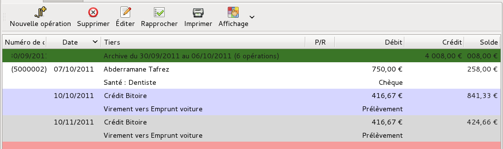
Figure 6.1: Ligne d’une archive
Vous pouvez afficher ou masquer toutes les lignes d’archives dans la liste des opérations de tous les comptes en sélectionnant le menu Affichage - Montrer les lignes d’archives, ou en cliquant sur l’outil Affichage de la barre d’outils, puis en sélectionnant Montrer les lignes d’archives dans sa liste déroulante.
Si vous voulez consulter les opérations à l’intérieur d’une archive, vous pouvez ouvrir cette archive en double-cliquant sur sa ligne : après validation dans la fenêtre qui apparaît, les opérations sont affichées dans la liste.
Note : il ne s’agit que d’une ouverture de l’archive pour affichage, et en aucun cas cette archive n’est supprimée. À la prochaine utilisation de Grisbi, la ligne verte de l’archive réapparaîtra en haut de la liste de chaque compte. Pour une véritable suppression de l’archive, voir la section 6.3.6, Suppression d’une archive.
Pour créer une archive, procédez comme suit :
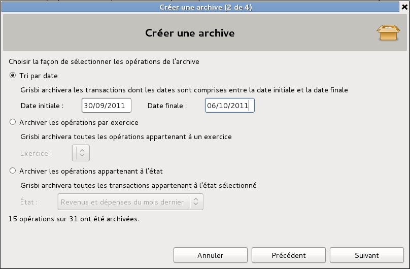
Figure 6.2: Création d’une archive
Note : la dernière ligne dans la fenêtre indique soit une erreur de saisie de ces paramètres, soit le nombre d’opérations qui seront archivées et le nombre total d’opérations de votre fichier de comptes.
Note : au cas où Grisbi serait devenu plus lent après avoir créé une archive, vous pouvez le configurer pour ne pas charger les opérations rapprochées (R) au démarrage, afin d’augmenter sa rapidité (voir la section 8.1, Barre d’outils).
L’archive apparaît alors tout en haut de la liste des opérations de chaque compte (voir la section 6.3.1, Archives dans la liste des opérations).
Lorsqu’un certain nombre d’opérations enregistrées est atteint, Grisbi peut d’une part vous avertir que cette quantité d’opérations n’a pas été encore archivée, d’autre part lancer automatiquement la création d’une d’archive (voir le paragraphe 22.1.2, Avertissement et création automatique).
En cliquant sur la case libellée Créer automatiquement une archive si nécessaire, vous validez la fonction d’archivage automatique.
Avec le libellé Avertir si plus de … opérations ne sont pas archivées, vous pouvez définir ce nombre d’opérations. La valeur par défaut est 3000.
Vous pouvez consulter les paramètres qui ont été définis pendant la création d’une archive, dans le menu Édition - Préférences - Archives. Pour cela, voir la section 22.1.2, Archives existantes.
Vous pouvez, uniquement, modifier le nom d’une archive dans le menu Édition - Préférences. Pour cela, voir le paragraphe 22.1.2, Modifier l’archive.
Vous pouvez supprimer une archive existante, dans le menu Édition - Préférences. Il y a deux fonctions de suppression distinctes : la suppression d’une archive tout en conservant ses opérations, et la suppression d’une archive tout en supprimant toutes ses opérations. Pour cela, voir le paragraphe 22.1.2, Modifier l’archive.
Exporter une archive permet de créer un fichier contenant l’archive, afin de la stocker, ou de l’utiliser dans un autre fichier de comptes de Grisbi ou dans une autre application de comptabilité. L’exportation ne peut se faire qu’à travers les formats de fichiers GSB, QIF ou CSV.
Attention : les formats de fichiers QIF et CSV ne supportent pas les devises, et toutes les opérations seront converties dans la devise de leur compte respectif.
Pour exporter une archive, procédez comme suit :
Grisbi sait gérer quatre types de compte, dont l’utilisation est décrite précisément dans la section 7.7, Types de compte de Grisbi :
Pour lister les comptes, déroulez d’abord l’onglet Comptes dans le panneau de navigation en cliquant sur le petit triangle à sa gauche. Le panneau de navigation affiche la liste des comptes, que vous pouvez faire défiler en cliquant successivement sur l’un des deux petits triangles à gauche dans la barre d’information.
Note : ces triangles peuvent être remplacés, en fonction du thème de l’environnement de bureau ou du gestionnaire de fenêtres que vous utilisez, par d’autres caractères tels que +, -, >, <, etc.
Vous pouvez modifier l’ordre d’affichage des comptes dans le panneau de navigation, en cliquant et déplaçant le nom d’un compte vers le haut ou vers le bas dans la liste des comptes du panneau de navigation.
Pour sélectionner et afficher le contenu d’un compte, utilisez l’une des méthodes suivantes :
Note : ces triangles peuvent être remplacés, en fonction du thème de l’environnement de bureau ou du gestionnaire de fenêtres que vous utilisez, par d’autres caractères tels que +, -, >, <, etc.
Le panneau de navigation affiche le nom du compte sur fond bleu ; la barre d’information affiche, à gauche, le nom du compte sélectionné et, complètement à droite, le solde de ce compte ; le pavé des détails affiche la liste des opérations dans l’onglet Opérations.
Le pavé des détails affiche par défaut deux onglets, pour les comptes de banque ou de caisse :
Il peut aussi afficher, si le module budgétaire a été activé pour le compte sélectionné, trois autres onglets qui ne sont pas décrits dans ce chapitre (voir le chapitre 17, Budgets Prévisionnels) :
Il se peut que certains comptes soient clos, donc leur affichage est masqué. Vous pouvez cependant les afficher en sélectionnant le menu Affichage - Montrer les comptes clos. Pour faire l’opération inverse, voir la section 7.3, Propriétés d’un compte.
L’onglet Propriétés permet de renseigner et d’afficher les informations relatives au compte sélectionné.

Figure 7.1: Propriétés d’un compte
Pour afficher les propriétés d’un compte, sélectionnez-le, puis cliquez sur l’onglet Propriétés dans le pavé des détails. Cet onglet affiche toutes les informations et propriétés qui ont déjà été renseignées sur le compte sélectionné. Pour modifier ces données, voir la section 7.5, Modifier un compte.
Voici les différentes informations qu’un compte peut contenir :
Note : dans le cas d’une comptabilité numérotée (association ou petite entreprise), les noms des comptes sont précédés du numéro fourni par le plan comptable, par exemple «512. Compte banque X » ; ce libellé est donc une donnée alphanumérique.
Note : avant de commencer la création d’un nouveau compte, il est conseillé de consulter la section 7.7, Types de compte de Grisbi, et la section 22.5.5, Modes de règlement, qui donnent beaucoup plus de détails sur les possibilités que Grisbi vous propose.
Pour créer un nouveau compte dans votre fichier de comptes, cliquez sur le menu Édition - Nouveau compte ; l’assistant de création de compte s’ouvre, qui comprend cinq étapes :
Note : lorsque vous créez un nouveau compte, faites attention à choisir un type de compte correct, sinon vous pourriez être amené, plus tard, à transférer toutes les opérations que vous y auriez saisies dans un nouveau compte plus adéquat.

Figure 7.2: Création d’un nouveau compte
Note : il est conseillé de laisser le solde initial du compte à zéro et, si besoin est, de créer par la suite une opération initiale du montant nécessaire, car cela facilitera la gestion future des rapprochements.

Figure 7.3: Saisie du nom du nouveau compte
Si, et seulement si vous venez de créer votre fichier de comptes juste avant cette création de compte, revenez à la fin de la section 3.3, Création d’un nouveau fichier de comptes. Allez juste après la fin de la procédure de création du fichier de comptes, au paragraphe commençant par D’une manière ou d’une autre… , ce qui vous proposera de créer tout de suite d’autres comptes.
Sinon, vous pouvez commencer à utiliser le compte que vous venez de créer.
Vous pouvez aussi configurer précisément les modes de règlement des opérations de ce compte dans le menu Édition - Préférences (voir la section 22.5.5, Modes de règlement).
Pour modifier un compte, sélectionnez le compte dans le panneau de navigation ou avec la barre d’information, puis cliquez sur l’onglet Propriétés dans le pavé des détails.
Les champs suivants doivent obligatoirement être renseignés :
Tous les autres champs sont facultatifs.
Vous pourrez modifier à tout moment toutes ces informations, sauf la devise si vous avez choisi l’euro, ou si vous avez converti en euro un compte existant, comme indiqué dans la section 7.8, Conversion d’un compte en euros.
Les champs Type du compte, Devise du compte, Établissement financier donnent accès à une liste déroulante permettant de renseigner le champ.
Les champs de texte peuvent être remplis au clavier, et un menu contextuel accessible par un clic-droit dans un champ de saisie permet d’effectuer les actions suivantes :
Les methodes de saisie permettent de changer les caractères accentués.
Insérer un caractere de controle Unicode permet d’insérer un code Unichar qui modifie la présentation ; par exemple RLO (forçage droite-à-gauche) renverse l’ordre des lettres et la position du texte.
Attention : si vous modifiez certaines propriétés comme le type du compte, cela nécessitera d’adapter aux nouvelles propriétés du compte, individuellement, toutes les opérations déjà saisies. Dans tous les cas, avant de procéder à une quelconque modification des comptes, faites impérativement une sauvegarde de votre fichier de comptes.
Pour supprimer un compte, cliquez sur le menu Édition - Supprimer le compte courant. Une boîte de dialogue de confirmation s’ouvre ; si c’est vraiment ce que vous voulez, validez la suppression.
Attention : il n’y aura pas d’autre avertissement, et le compte est supprimé (ainsi que toutes ses opérations). Cette opération est irréversible !
Comme énoncé en début de chapitre, Grisbi sait gérer quatre types de compte :
Cette section décrit les fonctionnalités et l’utilisation de chacun de ces types de compte.
Le type de compte compte bancaire admet tous les types d’opérations, en débit ou en crédit. De ce fait, il doit être utilisé pour tous les comptes suivants :
Les paragraphes suivants décrivent ces comptes qui doivent utiliser le type de compte compte bancaire.
Ces comptes servent à enregistrer toutes les opérations que vous pouvez faire avec votre banque :
Un compte de carte de crédit est un compte de carte bancaire qui peut recevoir du débit, mais aussi du crédit, soit sous forme de virement, soit sous forme de prêt (par ex. un crédit renouvelable). Son solde peut donc être positif ou négatif.
Un compte d’attente sert à enregistrer des opérations (normalement des recettes) en attendant de les virer vers un compte bancaire ou de caisse. Il est normalement créditeur, jusqu’au moment du virement vers le compte bancaire ou de caisse, qui le ramène à un solde nul.
La remise de chèques et la remise d’espèces sont des exemples-type de l’utilité du compte d’attente.
Si vous recevez peu ou peu souvent de chèques (ou d’espèces), le plus simple est de les saisir directement dans votre compte bancaire (ou dans votre compte de caisse). Dans ce cas, reportez-vous à la section 8.6.6, Remise de chèques ou d’espèces.
Mais si vous recevez beaucoup de chèques (par exemple parce que vous gérez une association et que vos adhérents payent leur cotisation par chèque), le plus efficace est d’utiliser un compte d’attente.
La méthode consiste donc à créer un compte d’attente, que vous nommez par exemple Chèques à encaisser. Au fur et à mesure de la réception des chèques, vous les enregistrez individuellement dans ce compte, donc chaque chèque correspond à un Tiers. Quand vous déposez les chèques à la banque, vous faites un virement de ce compte Chèques à encaisser vers votre compte bancaire, du montant de l’ensemble de ces chèques, donc du solde du compte Chèques à encaisser. Utilisez pour l’occasion un tiers Remise de chèques, et dans le champ Remarques, saisissez le numéro de votre bordereau de remise.
Le solde du compte Chèques à encaisser revient alors à zéro, et le compte bancaire est crédité du montant de la remise, exactement comme le sera votre relevé bancaire. Ainsi vous gardez et l’information du tiers pour chaque chèque, et celle de la remise globale.
Vous faites ensuite un pseudo-rapprochement du compte Chèques à encaisser en simulant un relevé de solde nul avant la prochaine réception d’un chèque : vérifiez que ce rapprochement a bien un numéro, ou donnez-en lui un, par exemple REM-01, ce qui vous permettra ultérieurement de retrouver quel chèque faisait partie de quelle remise. Ce pseudo-rapprochement est appelé lettrage.
Par exemple, si vous avez reçu deux chèques, vous enregistrez dans votre compte Chèques à encaisser les deux opérations :
Puis lors de la remise des deux chèques à la banque, dans votre compte bancaire, vous enregistrez l’opération :
Note : vous pouvez enregistrer cette opération soit dans votre compte bancaire en Crédit et Catégorie : Virement : Chèques à encaisser, soit dans votre compte Chèques à encaisser en Débit et Catégorie : Virement : Compte bancaire ; dans les deux cas, Grisbi crée automatiquement la contre-opération dans l’autre compte.
Le compte Chèques à encaisser est alors soldé à zéro, mais il garde la trace des chèques déposés à la banque, et dans votre compte bancaire n’apparaît que le montant global du bordereau de remise, que vous pourrez pointer avec votre relevé de compte de la banque.
Bien entendu, si une partie de vos adhérents vous paye en espèces, vous pouvez utiliser de la même façon un compte nommé par exemple Remise d’espèces.
Un compte d’avances sert à enregistrer à la fois les avances que vous recevez et celles que vous consentez. Il peut s’agir, par exemple, d’une avance sur votre salaire ou d’un achat que vous faites pour le compte d’un de vos amis.
Note : le compte d’avances peut être déroutant pour le novice, puisqu’il fonctionne à l’envers, comme vous le découvrirez plus loin. Pour vous faciliter les choses, vous pouvez considérer que le compte d’avances se comporte comme un tiers qui vous donne ou à qui vous donnez de l’argent.
quand vous recevez une avance, vous enregistrez l’opération par un virement du compte d’avances vers un compte bancaire. Le tiers sera la personne ou l’organisation de qui vous recevez l’avance, et la catégorie sera Virement : Compte bancaire. Dans le champ Notes, vous indiquez le motif de l’avance. Le compte d’avances est donc débiteur quand vous devez de l’argent. Lorsque vous remboursez cette avance, vous faites un virement du compte bancaire, avec le même tiers et la même remarque, vers le compte d’avances, dont le solde redevient nul.
Pour une avance en espèces, remplacez le compte bancaire par un compte de caisse.
Dans le cas où l’avance vous est versée par chèque, et si vous avez créé un compte d’attente Chèques à encaisser, vous devrez d’abord enregistrer le chèque dans le compte d’avances, puis faire un virement du montant du chèque, du compte d’avances vers ce compte Chèques à encaisser, et ensuite faire votre virement de remise de chèque, de ce compte Chèques à encaisser vers votre compte bancaire (voir le paragraphe 7.7.1, Compte d’attente).
Vous ferez ensuite un rapprochement du compte d’avances pour faire disparaître ces opérations.
inversement, si vous consentez une avance, vous enregistrez l’opération par un virement d’un compte bancaire vers le compte d’avances. Le tiers sera la personne ou l’organisation à qui vous faites l’avance, et la catégorie sera Virement : Compte d’avances. Dans le champ Remarques, vous indiquerez le motif de l’avance. Le compte d’avances est donc créditeur quand on vous doit de l’argent. Lorsque cette avance vous est remboursée, vous enregistrez l’opération par un virement du compte d’avances vers le compte bancaire, avec le même tiers et la même remarque, et la catégorie sera Virement : Compte bancaire. Le solde de votre compte d’avances redevient nul.
Pour une avance en espèces, remplacez le compte bancaire par un compte de caisse.
Dans le cas où l’avance vous est remboursée par chèque, et si vous avez créé un compte d’attente Chèques à encaisser, vous devrez d’abord enregistrer le chèque dans le compte d’avances, puis faire un virement du montant du chèque, du compte d’avances vers ce compte Chèques à encaisser, et ensuite faire votre virement de remise de chèque, de ce compte Chèques à encaisser vers votre compte bancaire (voir le paragraphe 7.7.1, Compte d’attente).
Vous ferez ensuite un rapprochement du compte d’avances pour faire disparaître ces opérations.
Un compte d’avances vous permet donc de vérifier facilement si vos créances ou vos dettes sont éteintes. Sans cette méthode cette vérification est difficile, sinon impossible.
Note : lorsque vous faites un état des recettes et dépenses, ces opérations devraient être transparentes, puisqu’elles s’annulent deux à deux quand chaque avance est remboursée. En pratique, lors de l’édition de ce genre d’état, vous devrez le configurer pour qu’il ne prenne pas en compte les virements entre comptes, et ainsi ces opérations seront totalement invisibles (voir la section 21.2.2, Virements).
Note : lorsque vous créez un nouveau compte, choisissez donc de préférence le type de compte compte bancaire, sauf si votre nouveau compte devra avoir une utilisation plus spécifique comme celles décrites dans les paragraphes ci-dessous.
Le type de compte compte de caisse est destiné uniquement aux opérations réglées en espèces ; vous ne pouvez pas y sélectionner de mode de paiement et il ne peut en aucun cas devenir négatif. De ce fait, il doit être utilisé pour tous les comptes suivants :
Un compte de caisse permet d’enregistrer dans votre comptabilité les retraits de la banque, pour alimenter la caisse, et les recettes et dépenses en espèces. En ce qui concerne les dépenses, il n’est pas toujours possible ni même utile d’enregistrer toutes les menues dépenses. Mais vous pouvez les enregistrer globalement, par exemple en fin de mois, dans des catégories adéquates ou bien dans une catégorie Dépenses diverses, ceci afin de vider ce compte de caisse. Comme ceci, vous n’aurez pas de flou dans la caisse.
Un compte de caisse accepte les virements en provenance d’autres comptes. Lorsque vous faites un retrait en espèces sur votre compte bancaire, enregistrez-le en tant que virement vers le compte de caisse.
Le type de compte compte de passif est un compte qui représente une dette, par exemple un emprunt. De ce fait, il doit être utilisé pour tous les comptes suivants :
Un compte d’emprunt sert à gérer un emprunt. Son solde initial est nul, mais, dès que vous contractez une dette, il devient négatif du montant de cette dette, et augmente ensuite à chaque remboursement versé, pour devenir nul après son dernier remboursement.
En pratique, le solde initial de ce compte est nul, mais il devient (fortement) négatif dès la première opération, à savoir le virement, par l’organisme de crédit, du montant de l’emprunt sur votre compte courant. Vous enregistrez à ce moment-là un virement du compte de passif vers ce compte courant, ce qui vous permet de procéder à votre achat.
Par exemple, quand l’organisme de crédit Crédit Bitoire vous verse le montant de 20 000 pour acheter chez Auto Matique une voiture qui coûte 25 000, vous créez un compte de passif appelé Emprunt, et dans ce compte, vous saisissez l’opération suivante :
Note : si ce virement est fait directement par l’organisme de crédit sur le compte du vendeur, la catégorie devra être, par exemple, Virement : Compte Immobilisation; vous pouvez n’avoir qu’un seul compte d’immobilisation pour tous vos biens, ou bien un compte par bien acheté.
À chaque fois que vous versez une échéance de votre emprunt, vous enregistrez un virement de votre compte courant vers le compte Emprunt, du montant du capital remboursé, en catégorie Virement : Emprunt, et une dépense sur ce compte courant, du montant des intérêts, en catégorie Frais financiers : Charges d’emprunts. Éventuellement, ajoutez-y une dépense pour l’assurance, en catégorie Assurances. De cette façon, vous saurez à tout moment le montant du capital restant à rembourser, mais aussi le coût de l’emprunt.
Par exemple, à chaque échéance, vous saisissez une opération ventilée sur votre compte courant :
N’oubliez pas que, si le montant de l’échéance est constant, à l’intérieur de chaque échéance suivante, le capital remboursé augmente et l’intérêt versé diminue (voir le tableau d’amortissement de l’emprunt).
Vous pourrez donc parfaitement utiliser un compte de passif pour gérer vos emprunts ; comme Grisbi ne propose pas pour l’instant la ventilation automatique des remboursements d’emprunt (amortissements, intérêts et frais reportés automatiquement de votre tableau d’amortissement), vous pourrez tout de même saisir une opération planifiée et ventilée pour les remboursements, en mode manuel ou automatique, et vous ajusterez les montants à chaque échéance selon votre tableau (voir la section 16.3, Tableau d’amortissement).
Lorsqu’un compte de passif est soldé, ce qui signifie que vous avez remboursé la dette correspondante, Grisbi vous prévient en affichant un message dans la partie inférieure du pavé des détails de la page d’accueil (voir le chapitre 4, Accueil).
Les cartes bancaires à débit différé peuvent être gérées de différentes manières, mais il est préférable de les gérer dans un compte spécifique, qui sera de type compte de passif, puisque leur solde ne peut pas être positif.
Vous trouverez tous les détails pour gérer correctement ces cartes bancaires dans la section 18.2, Carte bancaire à débit différé.
Le type de compte compte d’actif est un compte qui représente un bien, par exemple une voiture. Son solde initial est nul, mais il devient positif dès que vous possédez ce bien, d’un montant égal à sa valeur, puis il diminue avec le temps à mesure de sa dépréciation, pour finir à une valeur nulle. Les opérations se font par virement. On peut le considérer comme le contraire d’un compte de passif.
En pratique, le solde initial de ce compte est nul, mais il devient (fortement) positif dès la première opération, à savoir l’achat de ce bien. Vous enregistrez à ce moment-là un virement de votre compte courant vers ce compte d’actif, égal au prix d’achat du bien, ce qui vous permet de procéder à votre achat.
Par exemple, quand vous achetez la voiture à 25 000 chez Auto Matique, vous créez un compte d’actif appelé Compte Immobilisation, et dans votre compte courant, vous saisissez l’opération suivante :
Votre compte Immobilisation enregistre donc une opération en crédit, du montant de cette voiture.
À chaque fois que vous constatez une dépréciation de ce bien, vous enregistrez un retrait du compte d’actif, du montant de la dépréciation, dans la catégorie Amortissements : Dépréciation. Ces retraits pourront être faits jusqu’à ce que le solde du compte soit nul. De cette façon vous connaîtrez en permanence la valeur de votre bien.
Par exemple, au bout d’un an la cotation de votre voiture (par ex. dans votre journal préféré) a perdu une certaine valeur ; dans votre compte Immobilisation, vous saisissez l’opération suivante :
Lors de l’achat, le montant que vous possédez réellement est votre apport personnel. Au cours du temps, vous remboursez les mensualités de votre emprunt, tandis que votre bien se déprécie. Le solde des comptes d’actif et de passif vous donnera à tout moment le montant que vous possédez globalement.
Cette section devient de plus en plus obsolète au fur et à mesure que le temps passe, mais nous la maintenons encore pour vous permettre l’éventuel import de vieux fichiers de compte.
Cette fonction n’existe plus à partir de la version 0.8 de Grisbi. Donc, si vous avez absolument besoin de réaliser cette opération, le seul moyen serait de la faire en utilisant une version précédente, de la manière suivante :
Attention : cette procédure n’est qu’une proposition, et n’a pas été testée avec toutes les versions précédentes de Grisbi. C’est pour cela qu’il est de la plus haute importance de sauvegarder auparavant votre fichier de comptes en lieu sûr.
Attention : d’une manière générale, il est déconseillé d’avoir des accents ou des espaces dans les noms des répertoires et fichiers utilisés par Grisbi. Si c’est le cas, renommez-les maintenant. Par exemple, les espaces peuvent être remplacées par des tirets bas (_).
Les différents comptes que vous avez créés contiennent les opérations. Pour afficher la liste des comptes enregistrés dans votre fichier de comptes, utilisez la barre d’information ou le panneau de navigation (voir le chapitre 4, Accueil et la section 7.1, Liste des comptes).
Pour afficher les opérations d’un compte, sélectionnez ce compte dans la liste : l’onglet Opérations s’affiche par défaut. Il possède quatre éléments principaux :
Note : si vous n’avez jamais fait de rapprochement, donc pas de pointages, Grisbi ne peut ni calculer ni afficher de solde pointé.
La barre d’outils présente les fonctions suivantes :
Les options du menu Affichage influent par défaut sur l’affichage de tous les comptes. Vous pouvez préférer un affichage différent pour chaque compte, cela est configurable dans le menu Édition - Préférences (voir le paragraphe 22.3.1, Différenciation des comptes).
La barre d’outils peut être déplacée dans l’écran en cliquant sur sa poignée (petit rectangle vertical à gauche de la barre) et en la déplaçant. Pour la réattacher à son emplacement d’origine dans le pavé des détails, la remettre en haut de la fenêtre, le haut de la poignée sur le petit trait qui visualise sa place d’origine.
La liste des opérations s’affiche dans le panneau des détails.
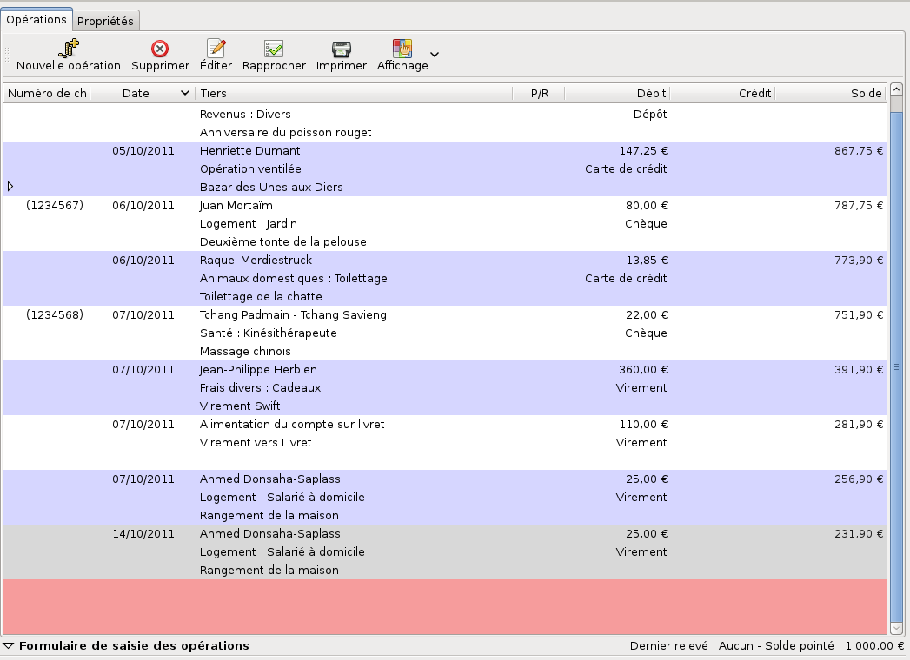
Figure 8.1: Liste des opérations
Elle affiche en haut la barre des libellés des colonnes. Vous pouvez élargir ou rétrécir une colonne en cliquant sur le séparateur entre deux colonnes et en le déplaçant. Pour rétablir la largeur des colonnes à leur valeur par défaut, sélectionnez le menu Affichage - Réinitialiser la largeur des colonnes.
Vous pouvez déplacer la liste des opérations vers le haut ou vers le bas avec la molette de la souris, ou bien avec la souris et l’ascenseur vertical. Le déplacement vers la gauche ou la droite se fait avec la souris et l’ascenseur horizontal.
Vous pouvez choisir d’afficher ou non les opérations rapprochées et les lignes d’archives : sélectionnez Affichage - Montrer les opérations rapprochées ou Affichage - Montrer les lignes d’archives dans la barre de menus ou dans la barre d’outils (voir la section 4.4.3, Menu Affichage ou la fonction Affichage dans la section 8.1, Barre d’outils).
Du point de vue de la base de données de Grisbi, une opération est constituée de ses champs d’information. Les champs d’information de chaque opération s’affichent dans les différentes cellules définies par l’intersection des lignes et des colonnes. Il ne peut y avoir au maximum que quatre lignes et sept colonnes, ce qui définit un maximum de vingt-huit champs d’information pour chaque opération.
Chaque opération peut être affichée sur 1, 2, 3 ou 4 lignes, suivant le mode d’affichage sélectionné (voir la section 4.4.3, menu Affichage dans la barre de menus ou la fonction Affichage dans la section 8.1, Barre d’outils). L’affichage courant y est indiqué par une coche.
Vous pouvez aussi configurer le contenu de ces lignes, ainsi que la mémorisation des réglages de l’affichage, individuellement pour chaque compte, dans le menu Édition - Préférences (voir les sections 22.3.1, Comportement de la liste et 22.3.2, Cellules de la liste des opérations).
Le libellé d’une colonne est toujours le nom du champ d’information affiché dans la première ligne des opérations.
Pour des raisons de lisibilité de l’affichage, Grisbi n’affiche aucune bordure aux cellules, colonnes, lignes et opérations, mais présente une alternance de couleurs de fond violet et blanc à chaque ligne.
Grisbi sait gérer, pour chaque opération, une liste complète de champs d’information et de saisie, qui sont les suivants :
La liste des opérations et le formulaire de saisie utilisent chacun un sous-ensemble de ces champs. Vous pouvez voir les deux listes complètes dans les tableaux du menu Édition - Préférences, onglets Cellules de la liste des opérations et Contenu, ou dans les sections 22.3.2, Cellules de la liste des opérations et 22.4.1, Contenu.
Grisbi affiche par défaut, dans la liste des opérations, un certain nombre de ces champs (tiers, catégorie, débit, etc.). Mais vous pouvez aussi gérer les champs d’information différemment, c’est à dire afficher de nouveaux champs, les modifier ou en supprimer l’affichage, à votre convenance. Vous pouvez soit faire ces manipulations dans le menu Édition - Préférences - Opérations - Cellules de la liste des opérations, qui offre un aperçu complet de la disposition des champs dans les cellules, et permet de faire plusieurs modifications facilement (voir la section 22.3.2, Cellules de la liste des opérations), soit le faire directement dans la liste des opérations, en suivant les méthodes ci-dessous :
Pour ajouter un champ d’information dans une cellule, procédez comme suit :
Pour modifier un champ d’information dans une cellule, procédez comme suit :
Pour supprimer un champ d’information dans une cellule, procédez comme suit :
Pour déplacer un champ d’information, vous pouvez le supprimer puis l’ajouter dans un autre champ vide, mais vous pouvez aussi le faire dans le menu Édition - Préférences - Opérations - Cellules de la liste des opérations. Voir la section 22.3.2, Cellules de la liste des opérations.
Pour changer l’ordre d’affichage des opérations, vous pouvez faire un tri sur les opérations sur un des champs d’information ; procédez comme suit :
Note : ces triangles peuvent être remplacés, en fonction du thème de l’environnement de bureau ou du gestionnaire de fenêtres que vous utilisez, par d’autres caractères tels que +, -, >, <, etc.
Note : un tri sur l’affichage réalisé ainsi n’affecte en aucun cas le solde à chaque ligne, qui est calculé après chaque opération ; suivant le tri et les options d’affichage que vous avez choisi, le solde à chaque ligne peut présenter une évolution non chronologique.
Vous pouvez aussi configurer l’ordre général des tris dans le menu Édition - Préférences (voir la section 22.3.1, Modes d’affichage).
Note : le choix du critère de tri primaire (date d’opération ou date de valeur) qui peut y avoir été fait modifie nécessairement le solde affiché à chaque ligne d’opération, puisque Grisbi calcule et affiche le solde à chaque ligne.
Le formulaire de saisie est situé en-dessous de la liste des opérations, où une ligne affiche, à gauche de Formulaire de saisie des opérations, un petit triangle qui permet d’afficher ou de masquer ce formulaire.

Figure 8.2: Formulaire de saisie des opérations
Note : ce triangle peut être remplacé, en fonction du thème de l’environnement de bureau ou du gestionnaire de fenêtres que vous utilisez, par d’autres caractères tels que +, -, >, <, etc.
Le formulaire de saisie comprend par défaut les sept champs suivants : Date de l’opération, Tiers, Débit, Crédit, Catégorie, Moyen de paiement et Remarques. Vous pouvez avoir besoin de champs supplémentaires, par exemple Exercice, Imputation budgétaire ou autre. Pour cela, allez dans le menu Édition - Préférences - Formulaire des opérations - Contenu, ou cliquez-droit dans le formulaire de saisie, dans une zone grise en dehors des champs de saisie, sélectionnez Configurer le formulaire (voir la section 22.4, Formulaire des opérations).
Pour connaître l’ensemble des champs que peut gérer Grisbi, voir la section 8.2.2, Champs d’information et de saisie.
Une fois le formulaire affiché, un menu contextuel accessible par un clic-droit dans un champ de saisie permet d’effectuer les actions suivantes :
Le choix methodes de saisie permet de changer les caractères accentués.
Le choix Insérer un caractere de controle Unicode permet d’insérer un code Unichar qui modifie la présentation ; par exemple RLO (forçage droite-à-gauche) renverse l’ordre des lettres et la position du texte.
De plus, un autre menu contextuel, accessible par un clic-droit en dehors d’un champ de saisie, permet d’accéder à la configuration du formulaire : vous pouvez en configurer précisément le contenu, la présentation, le comportement, ainsi que les paramètres d’aide à la saisie, dans le menu Édition - Préférences (voir la section 22.4, Formulaire des opérations).
En-dessous de la liste des opérations, sur la même ligne que le formulaire de saisie, s’affichent à droite deux informations : la date du dernier relevé bancaire rapproché et le solde pointé correspondant à ce dernier rapprochement, à moins que vous ne pointiez très régulièrement vos opérations, auquel cas il correspond au solde tel que le connaît votre banque (voir le chapitre 9, Rapprochement bancaire).
Pour sélectionner une opération, vous avez deux moyens :
L’opération apparaît alors sur fond rouge et ses détails s’affichent dans le formulaire.
Un menu contextuel est disponible sur la liste des opérations. Un clic-droit sur la ligne d’une opération permet les fonctions suivantes, selon le contexte :
La saisie d’une opération se fait dans le formulaire de saisie, situé en-dessous de la liste des opérations.
Pour saisir une nouvelle opération, ouvrez ou affichez le formulaire de saisie avec l’une de ces méthodes :
Note : ce triangle peut être remplacé, en fonction du thème de l’environnement de bureau ou du gestionnaire de fenêtres que vous utilisez, par d’autres caractères tels que +, -, >, <, etc.
La dernière ligne, entièrement vide, en bas de la liste des opérations, apparaît sur fond rouge, le formulaire de saisie vierge s’affiche, avec seule la date du jour, ou la dernière date entrée, sur fond bleu.
Saisissez les différentes informations concernant votre opération dans les différents champs du formulaire. Certains champs peuvent être renseignés soit avec le clavier, soit avec une liste déroulante. Si vous utilisez le clavier, cette saisie sera automatiquement enregistrée dans la liste déroulante de ce champ. Si vous le voulez, vous pourrez toujours supprimer plus tard ce choix dans la liste : reportez-vous aux différents chapitres traitant de ces listes (Tiers, Catégories, Imputations budgétaires et les différents onglets de la section Ressources du menu Édition - Préférences.
Chaque champ de saisie doit être renseigné par le type de donnée qui lui convient (date, nombre, texte), sinon l’arrière-plan du champ deviendra rouge.
Une fois le dernier champ du formulaire saisi et validé, l’opération s’affiche dans la liste des opérations, et la ligne active, en rouge, passe à la dernière ligne vide de la liste.
Les sous-sections suivantes donnent les différentes méthodes de saisie disponibles.
La touche <Tabulation> permet le déplacement dans le formulaire.
La touche <Entrée> permet soit de se déplacer dans le formulaire de saisie, soit de valider la saisie ; cela est configurable dans le menu Édition - Préférences (voir la section 22.4.2, Comportement). Cette configuration affecte à la fois la touche <Entrée> du clavier alphabétique et celle du pavé numérique.
La touche <Échap> permet d’annuler la saisie en cours.
La date du jour ou la dernière date entrée s’affiche automatiquement à l’ouverture du formulaire.
Vous pouvez saisir la date avec l’un de ces formats :
De plus, il n’est pas nécessaire de saisir l’année si celle-ci est identique à l’année en cours, ni le mois si celui-ci est le mois en cours, car Grisbi complétera automatiquement.
Enfin, vous pouvez incrémenter ou décrémenter la date affichée :
Un double-clic sur la date, ou la combinaison de touches <Ctrl> <Entrée>, affiche un calendrier permettant de sélectionner la date.
Vous pouvez alors sélectionner une nouvelle date avec la souris ou le clavier :
Certains champs disposent d’une liste déroulante de choix déjà définis. Vous pouvez y sélectionner un libellé avec la souris, ou préférer saisir les données au clavier dans le champ de saisie.
L’ouverture d’une liste déroulante peut se faire avec la souris en cliquant sur le petit triangle à droite du champ, ou avec les touches du clavier <Page Bas> ou <Flèche bas>, le déplacement dans cette liste peut se faire avec la souris, ou avec les touches <Page Haut>, <Page Bas>, <Flèche haut> ou <Flèche bas>, et la validation d’un choix à l’intérieur d’une liste déroulante se fait avec la touche <Entrée>.
Note : ces triangles peuvent être remplacés, en fonction du thème de l’environnement de bureau ou du gestionnaire de fenêtres que vous utilisez, par d’autres caractères tels que +, -, >, <, etc.
Grisbi vous proposera de compléter automatiquement le mot saisi dès qu’il en aura reconnu suffisamment de caractères. L’auto-complètement apparaît sur fond bleu. Pour accepter celui proposé, appuyez sur la touche <Tabulation> ou la touche <Entrée>, selon votre choix de configuration, sinon continuez la saisie.
Les listes déroulantes des devises, exercices et modes de règlement s’ouvrent avec la touche <Espace> ; on s’y déplace avec les touches <Flèche Haut> et <Flèche Bas> et l’on valide avec la touche <Espace>.
Dans le formulaire de saisie, vous pouvez saisir les nombres, avec ou sans décimales, dans les champs tels que Débit et Crédit, à l’aide du clavier.
Vous pouvez aussi y saisir des formules arithmétiques simples, à l’aide des quatre opérateurs d’addition, soustraction, multiplication et division. Cela remplace la calculatrice sur votre bureau.
Pour saisir une formule, saisissez-la comme si c’était un texte, par exemple «3,40-2,10» , puis continuez normalement la saisie des autres champs de votre opération ; si elle est mal écrite, elle s’affiche sur fond rouge. Lorsque vous la validez, le résultat «1,30 » s’affiche dans le champ de saisie, et si la formule est toujours mal écrite, le message «###ERR### » s’affiche à la place et sur fond rouge.
Cette calculatrice accepte la multiplication ou la division, mais de manière exclusive de l’addition ou de la soustraction ; c’est-à-dire qu’on peut mélanger additions et soustractions dans une saisie mais pas une multiplication (ou une division) et un quelconque autre opérateur : on ne peut pas mettre de parenthèses pour indiquer un ordre de priorité d’opération.
Cette fonctionnalité peut être très utile, notamment pour réajuster les montants d’une opération ventilée en cas d’écart.
Pour enregistrer une remise de chèques, vous les déposez d’abord sur votre compte bancaire à la banque qui vous remet un bordereau de remise, puis vous saisissez l’opération de remise, en crédit sur votre compte bancaire.
Pour enregistrer une remise d’espèces, vous les déposez d’abord soit sur votre compte bancaire à la banque qui vous remet un bordereau de remise, soit dans votre porte-monnaie, puis vous saisissez l’opération de remise, en crédit sur votre compte de caisse.
Si vous recevez beaucoup de chèques (par exemple parce que vous gérez une association et que vos adhérents payent leur cotisation par chèque), vous avez deux méthodes de gestion :
Si aucune de ces méthodes ne vous convient, une meilleure solution consiste à utiliser un compte d’attente. Pour cela, la méthode est explicitée en détails au paragraphe 7.7.1, Remise de chèques ou d’espèces.
Le terme virement recouvre deux notions différentes : les virements externes et les virements internes. Voici dans chaque cas les méthodes de saisie conseillées.
Les virements externes sont des virements que votre banque, ou vous-même si vous passez un ordre par Internet, effectue vers ou à partir de votre compte. Ils peuvent être entrants (par ex. si votre employeur donne l’ordre à votre banque de vous virer le montant de votre salaire) ou sortants (par ex. si vous donnez l’ordre à votre banque de faire un virement Swift pour payer une facture à l’étranger).
Il s’agit d’un type d’opération assimilable à un chèque, et vous pourrez la saisir en sélectionnant le Moyen de paiement : Virement dans le formulaire de saisie.
Les virements internes sont des transferts entre vos différents comptes de Grisbi, et qui n’ont pas forcément d’équivalent en banque ; voici quelques exemples :
Par contre, si vous n’utilisez aucun de ces comptes et que votre fichier de comptes contient uniquement un compte courant et un compte d’épargne, alors les virements internes correspondent à des virements d’un compte vers l’autre. Ce seront bien des opérations de type Virement, et vous les enregistrerez dans la catégorie Virement : Compte d’épargne ou Virement : Compte courant, selon le cas.
Vous pouvez réaliser des virements entre comptes en sélectionnant la catégorie Virement : le_compte_ à_virer. Selon que vous saisissez son montant en Débit ou en Crédit, ce sera un virement vers le compte ou un virement à partir du compte. Il est bien sûr nécessaire que les deux comptes se trouvent dans le même fichier de comptes.
Si vous faites un virement entre deux comptes de devises différentes, Grisbi effectuera automatiquement la conversion, et le débit et le crédit feront apparaître clairement les devises ; par exemple, si vous faites un virement d’un compte en euros vers un compte en yens, dans le compte en yens le virement apparaîtra en yens dans le champ Crédit, et son solde en yens sera correct, et dans le compte en euros le débit apparaîtra en yens dans le champ Débit et en euros dans le champ Montant.
Note : pour que le champ Montant s’affiche, vous devrez configurer la liste des opérations et ajuster le nombre de lignes affichées dans la liste des opérations (voir la section 22.3.2, Cellules de la liste des opérations ou la section 8.2.3, Gestion des champs d’information).
Lorsque vous saisissez une opération de type virement interne, d’un compte vers un autre, ou sur un compte à partir d’un autre, Grisbi crée automatiquement la contre-opération dans l’autre compte, c’est-à-dire le virement correspondant dans le compte destinataire ou dans le compte origine.
S’il s’agit d’un virement en devises, il créera aussi la contre-opération dans la devise du compte de destination de façon automatique si le taux de change de la devise est fixe, sinon il vous le demandera avant de passer l’écriture.
Pour afficher la contre-opération d’un virement, cliquez-droit sur sa ligne dans un des deux comptes, et dans le menu contextuel, sélectionnez Afficher la contre-opération : l’autre compte s’affiche et l’opération est sélectionnée (sur fond rouge). Si vous refaites exactement la même manipulation dans ce même compte, le compte d’origine et son virement se réaffichent.
Vous pouvez être amené à consentir ou recevoir une avance de fonds : il peut s’agir, par exemple, d’une avance sur votre salaire ou d’un achat que vous faites pour le compte d’un de vos amis.
Vous pouvez gérer cela de deux manières : la plus simple est de créer une catégorie dédiée, et d’y affecter les opérations de débit et de crédit ; quand toutes les avances sont remboursées, le solde de cette catégorie, affiché dans la liste des catégories, doit être égal à zéro (voir la section 13.2, Liste des catégories et des sous-catégories). Une manière plus intéressante est de créer un compte d’avances, qui permet une vision plus immédiate de l’état des avances en cours : elle est décrite en détails dans le paragraphe 7.7.1, Compte d’avances.
Le rappel automatique d’une opération vous permet de saisir beaucoup plus rapidement une opération affectée à un tiers déjà connu par votre fichier de comptes : lors de la saisie du tiers, dès que vous sortez de la zone de saisie, les autres champs du formulaire sont automatiquement complétés à l’identique de la dernière opération saisie pour ce tiers. À vous de les modifier si nécessaire avant de valider l’opération.
Vous pouvez ajuster finement ce comportement dans le menu Édition - Préférences (voir la section 22.4.3, Aide à la saisie du formulaire).
Note : si vous ne modifiez aucun champ et que vous validez l’opération, vous obtiendrez une opération purement et simplement dupliquée, mais qui portera la date du jour courant.
Grisbi peut gérer des opérations saisies avec une devise différente de celle du compte, avec ou sans frais de change.
Pour utiliser une devise différente, vous devez d’abord procéder aux configurations suivantes :
Lors de la saisie de l’opération en devise dans le formulaire de saisie, choisissez dans la liste déroulante la devise dans laquelle l’opération doit être enregistrée. Plusieurs questions peuvent se poser :
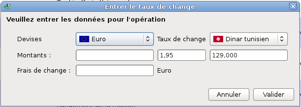
Figure 8.3: Frais et taux de change
Grisbi vous permet d’utiliser des tiers virtuels : un tiers virtuel est un état qui représente une liste de plusieurs tiers.
Lorsque vous saisissez une opération avec pour tiers un tiers virtuel, Grisbi enregistre, au moment de sa validation, une opération identique (montant, catégorie, imputation budgétaire, moyen de paiement etc.) pour chacun des tiers représentés par ce tiers virtuel. Par exemple, vous pouvez saisir en une seule fois un appel à cotisation pour 200 adhérents d’une association, ce qui représente un gain de temps très appréciable…
Pour saisir une opération avec un tiers virtuel, saisissez ce tiers dans le champ Tiers du formulaire de saisie, sous la forme «État : nom_du_tiers_virtuel».
Pour créer un tiers virtuel, créez un état contenant une liste de tiers : voir le paragraphe 21.4.1, Tiers virtuel.
Pour modifier un tiers virtuel, modifiez l’état qui l’a créé : voir la section 20.6, Modification d’un état.
Pour supprimer un tiers virtuel, vous avez deux possibilités :
Ventiler une opération signifie répartir son montant entre plusieurs lignes (par exemple, vos achats au supermarché peuvent se répartir entre les catégories Alimentation et Soins : Habillement). Vous pouvez aussi répartir une somme sur la même catégorie, mais avec des informations différentes dans le champ Remarques (par exemple pour mémoriser le détail d’une opération).
Pour saisir une opération ventilée, procédez comme suit :

Figure 8.4: Saisie de l’opération ventilée
Pour saisir les sous-opérations ventilées, continuez la saisie comme suit :
Note : le montant d’une sous-opération peut-être le résultat d’une opération portant sur plusieurs achats ou dépenses inscrites sur un ticket de caisse ou une facture ; vous pouvez donc utiliser la calculatrice dans les champs de saisie Débit ou Crédit pour obtenir plus facilement les montants des sous-opérations (voir la section 8.6.5, Saisie de formules).
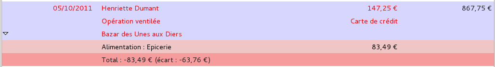
Figure 8.5: Saisie de la première sous-opération ventilée
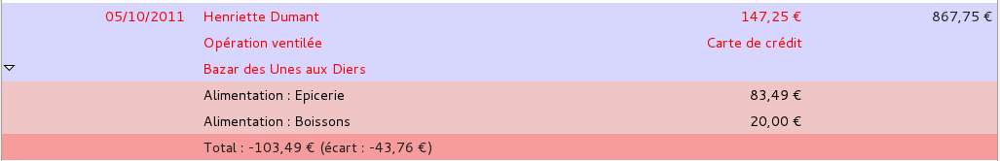
Figure 8.6: Saisie de la deuxième sous-opération ventilée
et ainsi de suite jusqu’à ce que le montant de votre dernière sous-opération soit exactement égal à l’écart affiché ; validez celle-ci : la dernière sous-opération s’affiche sur fond rose et une nouvelle ligne sur fond rose apparaît, vide, ce qui indique qu’il n’y a plus d’écart et que la somme des sous-opérations est bien égale à la valeur totale de l’opération ventilée.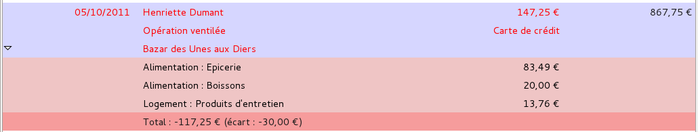
Figure 8.7: Saisie de la troisième sous-opération ventilée
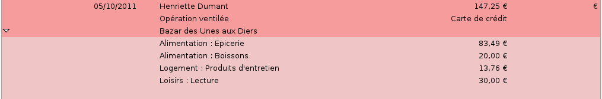
Figure 8.8: Saisie de la dernière sous-opération ventilée
À ce moment, toutes les sous-opérations sont entrées et validées et, dans la liste des opérations, la ligne de l’opération ventilée est affichée sur fond rouge, donc sélectionnée. Le formulaire réaffiche les données que vous y avez saisies. Toutes les sous-opérations étant correctes, validez l’opération ventilée, qui s’affiche alors dans la liste des opérations, en caractères noirs et sur fond rouge, sans les sous-opérations.
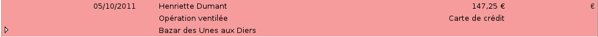
Figure 8.9: Opération ventilée validée
Une fois le dernier champ du formulaire saisi et validé, la ligne active, en rouge, passe à la dernière ligne vide de la liste, comme pour une opération normale.
Vous pouvez vérifier tout le contenu de cette opération ventilée, en cliquant sur le petit triangle à gauche de sa ligne pour dérouler l’opération.
Note : ces triangles peuvent être remplacés, en fonction du thème de l’environnement de bureau ou du gestionnaire de fenêtres que vous utilisez, par d’autres caractères tels que +, -, >, <, etc.
Vous pouvez alors modifier les sous-opérations en les sélectionnant et en modifiant leurs champs de la même manière, et de façon à ce que finalement leur somme soit égale à la valeur de l’opération ventilée.
Le rappel automatique d’une opération ventilée fonctionne comme celui d’une opération normale (voir la section 8.6.9, Rappel automatique d’une opération).
Cependant, pour une opération ventilée, un champ supplémentaire Restaurer les sous-opérations apparaît en bas du formulaire de saisie, à gauche des boutons Annuler et Valider, et vous pouvez cocher la case correspondante en cliquant dessus ou sur le champ, et selon votre besoin.
Pour modifier une opération ou une sous-opération ventilée, sélectionnez-la pour qu’elle s’affiche dans le formulaire de saisie, puis passez en mode édition par l’une de ces méthodes :
Si le formulaire de saisie n’était pas affiché, il s’affiche. La date s’affiche sur fond bleu dans le formulaire.
Il est alors possible de modifier toutes les informations désirées, en se déplaçant dans les champs de saisie.
La combinaison de touches <Ctrl> <P> donne ou retire à une opération sélectionnée le statut d’opération pointée, et <Ctrl> <R> celui d’opération rapprochée (voir le chapitre 9, Rapprochement bancaire). Vous pouvez aussi donner à une opération le statut d’opération pointée, mais uniquement celui-ci, par la combinaison <Ctrl> <Clic> dans la colonne P/R, sur la ligne de l’opération à pointer.
Si l’opération a déjà été rapprochée (voir le chapitre 9, Rapprochement bancaire), il est par contre impossible de modifier son montant. Les autres champs restent modifiables. Si vous avez vraiment et impérativement besoin de modifier le montant (mais si vous avez déjà rapproché l’opération, cela ne devrait pas être le cas), procédez comme suit :
Attention : cette manipulation est hautement déconseillée, car elle fausse momentanément le rapprochement associé à cette opération, et il redevient exact à la fin, si vous n’en avez pas modifié le montant (cette manipulation sera d’ailleurs probablement automatiquement désactivée dans une future version de Grisbi dans le cas d’une comptabilité de type association).
Pour supprimer une opération, sélectionnez-la, et utilisez l’une de ces méthodes :
La suppression d’une sous-opération ventilée se fait de la même façon, mais vous devrez faire en sorte que finalement la somme des sous-opérations soit égale à la valeur de l’opération ventilée.
La suppression n’est pas possible si :
Attention : cette dernière manipulation est hautement déconseillée car elle fausse le rapprochement associé à cette opération.
Pour utiliser une opération comme modèle, sélectionnez-la, et utilisez l’une de ces méthodes :
Une nouvelle opération s’affiche sur fond rouge, dans une nouvelle ligne en-dessous de l’opération sélectionnée précédemment ; elle n’a évidemment ni le statut Pointé ni le statut Rapproché.
Vous pouvez alors éditer cette nouvelle opération, par exemple en modifiant sa date.
Pour cloner une opération, sélectionnez-la pour qu’elle s’affiche dans le formulaire de saisie, puis utilisez l’une de ces deux méthodes :
L’opération sélectionnée précédemment apparaît toujours sur fond rouge, et l’opération clonée s’affiche dans une nouvelle ligne en-dessous ; elle n’a évidemment ni le statut Pointé ni le statut Rapproché.
Vous pouvez alors éditer cette nouvelle opération, par exemple en modifiant la date.
Pour convertir une opération en opération planifiée, sélectionnez-la pour qu’elle s’affiche dans le formulaire de saisie, puis utilisez l’une de ces deux méthodes :
L’onglet Échéancier s’affiche. La nouvelle opération apparaît dans la liste des opérations planifiées, et le formulaire de saisie s’affiche avec les paramètres de l’opération. Vérifiez ou éditez ces paramètres selon vos besoins, puis validez.
Pour déplacer une opération dans un autre compte, sélectionnez-la, puis utilisez l’une de ces deux méthodes :
Il est bien entendu que les deux comptes doivent se trouver dans le même fichier de comptes.
Note : il est impossible de déplacer une opération si elle a le statut Rapproché. Par contre, c’est possible si elle a le statut Pointé.
Il peut arriver que vous ayez besoin d’un nouveau tiers, d’une nouvelle catégorie ou d’une nouvelle imputation budgétaire pendant une saisie d’opération. Dans ce cas, Grisbi permet d’en faire la création «à la volée » : saisissez le nouveau nom dans la zone de liste déroulante, et Grisbi l’ajoutera automatiquement à la liste. Vous pourrez ultérieurement faire toutes les modifications nécessaires dans les onglets Tiers (voir la section 12.6, Modification d’un tiers), Catégories (voir la section 13.6, Modification d’une catégorie ou d’une sous-catégorie) ou Imputations budgétaires (voir la section 14.6, Modification d’une (sous-) imputation budgétaire).
Note : pour saisir une catégorie (ou une imputation budgétaire : sous-imputation budgétaire) avec une sous-catégorie (ou sous-imputation), il faut respecter la syntaxe catégorie : sous-catégorie (avec les deux points comme séparateur, encadrés par des espaces), sinon Grisbi ne comprendra pas. De même si vous ajoutez une nouvelle sous-catégorie (ou sous-imputation budgétaire) à une catégorie (ou imputation) existante.
Vous pouvez également créer un tiers, une catégorie ou une imputation budgétaire directement dans leur onglet respectif, sélectionné dans le panneau de navigation.
Pour imprimer la liste des opérations, cliquez sur le bouton Imprimer de la barre d’outils ; une fenêtre d’impression s’ouvre, dont l’aspect et les fonctions dépendent de votre gestionnaire d’impression ; vous aurez le plus souvent les choix suivants :
En fonction de votre gestionnaire d’impression, vous pourrez disposer de réglages divers tels que la taille et l’orientation de la feuille, la résolution, la police d’impression et sa taille, etc.
Note : la liste des opérations de certains comptes peut être très longue ; affichez un aperçu avant impression pour vérifier ce que vous allez imprimer.
Les rapprochements bancaires servent à vérifier la bonne correspondance entre l’historique des opérations dans votre compte bancaire et les opérations saisies dans Grisbi. Faire un rapprochement bancaire consiste donc à faire une comparaison entre un relevé de votre compte bancaire et les opérations enregistrées dans le compte correspondant dans Grisbi. Un rapprochement dans Grisbi est une représentation d’un relevé bancaire, comprenant un solde initial, des opérations et un solde final. Cette représentation est figée, comme le relevé bancaire. Donc une fois qu’un rapprochement est terminé et est correct, on ne devrait pas avoir à le modifier, sauf dans des cas exceptionnels.
Il est conseillé de faire les rapprochements de vos comptes régulièrement : cela permet aussi de détecter, autant dans Grisbi que dans votre relevé bancaire, des oublis ou des erreurs de saisie d’opérations, des décalages de tirage d’opérations, l’existence de frais bancaires, etc.
Pour faire un rapprochement bancaire, munissez-vous du relevé de votre compte bancaire, et affichez la liste des opérations du compte correspondant sur Grisbi (voir le chapitre 8, Opérations d’un compte).
Pour avoir accès à la fonction de rapprochement bancaire, cliquez sur Rapprocher dans la barre d’outils.

Figure 9.1: Liste des opérations pendant un rapprochement
Les opérations s’affichent alors en mode Vue simple (une seule ligne), et la zone de rapprochement apparaît à gauche, en-dessous du panneau de navigation.
L’affichage et le fonctionnement de la liste d’opérations se comportent de la même manière qu’en dehors de la fonction de rapprochement, en résumé : largeur et libellé des colonnes, déplacement de la liste, affichage des opérations, menu contextuel, affichage des champs, tri des opérations.
Vous pouvez donc exécuter sur cette liste les mêmes actions qu’en dehors de la fonction de rapprochement, que ce soit au moyen de la barre d’outils ou du menu contextuel : sélection, création, ventilation, modification, suppression, etc. Reportez vous pour cela au chapitre 8, Opérations d’un compte.
La zone de rapprochement comporte plusieurs éléments :

Le N° rapprochement est le seul paramètre qui permet d’identifier à coup sûr un rapprochement quelconque ; ce numéro peut comprendre du texte et des nombres. Par défaut, Grisbi attribue un numéro à chaque rapprochement, composé du nom du compte concerné, suivi d’un nombre ; ce nombre est incrémenté automatiquement au rapprochement suivant. Ce N° rapprochement est donc unique pour chaque rapprochement d’un compte, et il est visible dans le menu Préférences - Rapprochement (voir la section 22.3.4, Rapprochement.
Grisbi vous permet de personnaliser cette numérotation, qui devra être de la forme «texte + nombre », pour être unique pour chacun de vos rapprochements. Vous pouvez inventer la numérotation qui vous convient, et ce, compte par compte ; par exemple, ils pourront porter le même numéro que vos relevés bancaires. Si, pour quelque raison, le N° rapprochement ne respecte pas cette forme, il vous sera difficile de retrouver son contenu, c’est à dire les opérations qui lui appartiennent (voir la section 9.2.2, Contenu d’un rapprochement) ; cependant, vous pourrez toujours y modifier le numéro de chaque rapprochement, mais cela risque d’être assez fastidieux …
Note : s’il vous est possible d’avoir la même numérotation pour les rapprochements (par ex. de 1 à n) dans des comptes différents, il est impossible de l’avoir plusieurs fois dans un même compte. Vous pourrez par exemple prévoir une numérotation du type année-numéro : 2003-01 pour votre premier relevé mensuel de 2003, et ensuite Grisbi numérotera les suivants jusqu’à 2003-12 ; l’année suivante vous numéroterez le premier 2004-01, etc. Quelque soit le contenu de votre numérotation, il suffit que la fin soit numérique pour que Grisbi sache l’incrémenter, par exemple AV-001 ou REM-001, ou bien encore CCP-1106 pour compte CCP année 2011 mois 06, qui ne permettra aucune confusion sur les comptes et les dates.
Les date et solde du rapprochement précédent sont automatiquement repris du dernier rapprochement, donc ne sont pas modifiables, et sont en grisé. Mais ce ne sera bien évidemment pas le cas lors du premier rapprochement, où le solde initial est celui que vous avez entré lors de la création du compte (voir la section 7.3, Propriétés d’un compte).
La date du rapprochement en cours peut être saisie avec le clavier ou le calendrier, disponibles comme dans tout champ de date dans Grisbi (voir les sections 8.6.2, Saisie de date au clavier ou 8.6.3, Saisie de date au calendrier).
Attention : la date finale du rapprochement précédent et la date initiale du rapprochement en cours peuvent être identiques, ou doivent se suivre chronologiquement, pour ne pas avoir de chevauchement de périodes de rapprochement ; cependant, si vous avez fait de telles erreurs, Grisbi pourra probablement les corriger : voir la section 9.2, Gestion des rapprochements des comptes.
Afin de faciliter l’identification des opérations pendant le rapprochement vous pouvez toujours changer l’ordre d’affichage des opérations, pour qu’il corresponde à celui de votre relevé bancaire. Ou bien, si vous avez beaucoup d’opérations à rapprocher, vous pouvez par exemple les classer par ordre de montants croissants ou décroissants, pour faciliter la recherche d’un montant ; quand le rapprochement sera terminé, vous rétablirez le classement par date pour avoir un solde juste en fin de liste (voir la section 8.2.4, Tris).
Vous pouvez aussi trier les opérations en cochant la case Tri par mode de règlement dans la zone de rapprochement, ou bien en configurant l’ordre d’affichage selon ces modes de règlement, individuellement pour chaque compte, dans le menu Édition - Préférences (voir la section 22.3.5, Option de tri pour les rapprochements).
Vous pouvez encore masquer ou afficher les opérations rapprochées («R »), grâce aux choix proposés par la fonction Affichage de la barre de menus ou de la barre d’outils, ou bien, plus simplement, par la combinaison de touches <Alt><R>.
La procédure pour opérer un rapprochement est la suivante :
Note : l’incrémentation ne fonctionnera que si la numérotation de votre rapprochement se termine par un chiffre, par exemple «CCP-201106 », et pas du tout dans le cas de «201106-CCP ».
Après un rapprochement, si vous voulez ne plus afficher les opérations rapprochées («R ») dans la liste des opérations, sélectionnez, dans la barre de menus ou dans la barre d’outils, la fonction Affichage - Montrer les opérations rapprochées, ou bien, plus simplement, appuyez sur la combinaison de touches <Alt><R>. La même action réaffiche les opérations rapprochées.
Note : si vous annulez un rapprochement avant de l’avoir complètement terminé et validé, la liste d’opérations affichera comme «pointées » les opérations qui l’ont été pendant le rapprochement interrompu. Cela permet de reprendre le rapprochement ultérieurement. Vous pouvez cependant «dé-pointer » chacune de ces opérations par la combinaison de touches <Ctrl><P>.
Note : pour que la recherche d’erreurs éventuelles ne soit pas trop difficile, il est recommandé de faire le rapprochement bancaire régulièrement, si possible à chaque réception de relevé de banque, et de toutes façons quand il n’y a pas trop d’opérations non pointées.
Pour gérer les paramètres des rapprochements, vous disposez des fonctionnalités suivantes :
Un assistant permet aussi d’aider à rétablir la continuité des rapprochements et de réparer certaines erreurs.
Ces fonctionnalités sont disponibles dans le menu Édition - Préférences, et sont décrites en détail dans la section 22.3.4, Rapprochement.
Vous ne pouvez afficher le contenu d’un rapprochement que s’il dispose d’un N° rapprochement unique. Si ce n’est pas le cas, vous devrez d’abord modifier le N° rapprochement pour chacun des rapprochements du compte, avec un numéro de la forme «texte + nombre », le nombre s’incrémentant à chaque rapprochement suivant (voir la section 22.3.4, Rapprochement). Si c’est déjà le cas, vous pouvez utiliser l’une de ces deux méthodes :
Pour afficher les opérations d’un compte suivant un tel tri, procédez comme suit :
Pour créer un état des opérations appartenant à un N° rapprochement connu, procédez comme suit :
Vous pouvez toujours modifier ensuite vos sélections en cliquant sur l’outil Propriétés dans la barre d’outils (voir aussi le chapitre 21, Création d’un état).
Il se peut que vous n’arriviez pas à faire votre rapprochement correctement. Cela peut être dû à des erreurs de pointage, de saisie d’opération, ou même d’erreurs dans votre relevé de compte bancaire. Ces erreurs sont généralement facilement identifiées en reprenant avec attention le pointage des opérations, tant sur Grisbi que sur votre relevé de compte. C’est aussi pour cela que les rapprochements doivent être faits régulièrement, ou tout au moins tant que le nombre d’opérations à pointer ne dépasse pas quelques dizaines.
Note : pour tous les cas décrits dans les sections suivantes, commencez par faire un test de débogage de votre fichier de comptes, qui vous permettra de préciser où se trouvent d’éventuels problèmes (voir la section 23.1, Déboguer le fichier de comptes).
Si vous utilisez Grisbi depuis un certain temps, et que vous ouvrez un nouveau compte bancaire à la banque, comme le solde de ce compte est nul, vous créez un nouveau compte dans Grisbi avec un solde initial nul ; vous saisirez le premier versement sur le compte bancaire par une opération initiale dans le nouveau compte dans Grisbi. C’est le cas le plus simple, qui ne pose de problème pour aucun rapprochement ultérieur.
Par contre, si vous avez un compte bancaire depuis longtemps et que vous commencez à utiliser Grisbi, vous créerez un compte dans Grisbi, soit en mettant un solde initial égal au solde du compte bancaire à ce jour, dans l’onglet Propriétés du compte, soit en créant une opération de dépôt initial du même montant dans la liste des opérations du compte.
De ce fait, si vous voulez par la suite, pour avoir toutes vos opérations dans Grisbi, entrer des opérations antérieures à la date de première utilisation de Grisbi, vous devrez soit modifier le solde initial du compte, soit modifier l’opération de dépôt initial, du montant total de ces opérations antérieures. Dans ces deux cas, le solde des opérations dans la liste des opérations sera modifié automatiquement et sera correct, mais le solde initial de votre premier rapprochement, indiqué dans l’onglet Rapprochement du menu Édition - Préférences, ne sera pas modifié et sera donc incorrect ; ce qui fait que le rapprochement incluant ces opérations ne pourra pas être bon. De plus ces opérations ne seront associées à aucun rapprochement. Dans l’un et l’autre cas, voici comment résoudre cela :
Attention : il est fortement recommandé de faire une sauvegarde de votre fichier de comptes avant de faire les manipulations suivantes sur les rapprochements, car certaines erreurs pourraient rendre ce fichier inutilisable.
Si vous procédez en modifiant le solde initial du compte :
Si vous procédez en modifiant l’opération de dépôt initial :
Vous aurez alors une liste d’opérations avec un solde correct, tous les rapprochements seront corrects et toutes les opérations saisies ou modifiées seront associées à un rapprochement.
L’échéancier permet de planifier des opérations qui reviennent régulièrement avec des dates ou des intervalles de temps déterminés. Une fois qu’une opération est enregistrée dans l’échéancier, Grisbi recopie automatiquement l’opération planifiée dans la liste des opérations dès que sa date d’échéance est atteinte.
De plus, Grisbi affiche dans la page d’accueil des alertes au déclenchement des échéances de ces opérations (voir la section 4.3.1, Affichage de la page d’accueil.
Pour planifier des opérations, cliquez sur Échéancier dans le panneau de navigation, ou sélectionnez Opérations Planifiées avec la barre d’information (voir le chapitre 4, Accueil).
Un calendrier s’affiche en bas du panneau de navigation, et le pavé des détails possède alors trois éléments :
Vous pouvez configurer les paramètres des alertes de l’échéancier dans le menu Édition - Préférences (voir la section 22.1.6, Échéancier).
La barre d’outils des opérations planifiées présente les fonctions suivantes :
La barre d’outils peut être déplacée dans l’écran en cliquant sur sa poignée (petit rectangle vertical à gauche de la barre) et en la déplaçant. Pour la réattacher à son emplacement d’origine dans le pavé des détails, la remettre en haut de la fenêtre, le haut de la poignée sur le petit trait qui visualise sa place d’origine.
La liste des opérations planifiées s’affiche dans le panneau des détails.

Figure 10.1: Liste des opérations planifiées
Elle affiche en haut la barre des libellés des colonnes. Vous pouvez élargir ou rétrécir une colonne en cliquant sur le séparateur entre deux colonnes et en le déplaçant. Pour rétablir la largeur des colonnes à leur valeur par défaut, sélectionnez le menu Affichage - Réinitialiser la largeur des colonnes.
Vous pouvez déplacer la liste des opérations planifiées vers le haut ou vers le bas avec la molette de la souris, ou bien avec la souris et l’ascenseur vertical. Le déplacement éventuel vers la gauche ou la droite se fait avec la souris et l’ascenseur horizontal.
Chaque opération est affichée sur une seule ligne et au maximum six colonnes, ce qui fait au maximum six champs d’information pour chaque opération planifiée. Les champs d’affichage, ainsi que les libellés des colonnes, sont les suivants :
Note : si l’affichage du champ Remarques a été demandé, il s’affiche à la place des champs Périodicité et Mode, ce qui ne fait plus que cinq colonnes et cinq champs affichés.
Une ligne supplémentaire vide s’affiche juste en-dessous de la dernière ligne d’opération, et sert à créer une nouvelle opération planifiée (voir la section 10.6, Nouvelle opération planifiée).
Pour des raisons de lisibilité de l’affichage, Grisbi présente une alternance de couleurs de fond violet et blanc à chaque ligne.
En cliquant sur l’outil Affichage dans la barre d’outils, une liste déroulante vous permet de choisir plusieurs modes d’affichage des prochaines occurrences :
L’affichage courant y est indiqué par une coche, ainsi que le nombre d’opérations dans cette vue.
Si vous choisissez l’affichage personnalisé, une nouvelle fenêtre affiche deux listes déroulantes pour choisir le nombre et la période désirés.

Figure 10.2: Choix de l’affichage de la période personnalisée
Pour changer l’ordre d’affichage des opérations planifiées, vous pouvez faire un tri sur les opérations sur un des champs d’information ; procédez comme suit :
Note : ces triangles peuvent être remplacés, en fonction du thème de l’environnement de bureau ou du gestionnaire de fenêtres que vous utilisez, par d’autres caractères tels que +, -, >, <, etc.
Le formulaire de saisie des opérations planifiées s’affiche en-dessous de la liste des opérations planifiées. Il est similaire au formulaire de saisie des opérations ordinaires, mais il comprend, dans sa partie supérieure, une ligne supplémentaire de trois à six champs pour indiquer :

Figure 10.3: Formulaire de saisie des opérations planifiées

Figure 10.4: Saisie d’une périodicité personnalisée
La partie inférieure du formulaire est strictement identique au formulaire de saisie des opérations ordinaires, et est géré de la même manière , voir la section 8.3, Formulaire de saisie.
Une fois le formulaire affiché, un menu contextuel accessible par un clic-droit dans un champ de saisie permet d’effectuer les actions suivantes :
Le choix methodes de saisie permet de changer les caractères accentués.
Le choix Insérer un caractere de controle Unicode permet d’insérer un code Unichar qui modifie la présentation ; par exemple RLO (forçage droite-à-gauche) renverse l’ordre des lettres et la position du texte.
De plus, un autre menu contextuel accessible par un clic-droit dans le formulaire de saisie, dans une zone grise en dehors des champs de saisie, permet d’accéder à la configuration du formulaire, en sélectionnant Configurer le formulaire (voir la section 22.4, Formulaire des opérations).
Notez que le choix des types d’opérations est nécessairement lié au type du compte sélectionné (voir la section 7.7, Types de compte de Grisbi).
Un calendrier s’affiche à la place du bas du panneau de navigation. Il indique en caractères gras les dates auxquelles des opérations planifiées de tous les comptes arrivent à échéance, et sur fond bleu la date du jour.
Cliquez sur le calendrier pour le sélectionner. Vous pouvez le parcourir avec la souris ou le clavier :
Pour sélectionner une opération planifiée, vous avez deux moyens :
L’opération apparaît alors sur fond bleu et ses détails s’affichent dans le formulaire.
Un menu contextuel est disponible sur la liste des opérations planifiées. Un clic-droit sur la ligne d’une opération permet les fonctions suivantes, selon le contexte :
La saisie d’une opération planifiée se fait d’une manière similaire à la saisie d’une opération ordinaire.
Vous pouvez ouvrir le formulaire de saisie avec l’une de ces méthodes :
Note : ce triangle peut être remplacé, en fonction du thème de l’environnement de bureau ou du gestionnaire de fenêtres que vous utilisez, par d’autres caractères tels que +, -, >, <, etc.
Renseignez les champs avec les paramètres de votre opération planifiée. Pour plus de détails sur la saisie de ces paramètres dans le formulaire, voir les sections 10.3, Formulaire de saisie des opérations planifiées et 10.4, Calendrier et prévisions.
La ventilation d’une opération planifiée se fait d’une manière similaire à la ventilation d’une opération ordinaire. Une fois que vous avez renseigné les champs de la première ligne du formulaire (voir la section 10.3, Formulaire de saisie des opérations planifiées), saisissez les autres paramètres de l’opération dans la partie inférieure de ce formulaire (voir la section 8.3, Formulaire de saisie), et procédez à la saisie de l’opération planifiée ventilée, comme décrit précisément dans la section 8.9, Ventilation d’une opération.
Pour modifier une opération planifiée, procédez comme suit :
Pour cloner une opération planifiée, sélectionnez-la pour qu’elle s’affiche dans le formulaire de saisie, puis utilisez l’une de ces deux méthodes :
L’opération sélectionnée précédemment apparaît toujours sur fond rouge, et l’opération clonée s’affiche dans une nouvelle ligne en-dessous.
Vous pouvez alors éditer cette nouvelle opération, par exemple en modifiant la date.
Vous pouvez afficher ou cacher les remarques de deux manières :
Les remarques de toutes les opérations s’affichent alors à la place des colonnes Périodicité et Mode dans la liste des opérations planifiées. Recommencer la même séquence réaffiche les colonnes Périodicité et Mode à la place de la colonne Remarques.

Figure 10.5: Affichage des remarques des opérations planifiées
La fonction Exécuter une opération planifiée sert uniquement à faire la recopie, dans le formulaire de saisie, de l’occurrence d’une opération sélectionnée dans la liste des opérations planifiées. Pour que cette occurrence soit effectivement transférée dans la liste des opérations du compte concerné, il est nécessaire de valider ensuite le formulaire de saisie, après avoir éventuellement modifié l’opération.
Pour exécuter une occurrence d’une opération planifiée, procédez comme suit :
Note : après cette validation, la recopie est faite sans autre avertissement.
Vous pouvez aussi vérifier que l’occurrence exécutée de l’opération planifiée se trouve maintenant bien dans la liste des opérations du compte concerné.
Pour supprimer une opération planifiée, procédez comme suit :

Figure 10.6: Suppression d’une opération planifiée
Attention : immédiatement après le choix entre Toutes les occurrences et Juste celle-ci, la suppression est exécutée sans autre avertissement.
Attention : la suppression d’une opération planifiée est irréversible !
Vous pouvez avoir besoin de consulter une opération plus ou moins récente. Pour cela, Grisbi propose plusieurs méthodes de recherche d’opérations.
La liste des opérations d’un compte et la liste des opérations planifiées permettent de faire des tris, basés sur un seul critère de tri à la fois. La méthode est décrite :
Une fois la liste triée, vous pouvez identifier plus rapidement l’opération qui vous intéresse.
Si vous recherchez une opération dont vous connaissez le tiers, la catégorie ou l’imputation budgétaire, procédez comme suit :
Pour plus de détails, reportez-vous respectivement aux sections 12.2, Liste des tiers, 13.2, Liste des catégories et des sous-catégories, ou 14.2, Liste des imputations budgétaires et suivantes.
Si la méthode ci-dessus ne convient pas, une recherche plus élaborée passe par la création d’un état spécifique à cette recherche. Pour cela vous pouvez utiliser l’état pré-formaté Recherche, qui vous affichera toutes les informations de toutes les opérations pour tous les comptes de l’année en cours.
Il vous faudra probablement ajuster le choix dans la date, et préciser d’autres critères, tels un montant (qui doit être affecté d’un signe «moins » pour une dépense) ou une chaîne de caractères à rechercher.
Note : si vous sélectionnez Toutes les dates, la génération de l’état risque d’être assez longue. D’une manière générale, moins les critères seront précis, plus cette génération sera longue et plus les résultats seront nombreux.
Une fois l’opération trouvée dans l’état, et si les opérations sont configurées comme cliquables (voir le paragraphe 21.4.3, Opérations cliquables), cliquez sur sa ligne pour afficher directement le détail de l’opération.
Pour savoir comment créer un état, voir le chapitre 21, Création d’un état.
On appelle tiers la personne ou plus généralement l’organisation avec qui on a une relation financière, par exemple un ami, un commerçant ou une administration. Ne pas confondre avec la catégorie, qui définit la nature de cette relation, par exemple «Loisirs » ou «Habillement ». D’une autre manière, qui et quoi…
Bien sûr, si vous changez de fournisseur sans cesse, vous pouvez créer un tiers fournisseur générique (ex : Station-service) mais votre comptabilité sera moins précise.
Outre ces tiers, peuvent aussi exister ceux que l’on pourrait appeler des tiers financiers. En effet, lorsque vous faites un virement de compte à compte, il est intéressant de créer un tiers spécifique pour ce genre d’opération, par exemple Alimentation des comptes d’épargne, ou bien Remise de chèques, ou encore Régularisation d’avances. Ceci vous permettra ultérieurement une analyse plus fine de vos finances.
L’onglet Tiers sert à gérer tous les tiers de votre fichier de comptes.
Pour avoir accès à la gestion des tiers, cliquez sur Tiers dans le panneau de navigation, ou sélectionnez Tiers avec la barre d’information (voir le chapitre 4, Accueil).
La barre d’information affiche, à gauche, le nom du tiers sélectionné dans le pavé des détails et, complètement à droite, le solde des opérations affectées.
Le pavé des détails affiche deux éléments :
La barre d’outils des tiers présente les fonctions suivantes :
La barre d’outils peut être déplacée dans l’écran en cliquant sur sa poignée (petit rectangle vertical à gauche de la barre) et en la déplaçant. Pour la réattacher à son emplacement d’origine dans le pavé des détails, la remettre en haut de la fenêtre, le haut de la poignée placé sur le petit trait qui visualise sa place d’origine.
La liste des tiers s’affiche dans le panneau des détails.

Figure 12.1: Liste des tiers
Elle affiche en haut la barre des libellés des colonnes ; ses champs d’affichage sont les suivants :
Vous pouvez déplacer la liste des tiers vers le haut ou vers le bas avec la molette de la souris, ou bien avec la souris et l’ascenseur vertical. Le déplacement éventuel vers la gauche ou la droite se fait avec la souris et l’ascenseur horizontal.
La liste des tiers affiche tous les tiers de votre fichier de comptes par ordre alphabétique, avec une seule exception : le premier tiers affiché est toujours le tiers de libellé Pas de tiers, qui reçoit toutes les opérations dont le tiers n’est pas défini.
Le nombre d’opérations affectées à chaque tiers s’affiche, entre parenthèses, à la suite de son nom, et le montant total des opérations affectées à ces tiers s’affiche dans la colonne Montant, à droite sur la même ligne.
Note : vous pouvez configurer la devise des totaux de tous les tiers dans le menu Édition - Préférences (voir le paragraphe 22.2.4, Devises des totaux).
Pour sélectionner un tiers, vous avez deux moyens :
Le nom du tiers apparaît alors sur fond rose.
Pour afficher les opérations affectées à un tiers, cliquez sur le petit triangle à gauche de son nom, ou bien double-cliquez sur sa ligne, ce qui déroule la liste. Les opérations sont alors décrites sur une seule ligne, avec leur date, leur remarque éventuelle, le nom du compte concerné et leur montant.
Note : ces triangles peuvent être remplacés, en fonction du thème de l’environnement de bureau ou du gestionnaire de fenêtres que vous utilisez, par d’autres caractères tels que +, -, >, <, etc.
Vous pouvez afficher plusieurs tiers déroulés. Pour ne plus les afficher, enroulez les tiers en cliquant sur le petit triangle à gauche de leur nom, ou bien double-cliquez sur leur ligne. Vous pouvez aussi dérouler ou enrouler tous les tiers de la liste, en cliquant sur l’outil Affichage dans la barre d’outils et en choisissant Vue complète. Pour afficher seulement les tiers, cliquez sur l’outil Affichage dans la barre d’outils et choisissez Vue des tiers uniquement.
Vous pouvez déplacer une opération d’un tiers vers un autre tiers de la liste (sauf vers Pas de tiers), en sélectionnant cette opération et en faisant un glisser-déplacer sur le tiers cible, exactement à l’endroit où son nom est entouré d’une bordure pointillée.
Un double-clic sur une ligne d’opération d’un tiers ferme l’onglet Tiers, ouvre l’onglet Comptes et le sous-onglet du compte contenant cette opération, sélectionne l’opération concernée et l’affiche dans le formulaire de saisie. De cette façon, cette opération peut être modifiée facilement.

La façon la plus immédiate pour créer un tiers est de saisir son nom au cours de la saisie d’une nouvelle opération dans l’onglet des comptes (voir la section 8.16, Nouveau tiers, catégorie ou imputation budgétaire) ; mais vous pouvez aussi créer un tiers ici, en cliquant sur l’outil Nouveau tiers. Une boîte de dialogue s’ouvre ; renseignez le nom du tiers, et éventuellement une description, puis validez : il apparaît dans la liste des tiers, mais c’est encore un tiers inutilisé, puisqu’aucune opération ne lui est encore affectée (voir la section 12.9, Tiers inutilisés).
Note : il n’est pas prévu d’affichage de plus d’informations pour les tiers, par exemple plusieurs champs pour l’adresse, le téléphone, etc. En effet, il nous semble plus intéressant de prévoir dans le futur une liaison avec un gestionnaire de carnet d’adresses de Gnome ou de KDE, ce qui permettra une gestion beaucoup plus poussée des tiers.
Note : dans tous les cas, un tiers, même inutilisé, s’affiche dans la liste déroulante du formulaire de saisie d’opération, ce qui permet de le sélectionner.
Pour modifier un tiers, procédez comme suit :

La gestion des tiers permet de modifier le nom de plusieurs tiers à la fois. La méthode consiste à remplacer une chaîne de caractères par une autre en utilisant le caractère générique «% », qui remplace tout autre caractère.
Pour gérer les tiers, cliquez sur l’outil Gérer les tiers dans la barre d’outils. L’assistant de gestion des tiers s’ouvre, qui comprend quatre étapes ; suivez les instructions données à chaque étape :
Pour supprimer un tiers, procédez comme suit :

Attention : la suppression d’un tiers est irréversible !
Note : si le tiers que vous voulez supprimer ne contient aucune opération, aucune boîte de dialogue ne s’ouvrira et Grisbi le supprimera immédiatement.
Un tiers inutilisé est un tiers auquel n’est affectée aucune opération. C’est le cas d’un nouveau tiers quand vous venez juste de le créer avec l’outil Nouveau tiers, soit d’un ancien tiers dont toutes les opérations ont été supprimées ou réaffectées vers d’autres tiers.
Note : si vous fermez et réouvrez Grisbi après la création d’un nouveau tiers, il ne sera plus affiché dans la liste des tiers, car il ne contient pas encore d’opération : cela évite l’affichage des tiers inutilisés, qui allonge la liste des tiers souvent très longue ; mais ce tiers apparaîtra dans la liste dès qu’une opération lui aura été affectée.
Pour afficher les tiers inutilisés, sélectionnez Afficher les tiers inutilisés dans l’outil Affichage, qui affiche aussi le nombre de ces tiers.
Note : dans tous les cas, un tiers, même inutilisé, s’affiche dans la liste déroulante du formulaire de saisie d’opération, ce qui permet de le sélectionner.
Pour supprimer tous les tiers inutilisés, cliquez sur l’outil Supprimer les tiers inutilisés dans la barre d’outils. Une boîte de dialogue s’ouvre et vous demande la confirmation de cette action. Si vous la validez, une autre boîte affiche le nombre de tiers supprimés.
Attention : la suppression des tiers inutilisés est irréversible !
Grisbi vous permet d’utiliser des tiers virtuels : un tiers virtuel est un état qui représente une liste de plusieurs tiers.
Lorsque vous saisissez une opération avec pour tiers un tiers virtuel, Grisbi enregistre, au moment de sa validation, une opération identique (montant, catégorie, imputation budgétaire, moyen de paiement etc.) pour chacun des tiers représentés par ce tiers virtuel. Par exemple, vous pouvez saisir en une seule fois un appel à cotisation pour 200 adhérents d’une association, ce qui représente un gain de temps très appréciable …
Pour créer un tiers virtuel, créez un état contenant une liste de tiers : voir le paragraphe 21.4.1, Tiers virtuel.
Note : comme un tiers virtuel est un état, il ne s’affiche pas dans la liste des tiers, mais dans celle des états, et il est géré de la même manière que les autres états.
Pour modifier un tiers virtuel, modifiez l’état qui l’a créé : voir la section 20.6, Modification d’un état.
Pour supprimer un tiers virtuel, vous avez deux possibilités :
La saisie d’une opération avec un tiers virtuel est décrite dans la section 8.8, Saisie d’une opération avec tiers virtuel.
Pour pouvoir retrouver facilement les opérations, on les classe par catégories, par exemple «Maison », «Remboursement », qui peuvent éventuellement contenir des sous-catégories. En termes de comptabilité, il s’agit d’imputation comptable. Ne pas confondre avec le tiers, qui est celui avec qui on a la relation financière (un fournisseur ou un client).
Grisbi vous permet de faire la distinction entre les imputations comptables et les imputations budgétaires. Mais uniquement si vous le souhaitez.
Une imputation comptable, nommée Catégorie dans Grisbi, définit la nature de l’opération : frais de transport, loisirs, etc. Tandis qu’une imputation budgétaire définit la fonction de l’opération : il s’agit du travail, de la vie courante, des vacances, d’un projet d’aménagement, etc. D’une autre manière, quoi et pourquoi… Voir aussi le chapitre 14, Imputations budgétaires.
espace pour changement de thème Après son installation, Grisbi propose par défaut une liste de catégories. Vous pouvez l’utiliser telle quelle, la modifier selon vos besoins en ajoutant ou en supprimant des catégories ou des sous-catégories, ou bien importer ou exporter une autre liste générée auparavant par Grisbi. Les noms de fichier de ces listes ont pour extension .cgsb , par exemple mes-categories.cgsb.
Note : toutes vos opérations doivent être affectées à une catégorie et à une sous-catégorie, pour deux raisons : elles pourront ainsi être bien classées, donc facilement gérées, et de plus, si elles ne sont pas affectées, elles ne pourront pas être prises en compte dans les budgets prévisionnels.
Note : Il est donc conseillé de bien étudier votre liste de catégories, pour éviter d’avoir à la modifier fréquemment pour cause d’incohérences ou de redondances. Si vous avez vraiment des opérations inclassables, créez une catégorie ou des sous-catégories «Divers », mais n’abusez pas de leur emploi.
L’onglet Catégories sert à gérer toutes les catégories et sous-catégories de votre fichier de comptes.
Pour avoir accès à la gestion des catégories, sélectionnez Catégories dans le panneau de navigation ou avec la barre d’information (voir le chapitre 4, Accueil).
La barre d’information affiche, à gauche, le nom de la catégorie et de la sous-catégorie sélectionnées dans le pavé des détails et, complètement à droite, le solde des opérations affectées à la catégorie ou la sous-catégorie sélectionnée.
Le pavé des détails affiche deux éléments :
La barre d’outils des catégories présente les fonctions suivantes :
La barre d’outils peut être déplacée dans l’écran en cliquant sur sa poignée (petit rectangle vertical à gauche de la barre) et en la déplaçant. Pour la réattacher à son emplacement d’origine dans le pavé des détails, la remettre en haut de la fenêtre, le haut de la poignée placé sur le petit trait qui visualise sa place d’origine.
La liste des catégories et sous-catégories s’affiche dans le panneau des détails.

Figure 13.1: Liste des catégories et des sous-catégories
Elle affiche en haut la barre des libellés des colonnes ; ses champs d’affichage sont les suivants :
Vous pouvez déplacer la liste des catégories vers le haut ou vers le bas avec la molette de la souris, ou bien avec la souris et l’ascenseur vertical. Le déplacement éventuel vers la gauche ou la droite se fait avec la souris et l’ascenseur horizontal.
Pour afficher les sous-catégories d’une catégorie, cliquez sur le petit triangle à gauche de son nom, ou bien double-cliquez sur sa ligne ; cela affiche le libellé de toutes les sous-catégories, et éventuellement, en première position, Pas de sous-catégorie.
Note : ces triangles peuvent être remplacés, en fonction du thème de l’environnement de bureau ou du gestionnaire de fenêtres que vous utilisez, par d’autres caractères tels que +, -, >, <, etc.
Vous pouvez afficher plusieurs catégories déroulées. Pour ne plus les afficher, enroulez les catégories en cliquant sur le petit triangle à gauche de leur nom, ou bien double-cliquez sur leur ligne. Vous pouvez aussi dérouler ou enrouler toutes les catégories de la liste, en cliquant sur l’outil Affichage dans la barre d’outils et en choisissant Vue des catégories et des sous-catégories. Pour afficher seulement les catégories, cliquez sur l’outil Affichage dans la barre d’outils et choisissez Vue des catégories uniquement.
Les catégories et sous-catégories de votre fichier de comptes sont affichées par ordre alphabétique, avec deux exceptions : la première catégorie affichée est toujours la catégorie de libellé Pas de catégorie, qui reçoit toutes les opérations dont la catégorie n’est pas définie, et, à l’intérieur d’une catégorie, la première sous-catégorie affichée est toujours la sous-catégorie de libellé Pas de sous-catégorie, qui reçoit toutes les opérations dont la sous-catégorie n’est pas définie.
Le nombre d’opérations affectées à chaque catégorie ou sous-catégorie s’affiche, entre parenthèses, à la suite de son nom, et le montant total des opérations affectées à ces catégories ou sous-catégories s’affiche dans la colonne Montant, à droite sur la même ligne.
Note : vous pouvez configurer la devise des totaux de toutes les (sous-) catégories dans le menu Édition - Préférences (voir la section 22.2.4, Devises des totaux).
Pour sélectionner une catégorie ou une sous-catégorie, vous avez deux moyens :
Le nom de la catégorie ou sous-catégorie apparaît alors sur fond rose.
Un menu contextuel est disponible par un clic-droit sur la liste des catégories ; selon la ligne sélectionnée, vous pouvez exécuter les fonctions suivantes :
Une ligne de libellé Pas de sous-catégorie se comporte exactement comme une ligne de libellé de sous-catégorie.
Pour afficher les opérations, cliquez sur le petit triangle à gauche du libellé Pas de sous-catégorie ou celui d’une sous-catégorie, ou bien double-cliquez sur sa ligne, ce qui déroule la liste. Les opérations sont alors décrites sur une seule ligne, avec leur date, leur remarque éventuelle, le nom du compte concerné et leur montant.
Note : ces triangles peuvent être remplacés, en fonction du thème de l’environnement de bureau ou du gestionnaire de fenêtres que vous utilisez, par d’autres caractères tels que +, -, >, <, etc.
Vous pouvez afficher plusieurs lignes de sous-catégories déroulées. Pour ne plus les afficher, enroulez les opérations d’une sous-catégorie en cliquant sur le petit triangle à gauche de leur nom, ou bien double-cliquez sur leur ligne. Vous pouvez aussi dérouler ou enrouler toutes les opérations de toutes les catégories et sous-catégories de la liste, en cliquant sur l’outil Affichage dans la barre d’outils, et en faisant votre choix entre Vue des catégories uniquement, Vue des catégories et sous-catégories ou Vue complète.
Vous pouvez déplacer une opération d’une sous-catégorie vers une autre sous-catégorie de la liste (mais pas à partir de Pas de catégorie ni vers Pas de catégorie) en sélectionnant cette opération et en faisant un glisser-déplacer sur la sous-catégorie cible, exactement à l’endroit où son nom est entouré d’une bordure pointillée.
Un double-clic sur une ligne d’opération d’une catégorie ou d’une sous-catégorie ferme l’onglet Catégories, ouvre l’onglet Comptes et le sous-onglet du compte contenant cette opération, sélectionne l’opération concernée et l’affiche dans le formulaire de saisie. De cette façon, cette opération peut être affichée et modifiée facilement.

La façon la plus immédiate pour créer une catégorie ou une sous-catégorie est de saisir son nom pendant la création d’une nouvelle opération dans l’onglet des comptes (voir la section 8.16, Nouveau tiers, catégorie ou imputation budgétaire) ; mais vous pouvez aussi en créer ici, en cliquant sur l’outil Nouvelle catégorie ou Nouvelle sous-catégorie. Une boîte de dialogue s’ouvre ; suivant le cas, renseignez le nom de la catégorie et cochez si elle contiendra des crédits ou des débits, ou renseignez uniquement le nom de la sous-catégorie, puis validez.
L’outil Nouvelle sous-catégorie de la barre d’outils ne devient actif que lorsqu’une catégorie est sélectionnée dans la liste.
Pour modifier une catégorie ou une sous-catégorie, procédez comme suit :

Note : la sous-catégorie Pas de sous-catégorie est créée automatiquement par Grisbi ; vous ne pouvez pas la modifier.
Vous pouvez transférer des opérations dans une autre sous-catégorie ayant pour point commun soit le tiers, soit la remarque, soit les deux ; pour cela, procédez comme suit :
Note : la saisie du champ de libellé Sélectionner la destination bénéficie de la fonction d’auto-complètement.
Vous pouvez modifier l’organisation de vos sous-catégories en déplaçant le contenu d’une sous-catégorie vers une autre ou vers une nouvelle catégorie. Pour cela, sélectionnez une sous-catégorie, puis cliquez-droit et choisissez dans le menu contextuel :

Figure 13.2: Gestion des sous-catégories
Pour supprimer une catégorie ou une sous-catégorie, procédez comme suit :

Attention : la suppression d’une catégorie ou d’une sous-catégorie est irréversible !
Note : si la (sous-) catégorie que vous voulez supprimer ne contient aucune opération, aucune boîte de dialogue ne s’ouvrira et Grisbi la supprimera immédiatement.
Grisbi vous permet d’importer ou d’exporter les catégories d’un fichier de comptes, ce qui peut éviter de recréer tout un ensemble de catégories si on peut le trouver ailleurs déjà fait.
Pour importer une liste de (sous-) catégories, procédez comme suit :
Attention : d’une manière générale, il est déconseillé d’avoir des accents ou des espaces dans les noms des répertoires et fichiers utilisés par Grisbi. Si c’est le cas, renommez-les maintenant. Par exemple, les espaces peuvent être remplacées par des tirets bas (_).
Quelle que soit l’option choisie, il vous appartient ensuite de supprimer une à une toutes les catégories que vous ne voulez pas garder, ou d’en créer de nouvelles.
Note : si vous commencez un fichier de comptes neuf, vous aurez avantage à supprimer les catégories existantes par défaut avant d’importer une autre liste.
Pour exporter la liste de vos (sous-) catégories, procédez comme suit :
Attention : d’une manière générale, il est déconseillé d’avoir des accents ou des espaces dans les noms des répertoires et fichiers utilisés par Grisbi. Si c’est le cas, renommez-les maintenant. Par exemple, les espaces peuvent être remplacées par des tirets bas (_).
Grisbi vous permet de classer vos opérations selon des axes budgétaires, en plus du classement dans des catégories.
Une imputation budgétaire définit la fonction de l’opération : il s’agit du travail, de la vie courante, des vacances, d’un projet d’aménagement, etc. Tandis qu’une imputation comptable, nommée Catégorie dans Grisbi, définit la nature de l’opération : frais de transport, habillement, etc. D’une autre manière, pourquoi et quoi… Voir aussi le chapitre 13, Catégories.
Cette information complémentaire à celle de l’imputation comptable vous permet de mieux appréhender vos flux financiers, sans pour autant vous surcharger en catégories et sous-catégories. Prenons un exemple : vous voulez savoir combien vous ont coûté vos vacances. Dans Grisbi vous allez simplement créer une imputation budgétaire Vacances ; chacune de vos dépenses d’alimentation sera affectée à une catégorie (imputation comptable), par exemple Alimentation : Epicerie, ET à l’imputation budgétaire Vacances. Vous pouvez même aller plus loin et créer des sous-imputations budgétaires Vacances :été et Vacances :hiver. Ensuite, dans l’onglet Imputations budgétaires, vous verrez d’un seul coup d’œil combien vous ont coûté vos vacances, éventuellement avec un sous-total par vacances d’été et d’hiver. Et bientôt vous pourrez utiliser ces informations pour votre budget.
Si vous préférez vous passer des imputations budgétaires, désactivez leur affichage dans le formulaire de saisie des opérations grâce au menu Édition - Préférences (voir la section 22.4.1, Contenu) et dans la liste des opérations grâce au même menu (voir la section 22.3.2, Cellules de la liste des opérations), et vous n’aurez plus à vous en occuper. De toutes façons et par rapport à notre exemple, la liste des catégories intégrée par défaut dans Grisbi contient déjà la catégorie Vacances.
Après son installation, Grisbi ne propose pas par défaut de liste d’imputations budgétaires, et il n’y a pas de champ imputation budgétaire dans le formulaire de saisie des opérations. Pour pouvoir utiliser cette fonctionnalité, vous devrez activer l’affichage de l’imputation budgétaire dans ce formulaire au moyen du menu Édition - Préférences (voir la section 22.4.1, Contenu) et dans la liste des opérations dans le même menu (voir la section 22.3.2, Cellules de la liste des opérations). Vous pouvez aussi vous servir de votre liste de catégories comme base pour établir votre liste d’imputations budgétaires (voir la section 14.10.2, Import d’une liste de (sous-) catégories).
Note : si vous utilisez les imputations budgétaires, toutes vos opérations devraient être affectées à une imputation budgétaire et à une sous-imputation budgétaire, pour deux raisons : elles pourront ainsi être bien classées, donc facilement gérées, et de plus, si elles ne sont pas affectées, elles pourraient ne pas être prises en compte dans les budgets prévisionnels.
Note : Il est donc conseillé de bien étudier votre liste d’imputations budgétaires, pour éviter d’avoir à la modifier fréquemment pour cause d’incohérences ou de redondances. Si vous avez vraiment des opérations inclassables, créez une imputation ou des sous-imputations «Divers », mais n’abusez pas de leur emploi.
L’onglet Imputations budgétaires sert à gérer toutes les imputations et sous-imputations budgétaires de votre fichier de comptes.
Pour avoir accès à la gestion des imputations budgétaires, sélectionnez Imputations budgétaires dans le panneau de navigation ou avec la barre d’information (voir le chapitre 4, Accueil).
La barre d’information affiche, à gauche, le nom de l’imputation et de la sous-imputation budgétaire sélectionnées dans le pavé des détails et, complètement à droite, le solde des opérations affectées.
Le pavé des détails affiche deux éléments :
La barre d’outils des imputations budgétaires présente les fonctions suivantes :
La barre d’outils peut être déplacée dans l’écran en cliquant sur sa poignée (petit rectangle vertical à gauche de la barre) et en la déplaçant. Pour la réattacher à son emplacement d’origine dans le pavé des détails, la remettre en haut de la fenêtre, le haut de la poignée sur le petit trait qui visualise sa place d’origine.
La liste des imputations et sous-imputations budgétaires s’affiche dans le panneau des détails.
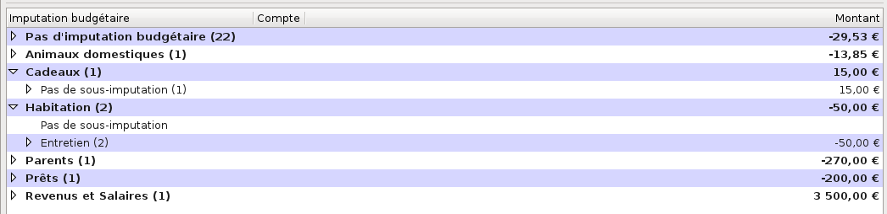
Figure 14.1: Liste des imputations et des sous-imputations budgétaires
Elle affiche en haut la barre des libellés des colonnes ; ses champs d’affichage sont les suivants :
Vous pouvez déplacer la liste des imputations budgétaires vers le haut ou vers le bas avec la molette de la souris, ou bien avec la souris et l’ascenseur vertical. Le déplacement éventuel vers la gauche ou la droite se fait avec la souris et l’ascenseur horizontal.
Pour afficher les sous-imputations d’une imputation budgétaire, cliquez sur le petit triangle à gauche de son nom, ou bien double-cliquez sur sa ligne ; cela affiche le libellé de toutes les sous-imputations, et éventuellement, en première position, Pas de sous-imputation.
Note : ces triangles peuvent être remplacés, en fonction du thème de l’environnement de bureau ou du gestionnaire de fenêtres que vous utilisez, par d’autres caractères tels que +, -, >, <, etc.
Vous pouvez afficher plusieurs imputations budgétaires déroulées. Pour ne plus les afficher, enroulez les imputations budgétaires en cliquant sur le petit triangle à gauche de leur nom, ou bien double-cliquez sur leur ligne. Vous pouvez aussi dérouler ou enrouler toutes les imputations budgétaires de la liste, en cliquant sur l’outil Affichage dans la barre d’outils et en choisissant Vue des imputations et des sous-imputations. Pour afficher seulement les imputations, cliquez sur l’outil Affichage dans la barre d’outils et choisissez Vue des imputations uniquement.
Les imputations et sous-imputations de votre fichier de comptes sont affichées par ordre alphabétique, avec deux exceptions : la première imputation affichée est toujours l’imputation de libellé Pas d’imputation, qui reçoit toutes les opérations dont l’imputation n’est pas définie, et, à l’intérieur d’une imputation, la première sous-imputation affichée est toujours la sous-imputation de libellé Pas de sous-imputation , qui reçoit toutes les opérations dont la sous-imputation n’est pas définie.
Le nombre d’opérations affectées à chaque imputation ou sous-imputation budgétaire s’affiche, entre parenthèses, à la suite de son nom, et le montant total des opérations affectées à ces imputations ou sous-imputations budgétaires s’affiche dans la colonne Montant, à droite sur la même ligne.
Note : vous pouvez configurer la devise des totaux de toutes les (sous-) imputations budgétaires dans le menu Édition - Préférences (voir la section 22.2.4, Devises des totaux).
Pour sélectionner une imputation ou une sous-imputation budgétaire, vous avez deux moyens :
Le nom de l’imputation ou sous-imputation budgétaire apparaît alors sur fond rose.
Un menu contextuel est disponible par un clic-droit sur la liste des imputations budgétaires ; selon la ligne sélectionnée, vous pouvez exécuter les fonctions suivantes :
Une ligne de libellé Pas de sous-imputation se comporte exactement comme une ligne de sous-imputation budgétaire.
Pour afficher les opérations, cliquez sur le petit triangle à gauche du libellé Pas de sous-imputation ou celui d’une sous-imputation, ou bien double-cliquez sur sa ligne, ce qui déroule la liste. Les opérations sont alors décrites sur une seule ligne, avec leur date, leur remarque éventuelle, le nom du compte concerné et leur montant.
Note : ces triangles peuvent être remplacés, en fonction du thème de l’environnement de bureau ou du gestionnaire de fenêtres que vous utilisez, par d’autres caractères tels que +, -, >, <, etc.
Vous pouvez afficher plusieurs lignes de sous-imputations budgétaires déroulées. Pour ne plus les afficher, enroulez les opérations d’une sous-imputation budgétaire en cliquant sur le petit triangle à gauche de son nom, ou bien double-cliquez sur leur ligne. Vous pouvez aussi dérouler ou enrouler toutes les opérations de toutes les imputations et sous-imputations budgétaires de la liste, en cliquant sur l’outil Affichage dans la barre d’outils, et en faisant votre choix entre Vue des imputations uniquement, Vue des imputations et sous-imputations ou Vue complète.
Vous pouvez déplacer une opération d’une sous-imputation vers une autre sous-imputation de la liste en sélectionnant cette opération et en faisant un glisser-déplacer sur la sous-imputation cible, exactement à l’endroit où son nom est entouré d’une bordure pointillée.
Un double-clic sur une ligne d’opération d’une imputation ou d’une sous-imputation budgétaire ferme l’onglet Imputations budgétaires, ouvre l’onglet Comptes et le sous-onglet du compte contenant cette opération, sélectionne l’opération concernée et l’affiche dans le formulaire de saisie. De cette façon, cette opération peut être affichée et modifiée facilement.
La création d’une imputation budgétaire au cours de la saisie d’une opération n’est possible que si le champ d’information a été créé préalablement dans le formulaire de saisie des opérations (voir la section 22.4, Formulaire des opérations).
La façon la plus immédiate pour créer une imputation ou une sous-imputation budgétaire est de saisir son nom au cours de la création d’une nouvelle opération dans l’onglet des comptes (voir la section 8.16, Nouveau tiers, catégorie ou imputation budgétaire) ; mais vous pouvez aussi en créer ici, en cliquant sur l’outil Nouvelle imputation ou Nouvelle sous-imputation. Une boîte de dialogue s’ouvre ; suivant le cas, renseignez le nom de l’imputation et cochez si elle contiendra des crédits ou des débits, ou renseignez uniquement le nom de la sous-imputation, puis validez.
L’outil Nouvelle sous-imputation de la barre d’outils ne devient actif que lorsqu’une imputation budgétaire est sélectionnée dans la liste.
Pour modifier une imputation ou une sous-imputation budgétaire, procédez comme suit :
Vous pouvez transférer des opérations dans une autre sous-imputation ayant pour point commun soit le tiers, soit la remarque, soit les deux ; pour cela, procédez comme suit :
Note : la saisie du champ libellé Sélectionner la destination bénéficie de la fonction d’auto-complètement.
Vous pouvez modifier l’organisation de vos sous-imputations budgétaires en déplaçant le contenu d’une sous-imputation vers une autre ou vers une nouvelle imputation. Pour cela, sélectionnez une sous-imputation, puis cliquez-droit et choisissez dans le menu contextuel :
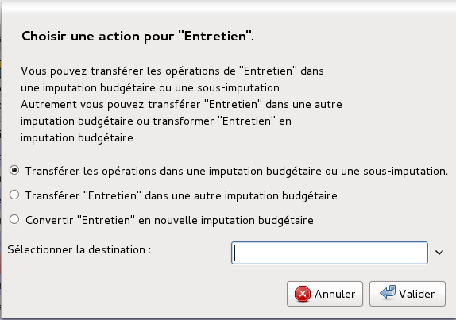
Figure 14.2: Gestion des sous-imputations budgétaires
Pour supprimer une imputation ou une sous-imputation budgétaire, procédez comme suit :
Attention : la suppression d’une imputation ou d’une sous-imputation budgétaire est irréversible !
Note : si la (sous-) imputation budgétaire que vous voulez supprimer ne contient aucune opération, aucune boîte de dialogue ne s’ouvrira et Grisbi la supprimera immédiatement.
Grisbi vous permet d’importer ou d’exporter les imputations budgétaires d’un fichier de comptes, ce qui peut éviter de recréer tout un ensemble d’imputations budgétaires si on peut le trouver ailleurs déjà fait.
Pour importer une liste de (sous-) imputations budgétaires, procédez comme suit :
Attention : d’une manière générale, il est déconseillé d’avoir des accents ou des espaces dans les noms des répertoires et fichiers utilisés par Grisbi. Si c’est le cas, renommez-les maintenant. Par exemple, les espaces peuvent être remplacées par des tirets bas (_).
Si vous avez validé, il vous appartient ensuite de supprimer une à une toutes les imputations budgétaires que vous ne voulez pas garder, ou d’en créer de nouvelles.
Si vous commencez un fichier de comptes neuf, vous aurez avantage à supprimer les imputations budgétaires existantes par défaut avant d’importer une autre liste.
Si vous voulez vous servir de votre liste de (sous-) catégories comme base pour établir votre liste d’imputations budgétaires, vous devez d’abord exporter votre liste de (sous-) catégories dans un fichier. Pour cela, reportez-vous à la section 13.10.2, Export de vos (sous-) catégories.
Puis, pour importer votre liste de (sous-) catégories, procédez comme suit :
Pour exporter la liste de vos (sous-) imputations budgétaires, procédez comme suit :
Attention : d’une manière générale, il est déconseillé d’avoir des accents ou des espaces dans les noms des répertoires et fichiers utilisés par Grisbi. Si c’est le cas, renommez-les maintenant. Par exemple, les espaces peuvent être remplacées par des tirets bas (_).
Un exercice est une période d’une durée d’un an pour laquelle sont établies des prévisions financières ou sont dégagés des résultats financiers pour un agent économique (un individu, un ménage, une entreprise, un État, etc.).
Cette période ne correspond pas toujours à l’année civile. Le découpage du temps en exercices financiers implique, en matière de calcul des résultats, un certain nombre de régularisations avant de procéder à la clôture des comptes. Il arrive en effet que certains produits et charges enregistrés au cours de l’exercice concernent effectivement les exercices suivants et, réciproquement, que des produits et des charges relatifs à l’exercice en cours n’aient pas encore été enregistrés.
Vous pouvez utiliser les exercices si vous voulez distinguer vos opérations dans vos états, non par rapport à la date sous laquelle vous les enregistrez, mais par rapport à la période comptable à laquelle elles appartiennent.
Prenons l’exemple d’un remboursement de Sécurité Sociale, qui intervient nécessairement avec un délai par rapport à la dépense. Si vous voulez faire un bilan objectif de vos dépenses de santé, il vous faudra le prendre en compte pendant la même année que la dépense, donc fausser la date de remboursement, même s’il intervient l’année suivante.
On peut aussi prendre l’exemple d’une facture téléphonique, souvent bimestrielle, couvrant la période du 11 décembre 2012 au 10 février 2013. Si vous enregistrez cette facture en 2013, la totalité de son montant sera affectée à cette année-là. Vous pouvez considérer que cela compense le déséquilibre induit par la facture de l’année précédente à la même époque, et que bon an mal an vos comptes sont à peu près bons.
La seule façon de procéder correctement est d’utiliser les exercices. La période courante d’un exercice est l’année civile, mais l’année scolaire peut être plus intéressante si vous êtes trésorier d’une association. Vous pouvez même faire des exercices mensuels, bien que comptablement ce soit une bizarrerie.
Pour le remboursement de Sécurité Sociale, vous l’enregistrerez alors avec le même exercice que celui de la dépense, et votre état ou votre budget prendra en compte cette recette comme il le faut.
Pour la facture téléphonique, vous ventilerez celle-ci prorata temporis (c’est-à-dire proportionnellement au temps). Pour simplifier, il est communément admis qu’une année se compose de 12 mois de 30 jours chacun. On a donc ici vingt jours sur l’exercice 2012, et quarante jours sur l’exercice 2013. Votre facture devra donc être ventilée en vingt soixantièmes sur l’exercice 2012, et quarante soixantièmes sur l’exercice 2013.
Avant de procéder à l’utilisation d’exercices, vous devez définir les aspects suivants :
Lors de la saisie d’une opération, vous pourrez alors, dans le champ Exercice du formulaire de saisie, entrer l’exercice au clavier, ou le choisir grâce à la liste déroulante commençant par Automatique. Une fois l’opération validée, elle apparaîtra dans la liste des opérations avec son exercice, dans la cellule que vous avez choisie.
Vous pourrez aussi modifier l’ordre d’affichage des opérations par un tri suivant les exercices ou les dates (voir le paragraphe 8.2.4, Tris).
La création, la modification et la suppression d’un exercice se fait grâce au menu Édition - Préférences (voir la section 22.5.4, Exercices).
L’onglet Simulateur de crédits permet de simuler les différents aspects d’un ou de plusieurs crédits. Il affiche les différents paramètres d’une liste de crédits, calculés à partir du montant emprunté, du taux, des frais attachés et de durées comprises dans une plage de durées. Il calcule et affiche aussi le tableau d’amortissement d’un crédit d’une durée déterminée, sélectionné dans cette liste.
Pour avoir accès à la simulation de crédits, sélectionnez Simulateur de crédits dans le panneau de navigation ou avec la barre d’information (voir le chapitre 4, Accueil).
La barre d’information affiche, à gauche, le nom de cet onglet.
Le pavé des détails affiche deux éléments :
La barre d’outils du simulateur de crédits présente les fonctions suivantes :
La barre d’outils peut être déplacée dans l’écran en cliquant sur sa poignée (petit rectangle vertical à gauche de la barre) et en la déplaçant. Pour la réattacher à son emplacement d’origine dans le pavé des détails, la remettre en haut de la fenêtre, le haut de la poignée sur le petit trait qui visualise sa place d’origine.
Pour afficher les détails du Simulateur de crédits, sélectionnez son onglet dans le panneau de navigation ou avec la barre d’information (voir le chapitre 4, Accueil), ou bien, s’il est déjà sélectionné, sélectionnez Crédits dans la barre d’outils.
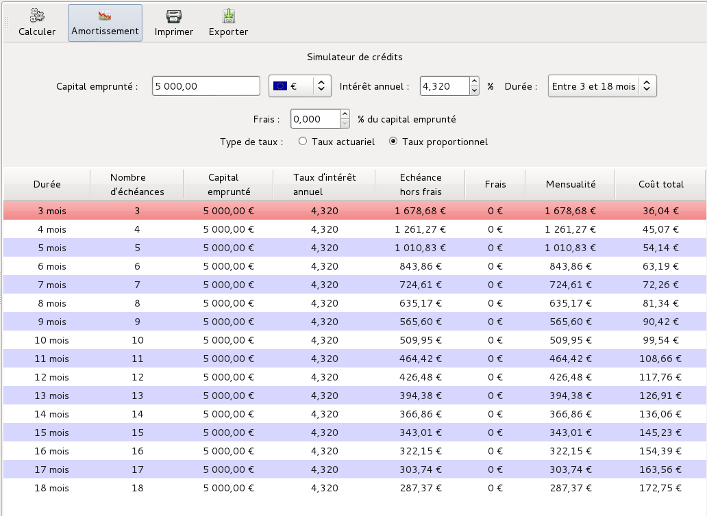
Figure 16.1: Simulateur de crédits
Le simulateur de crédits se compose de deux éléments :
La Définition du crédit s’affiche en haut du panneau des détails, sous la barre d’outils. Elle affiche et permet de définir les caractéristiques principales du crédit suivantes :
La liste des crédits simulés s’affiche en bas du panneau des détails, sous la Définition du crédit. Elle affiche les caractéristiques détaillées de tous les crédits dont la durée fait partie de la plage de durées choisie dans la définition du crédit.
La liste affiche en haut la barre de libellés des colonnes. Vous pouvez élargir ou rétrécir une colonne en cliquant sur le séparateur entre deux colonnes et en le déplaçant.
La liste des crédits simulés affiche autant de lignes qu’il y a de durées de crédits possibles dans la plage de durées choisie dans la définition du crédit. Ses champs d’affichage sont les suivants :
Vous pouvez déplacer la liste des crédits vers le haut ou vers le bas avec la molette de la souris, ou bien avec la souris et l’ascenseur vertical.
Chaque crédit est affiché sur une ligne. Pour une bonne lisibilité de l’affichage, Grisbi présente une alternance de couleurs de fond violet et blanc à chaque ligne.
Pour sélectionner un crédit, vous avez deux moyens :
La ligne apparaît alors sur fond rouge.
Un menu contextuel est disponible par un clic-droit sur une ligne, et propose les actions suivantes :
Pour afficher les détails des amortissements, sélectionnez Amortissement dans la barre d’outil.
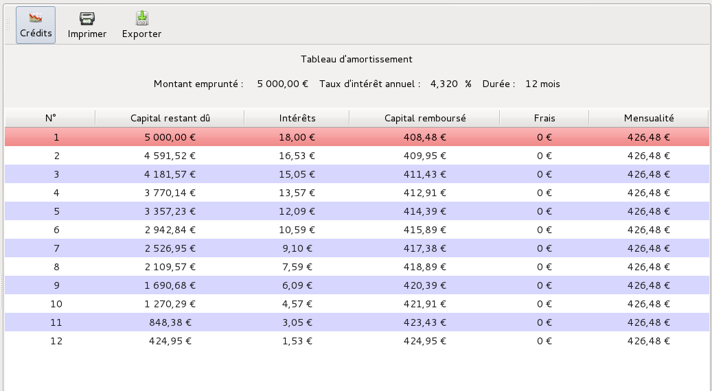
Figure 16.2: Tableau d’amortissement
Le tableau d’amortissement se compose de deux éléments :
La définition du crédit s’affiche en haut du panneau des détails, sous la barre d’outils. Elle affiche, mais ne permet pas de définir, les caractéristiques principales du crédit suivantes :
Le tableau d’amortissement détaillé s’affiche en bas du panneau des détails, sous la Définition du crédit. Il affiche les caractéristiques détaillées de chaque échéance d’un crédit dont les caractéristiques principales sont affichées dans la définition du crédit juste au-dessus, et qui a été sélectionné dans la liste des crédits.
Il affiche en haut la barre de libellés des colonnes. Vous pouvez élargir ou rétrécir une colonne en cliquant sur le séparateur entre deux colonnes et en le déplaçant.
Le tableau d’amortissement affiche autant de lignes qu’il y a d’échéances dans le crédit choisi. Ses champs d’affichage sont les suivants :
Vous pouvez déplacer la liste des échéances vers le haut ou vers le bas avec la molette de la souris, ou bien avec la souris et l’ascenseur vertical.
Chaque échéance est affichée sur une ligne. Pour une bonne lisibilité de l’affichage, Grisbi présente une alternance de couleurs de fond violet et blanc à chaque ligne.
Pour sélectionner une échéance, vous avez deux moyens :
La ligne apparaît alors sur fond rouge.
Un menu contextuel est disponible par un clic-droit sur une ligne, et propose les actions suivantes :
Pour avoir accès à la simulation d’un nouveau crédit, cliquez sur Crédits dans la barre d’outils (si cette fonction n’apparaît pas, c’est que le simulateur de crédits est déjà affiché).
Note : À l’ouverture du simulateur de crédits, Grisbi affiche dans le pavé des détails les paramètres de définition du crédit et la liste des crédits générés lors d’une simulation précédente.
Pour simuler un nouveau crédit, entrez ses paramètres dans la définition du crédit :
Note : le taux d’intérêt est dit taux actuariel lorsque les intérêts sont versés à la fin de la période annuelle ; le taux proportionnel est le taux nominal divisé par une unité de temps ; par exemple, le taux proportionnel mensuel est égal au taux nominal annuel divisé par 12.
La liste des crédits se met à jour automatiquement et affiche tous les crédits possibles en fonction de leur durée.
Pour afficher le tableau d’amortissement de l’un des crédits, vous avez deux moyens :
Note : Grisbi n’enregistre pas le résultat des différentes simulations de crédit que vous avez faites : il enregistre uniquement dans le fichier de comptes les paramètres de définition du crédit saisis pour la dernière simulation ; il peut alors la rejouer ultérieurement ; pour conserver indéfiniment ces paramètres, utilisez les fonctions Imprimer et Exporter, explicitées ci-dessous.
Grisbi vous permet d’exporter ces données, soit pour les enregistrer, soit pour les importer dans une autre application, par exemple un tableur pour y faire des calculs spécifiques.
Pour exporter une simulation de crédits ou un tableau d’amortissement, procédez comme suit :
Attention : d’une manière générale, il est déconseillé d’avoir des accents ou des espaces dans les noms des répertoires et fichiers utilisés par Grisbi. Si c’est le cas, renommez-les maintenant. Par exemple, les espaces peuvent être remplacées par des tirets bas (_).
Pour imprimer une simulation de crédits ou un tableau d’amortissement, procédez comme suit :
En fonction de votre gestionnaire d’impression, vous pourrez disposer de réglages divers tels que la taille et l’orientation de la feuille, la résolution, la police d’impression et sa taille, etc.
Un budget est un document récapitulatif des recettes et des dépenses prévisionnelles pour un agent économique (individu, ménage, entreprise, État, etc.) pour un exercice comptable à venir.
Grisbi vous permet de définir, pour chaque compte, un budget prévisionnel par exercice ou sur douze mois, basé sur les données historiques précédentes classées suivant leurs imputations budgétaires ou leurs imputations comptables (catégories et sous-catégories). Au moment de son établissement, un budget n’a de valeur que si les prévisions affichées sont conformes à la réalité qu’elles sont censées décrire : aucune dépense ne doit être «oubliée » ou minorée, aucun revenu ne doit être majoré…
Grisbi vous permet aussi de faire un suivi de vos emprunts à travers les comptes de passif, en créant des tableaux d’amortissement.
Pour avoir accès au budget prévisionnel ou au tableau d’amortissement pour un compte, sélectionnez ce compte dans le panneau de navigation ou avec la barre d’information (voir le chapitre 4, Accueil) : le panneau de navigation affiche le nom du compte sur fond bleu, et le pavé des détails affiche tous les onglets disponibles du compte.
Si le compte sélectionné n’a pas encore été configuré pour un budget prévisionnel ou un tableau d’amortissement, seuls les onglets Opérations et Propriétés sont affichés : dans ce cas, suivez la procédure Création d’un budget prévisionnel, pour un compte de banque ou de caisse (voir la section 17.4), ou bien Création d’un tableau d’amortissement, pour un compte de passif (voir la section 17.6).
Sinon, si le compte sélectionné a été auparavant configuré pour un budget prévisionnel ou un tableau d’amortissement, le pavé des détails affiche d’autres onglets, suivant le type du compte :
Note : pour les comptes de caisse, l’onglet Prévisions n’est affiché que si l’on a choisi d’afficher aussi leurs prévisions.
Note : il est vivement conseillé de consulter les sections suivantes décrivant ces différents onglets, avant de commencer l’établissement de budgets prévisionnels ou de tableaux d’amortissement.
L’onglet Données historiques contient l’ensemble des données qui vont servir de base à l’établissement de votre prévision. Ce sont toutes les opérations déjà enregistrées dans votre compte, relatives à une période de temps donnée, et groupées en catégories ou imputations budgétaires.
Pour afficher les détails des Données historiques, sélectionnez leur onglet. Il affiche trois éléments :

Figure 17.1: Onglet des données historiques
La barre d’outils présente les fonctions suivantes :
L’en-tête des données historiques s’affiche en haut du pavé des détails. Il affiche les paramètres nécessaires pour établir les prévisions, tels qu’ils auront été définis auparavant, en particulier dans le menu Édition - Préférences (voir la section 22.6.2, Données des comptes). Ces paramètres sont les suivants :
Note : le choix des exercices ne s’affiche que si au moins un exercice a été défini (voir la section 15.2, Mise en place des exercices).
Le tableau des données historiques s’affiche en bas du pavé des détails, sous l’en-tête des données historiques. Il affiche toutes les opérations déjà enregistrées dans le compte et appartenant à la période de référence, qui vont servir à établir la prévision.
Ce tableau affiche en haut la barre de libellés des colonnes. Vous pouvez élargir ou rétrécir une colonne en cliquant sur le séparateur entre deux colonnes et en le déplaçant. Vous pouvez déplacer le tableau vers le haut ou vers le bas avec la molette de la souris, ou bien avec la souris et l’ascenseur vertical.
Il affiche autant de lignes qu’il y a dans le compte de catégories et de sous-catégories, ou bien d’imputations budgétaires et de sous-imputations budgétaires. Ses champs d’affichage sont les suivants :
Note : ces triangles peuvent être remplacés, en fonction du thème de l’environnement de bureau ou du gestionnaire de fenêtres que vous utilisez, par d’autres caractères tels que +, -, >, <, etc.
Chaque (sous-) catégorie ou (sous-) imputation budgétaire est affichée sur une seule ligne. Pour une bonne lisibilité de l’affichage, Grisbi présente une alternance de couleurs de fond violet et blanc à chaque ligne.
Pour sélectionner une (sous-) catégorie ou une (sous-) imputation budgétaire, vous avez deux moyens :
La ligne apparaît alors sur fond rouge.
Un menu contextuel est disponible par un clic-droit sur une ligne, et propose les actions suivantes :
Note : si vous sélectionnez ce choix pour une ligne non mensuelle, son montant sera reporté chaque mois dans les prévisions, qui seront donc faussées.
Pour afficher les graphiques sur les données historiques d’un compte, vous disposez de trois outils dans la barre d’outils :
Pour afficher les graphiques en secteurs, cliquez sur l’outil Graphique dans la barre d’outils. Une fenêtre affiche, sous la forme de deux graphiques en secteurs, pour les revenus et les dépenses, l’ensemble des montants sélectionnés dans le tableau des données historiques, par catégories ou imputations budgétaires selon le cas, et sur la période de référence : soit un exercice, soit 12 mois glissants.
Note : le choix des exercices ne s’affiche que si au moins un exercice a été défini (voir la section 15.2, Mise en place des exercices).
Le placement du pointeur de souris au-dessus d’un secteur affiche dans une info-bulle son nom, son montant et son pourcentage par rapport au total du secteur, et un clic-droit dessus affiche un autre graphique en secteur relatif à ses sous-catégories ou sous-imputations budgétaires, s’il y a lieu.
Ces graphiques fournissent une représentation visuelle des rapports entre les différents postes de dépenses ou de revenus passés, et permettent d’affiner votre sélection de données, par exemple en ne sélectionnant que les plus importantes.
L’outil Ligne ou Colonne sert de choix par défaut, et la liste déroulante à sa droite permet de changer ce choix par défaut, donc de remplacer l’outil Ligne par l’outil Colonne et inversement.
Ces deux graphiques fournissent une représentation visuelle de l’évolution passée du montant Année en cours d’une ligne du tableau des données historiques, et permettent d’en anticiper les conséquences par des mesures appropriées.
pour afficher ce graphique, sélectionnez une des lignes de (sous-) catégorie ou de (sous-) imputation budgétaire dans le tableau des données historiques, puis cliquez dans la barre d’outils sur l’outil Ligne ou sur le libellé Ligne de la liste déroulante ; une fenêtre affiche, dans son onglet Graphique, le nom et le montant pour l’Année en cours de la ligne sélectionnée, et sa courbe d’évolution sur la période de référence. Vous pouvez afficher des lignes de niveau en cliquant sur le bouton Montrer la grille, et les enlever par le bouton Cacher la grille.
Vous pouvez définir, dans l’onglet Options, la présentation du graphique pour l’axe horizontal (graduation principale, position, ligne supplémentaire, orientation) et pour l’axe vertical (grille principale et secondaire).
pour afficher ce graphique, sélectionnez une des lignes de (sous-) catégorie ou de (sous-) imputation budgétaire dans le tableau des données historiques, puis cliquez dans la barre d’outils sur l’outil Colonne ou sur le libellé Colonne de la liste déroulante ; une fenêtre affiche, dans son onglet Graphique, le nom et le montant pour l’Année en cours de la ligne sélectionnée, et son évolution sur la période de référence, sous la forme de barres verticales. Vous pouvez afficher des lignes de niveau en cliquant sur le bouton Montrer la grille, et les enlever par le bouton Cacher la grille.
Vous pouvez définir, dans l’onglet Options, la présentation du graphique pour l’axe horizontal (graduation principale, position, ligne supplémentaire, orientation) et pour l’axe vertical (grille principale et secondaire), ainsi que pour les barres (espacement et superposition de la grille).
L’onglet Prévisions contient l’ensemble des résultats calculés à partir des choix de configuration et du tableau des données historiques.
Pour afficher les détails des Prévisions, sélectionnez son onglet. Il affiche trois éléments :

Figure 17.2: Onglet des prévisions
La barre d’outils présente les fonctions suivantes :
L’en-tête des prévisions s’affiche en haut du pavé des détails, sous la barre d’outils. Il affiche les paramètres tels qu’ils ont été définis auparavant, en particulier dans le menu Édition - Préférences (voir la section 22.6.2, Données des comptes). Ces paramètres sont les suivants :
Le tableau des prévisions s’affiche en bas du pavé des détails, sous l’en-tête des prévisions. Il affiche les opérations que Grisbi est capable de déduire à partir des données historiques de la période de référence. Il peut se composer de quatre types de ligne d’opération :
Ce tableau affiche en haut la barre de libellés des colonnes. Vous pouvez élargir ou rétrécir une colonne en cliquant sur le séparateur entre deux colonnes et en le déplaçant. Vous pouvez déplacer le tableau vers le haut ou vers le bas avec la molette de la souris, ou bien avec la souris et l’ascenseur vertical.
Il affiche autant de lignes qu’il y a d’opérations budgétées pour la période définie. Ses champs d’affichage sont les suivants :
Note : la description Par défaut est le contenu du premier de ces champs pour chaque opération, s’il existe et dans cet ordre : Remarques, Tiers, Catégories et Imputations budgétaires.
Les opérations sont affichées dans l’ordre chronologique et mois après mois, comme suit :
Pour sélectionner une opération, vous avez deux moyens :
La ligne apparaît alors sur fond rouge.
Un menu contextuel est disponible par un clic-droit sur une ligne, et propose les actions suivantes, selon le contexte :

Un double-clic sur une ligne d’opération du tableau ferme l’onglet Prévisions, ouvre l’onglet Opérations, sélectionne l’opération concernée et l’affiche dans le formulaire de saisie. De cette façon, cette opération peut être affichée et modifiée facilement.
Pour afficher les graphiques sur les prévisions d’un compte, vous disposez de deux outils dans la barre d’outils :
Ces graphiques fournissent une représentation visuelle de l’évolution future du solde du compte, et permettent d’en anticiper les conséquences par des mesures appropriées.
Pour afficher ce graphique, cliquez dans la barre d’outils sur l’outil Ligne ou sur le libellé Ligne de la liste déroulante ; une fenêtre affiche dans son onglet Graphique la courbe d’évolution de la prévision du Solde du compte, en fonction de la date sur la Durée d’estimation. Vous pouvez afficher des lignes de niveau en cliquant sur le bouton Montrer la grille, et les enlever par le bouton Cacher la grille.
Vous pouvez définir, dans l’onglet Options, la présentation du graphique pour l’axe horizontal (graduation principale, position, ligne supplémentaire, orientation) et pour l’axe vertical (grille principale et secondaire).
Pour afficher ce graphique, cliquez dans la barre d’outils sur l’outil Colonne ou sur le libellé Colonne de la liste déroulante ; une fenêtre affiche dans son onglet Graphique l’évolution de la prévision du Solde du compte, sous forme de barres verticales, en fonction de la date sur la Durée d’estimation. Vous pouvez afficher les lignes de niveau en cliquant sur le bouton Montrer la grille, et les enlever par le bouton Cacher la grille.
Vous pouvez définir, dans l’onglet Options, la présentation du graphique pour l’axe horizontal (graduation principale, position, ligne supplémentaire, orientation) et pour l’axe vertical (grille principale et secondaire), ainsi que pour les barres (espacement et superposition de la grille).
Vous pouvez créer des tableaux d’amortissement afin de faire le suivi de vos emprunts. Les emprunts sont gérés dans Grisbi à l’intérieur de comptes de passif (voir la section 7.7.3, Type compte de passif), à raison d’un seul emprunt par compte de passif, qu’il faudra que vous ayez créé auparavant.
Pour afficher les détails du Tableau d’amortissement, sélectionnez son onglet. Il affiche trois éléments :

Figure 17.3: Tableau d’amortissement
La barre d’outils présente les fonctions suivantes :
Les données du crédit s’affichent en haut du pavé des détails, sous la barre d’outils. Elles affichent les paramètres tels qu’ils ont été définis auparavant, en particulier dans le menu Édition - Préférences (voir la section 22.6.2, Données des comptes). Ces paramètres sont les suivants :
Le tableau d’amortissement détaillé s’affiche en bas du pavé des détails, sous les données du crédit. Il affiche les caractéristiques détaillées de chaque échéance du crédit dont les paramètres sont affichés dans les données du crédit.
Il affiche en haut la barre de libellés des colonnes. Vous pouvez élargir ou rétrécir une colonne en cliquant sur le séparateur entre deux colonnes et en le déplaçant.
Le tableau d’amortissement affiche autant de lignes qu’il y a d’échéances dans le crédit. Ses champs d’affichage sont les suivants :
Vous pouvez déplacer la liste des échéances vers le haut ou vers le bas avec la molette de la souris, ou bien avec la souris et l’ascenseur vertical.
Chaque échéance est affichée sur une ligne. Pour une bonne lisibilité de l’affichage, Grisbi présente une alternance de couleurs de fond violet et blanc à chaque ligne.
Pour sélectionner une échéance, vous avez deux moyens :
La ligne apparaît alors sur fond rouge.
Un menu contextuel est disponible par un clic-droit sur une ligne, et propose les actions suivantes :
La création d’un budget prévisionnel pour un compte comprend quatre étapes :
Le principe est, après avoir réalisé toutes les configurations, de sélectionner une par une, dans le Tableau des données historiques, les lignes qui correspondent à des opérations qui vont normalement se reproduire dans le futur (par ex. Alimentation, Impôts, Assurances, Énergies, Salaire, etc.) ; ces choix se répercutent automatiquement dans le tableau des prévisions ; ensuite, dans l’onglet Prévisions, d’ajuster le résultat en ajoutant de nouvelles opérations ou en supprimant celles inutiles. On peut cependant modifier à tout moment les choix opérés dans ce Tableau des données historiques.
Les quatre étapes de création d’un budget prévisionnel sont décrites dans les sous-sections ci-dessous.
Les paramètres généraux pour l’ensemble de vos budgets se trouvent dans le menu Édition - Préférences (voir la section 22.6.1, Généralités). Définissez là ces paramètres, si cela n’a pas déjà été fait auparavant, puis revenez à la sous-section ci-dessous.
Vous pouvez valider le budget prévisionnel pour un compte et configurer tous les paramètres dans le menu Édition - Préférences (voir la section 22.6.2, Données des comptes).
Pour afficher les détails des Données historiques, sélectionnez leur onglet dans le compte concerné.
Dans l’En-tête des données historiques, modifiez, si nécessaire, la source des données pour le compte ainsi que la période de référence pour ces données.
Note : le choix des exercices ne s’affiche que si au moins un exercice a été défini (voir la section 15.2, Mise en place des exercices).
Dans le Tableau des données historiques, sélectionnez la première ligne : elle s’affiche sur fond rouge ; puis procédez comme suit :
Note : ces triangles peuvent être remplacés, en fonction du thème de l’environnement de bureau ou du gestionnaire de fenêtres que vous utilisez, par d’autres caractères tels que +, -, >, <, etc.
Note : vous pouvez aussi forcer directement un montant dans ce champ : saisissez-le et validez-le par la touche <Entrée>.
Exécutez cette procédure pour toutes les lignes suivantes de catégories (ou d’imputations budgétaires). Quand vous avez terminé toutes les lignes, vos données historiques sont supposées correctes et votre prévision sera calculée, au moins, par extrapolation de ces données.
Sélectionnez maintenant l’onglet Prévisions en cliquant dessus.
Pour afficher les détails des Prévisions, sélectionnez leur onglet dans le compte concerné.
Note : pour les comptes de caisse, l’onglet Prévisions n’est affiché que si l’on a choisi de valider l’affichage de leurs prévisions (voir la section 22.6.1, Généralités).
Dans l’En-tête des prévisions, modifiez, si nécessaire, la Durée d’estimation, la Date de départ et la case à cocher Automatique (info-bulle : «Cochez la case pour changer automatiquement de date de début»).
Note : la date de début de prévision devrait être postérieure à aujourd’hui ; si vous saisissez une date de début de prévision antérieure, les prévisions inclueront toutes les opérations déjà enregistrées entre cette date et aujourd’hui.
Que la date de début de prévision soit antérieure ou postérieure à aujourd’hui, si vous cochez la case Automatique, Grisbi mettra automatiquement, à chaque ouverture du fichier de comptes, le début de la période de prévisions au premier jour du mois en cours. Par exemple, si la date de départ est le 1er janvier 2013 et la durée d’estimation 3 mois, vos prévisions commenceront ce jour-là et se termineront le 31 mars 2013 ; le jour du 1er février, les prévisions vont alors automatiquement commencer le 1er février et se terminer le 30 avril. Par contre, si la case n’avait pas été cochée, les prévisions auraient toujours commencé le 1er janvier et se seraient toujours terminées le 31 mars.
Vous pouvez alors procéder au réglage fin de vos prévisions : dans le Tableau des prévisions, un clic-droit sur une ligne, déjà sélectionnée ou non, l’affiche sur fond rouge avec un menu contextuel où vous pouvez sélectionner les actions suivantes :
la ligne sélectionnée reste affichée, mais le solde n’en tient plus compte.
la ligne sélectionnée reste affichée, mais le solde en tient compte à nouveau.
le formulaire de saisie s’affiche. Saisissez-y les champs d’une nouvelle opération, récurrente ou non, puis validez : l’opération s’affiche sur fond vert. On peut insérer une pseudo-opération planifiée, mais aussi un pseudo-virement, en choisissant comme catégorie un virement vers un autre compte. La contre-opération de ce virement est automatiquement affichée dans l’onglet Prévisions (s’il existe) du compte concerné, avec un montant inversé.

Figure 17.4: Formulaire d’insertion d’une ligne
le formulaire de saisie s’affiche avec les paramètres de la ligne sélectionnée ; modifiez-y les champs de l’opération, puis validez : l’opération s’affiche sur fond vert. Certains champs peuvent ne pas être modifiables, donc si besoin est, il faut supprimer cette ligne et en insérer une nouvelle. Cette fonction ne peut apparaître que si vous aviez auparavant créé cette ligne par la fonction Insérer une ligne.
l’opération est supprimée, sans autre avertissement.
Note : il n’est pas possible de supprimer ici une ligne de prévision issue d’une opération planifiée ; cela doit être fait dans l’onglet Échéancier (voir la section 10.12, Suppression d’une opération planifiée).
toutes les lignes d’une opération récurrente sont supprimées. Cette fonction ne peut apparaître que si vous aviez auparavant créé cette ligne par la fonction Insérer une ligne.
Note : il n’est pas possible de supprimer ici toutes les lignes de prévision issues d’une opération planifiée ; cela doit être fait dans l’onglet Échéancier (voir la section 10.12, Suppression d’une opération planifiée).
cette fonction ouvre la fenêtre Configuration d’un compte à débit différé, qui sert à configurer les prévisions pour des cartes bancaires à débit différé ; cette configuration et l’utilisation de cette fonction sont décrites en détail dans la section 18.2, Carte bancaire à débit différé.
affiche la liste des opérations planifiées de l’onglet Échéancier, puis copie et affiche cette ligne d’opération dans la liste en mode édition (sur fond rouge), et affiche le formulaire de saisie ; complétez-le et saisissez les paramètres manquants, en particulier ceux de périodicité (voir la section 10.3, Formulaire de saisie des opérations planifiées). Cette fonction ne peut apparaître que si vous aviez auparavant créé cette ligne par la fonction Insérer une ligne.
recalcule le tableau de prévisions.
ouvre la fenêtre de sélection de l’imprimante et de ses options (voir la section 17.9, Impression d’un tableau de données historiques, de prévisions ou d’amortissement).
permet d’exporter le tableau de prévisions dans un fichier (voir la section 17.8, Export d’un tableau de données historiques, de prévisions ou d’amortissement).
Note : chaque action terminée sur une opération déclenche le recalcul du tableau.
Pour modifier un budget prévisionnel, reprenez les étapes décrites dans la section 17.4, Création d’un budget prévisionnel.
Pour créer un tableau d’amortissement dans un compte de passif, procédez comme suit :
Dans le compte de passif concerné, un nouvel onglet Tableau d’amortissement s’affiche entre les deux autres onglets Opérations et Propriétés, et le tableau d’amortissement est créé. Vous pouvez y afficher le tableau d’amortissement à partir de la date de début ou de la prochaine échéance par la fonction Depuis le début ou À aujourd’hui de la barre d’outils.
Pour supprimer un tableau de données historiques, de prévisions ou d’amortissement sur un compte, il faut enlever les onglets Données historiques et Prévisions, ou l’onglet Tableau d’amortissement ; procédez comme suit :
Dans le compte concerné, les onglets Données historiques et Prévisions, ou l’onglet Tableau d’amortissement, ne s’affichent plus.
Attention : cette suppression ne supprime pas tout de suite les onglets, et vous pouvez les retrouver en revalidant le module budgétaire. Par contre, il sont totalement supprimés si vous enregistrez le fichier de comptes, ou si vous quittez Grisbi en enregistrant avant de quitter.
Grisbi vous permet d’exporter ces tableaux, soit pour les enregistrer, soit pour les importer dans une autre application, par exemple un tableur pour y faire des calculs spécifiques.
Pour exporter un tableau de données historiques, de prévisions ou d’amortissement, procédez comme suit :
Attention : d’une manière générale, il est déconseillé d’avoir des accents ou des espaces dans les noms des répertoires et fichiers utilisés par Grisbi. Si c’est le cas, renommez-les maintenant. Par exemple, les espaces peuvent être remplacées par des tirets bas (_).
Pour imprimer un tableau de données historiques, de prévisions ou d’amortissement, procédez comme suit :
En fonction de votre gestionnaire d’impression, vous pourrez disposer de réglages divers tels que la taille et l’orientation de la feuille, la résolution, la police d’impression et sa taille, etc.
Note : un tableau de données historiques, de prévisions ou d’amortissement peut être très long ; affichez un aperçu avant impression pour vérifier ce que vous allez imprimer.
Les cartes bancaires sont des instruments bancaires très utilisés. Il en existe plusieurs types :
Une carte bancaire à débit immédiat vous permet de régler vos achats et de faire des retraits dans les distributeurs de billets. Elle fonctionne en liaison avec votre compte courant.
Toutes les opérations faites avec cette carte sont comptabilisées et débitées sur votre compte courant, immédiatement. Chaque opération se comporte exactement comme si c’était un chèque. Le relevé bancaire périodique liste donc ces opérations avec toutes les autres.
Pour gérer vos opérations sur une carte bancaire, saisissez-les dans votre compte courant, comme n’importe quelle opération, et faites les rapprochements bancaires régulièrement (voir le chapitre 9, Rapprochement bancaire).
Vous pouvez posséder plusieurs cartes bancaires à débit immédiat attachées au même compte courant.
Les opérations sur ces cartes étant portées sur le compte courant avec toutes les autres opérations, la carte bancaire est alors un moyen de paiement comme les autres (chèques, virements, etc.). Vous ne pourrez donc pas faire une budgétisation spécifique à ces dépenses de carte. Les prévisions budgétaires se feront alors normalement, par la sélection des (sous-) catégories ou des (sous-) imputations budgétaires dans l’onglet Données historiques de ce compte (voir le chapitre 17, Budgets prévisionnels).
Une carte bancaire à débit différé vous permet de régler vos achats et de faire des retraits dans les distributeurs de billets ; de plus, elle est liée à un compte spécifique ouvert chez votre banque, et se caractérise par les éléments suivants :
Note : selon le contrat de la carte, les retraits en distributeur automatique ne bénéficient pas obligatoirement du débit différé, et il faudra alors les gérer dans le compte courant comme pour une carte à débit immédiat.
Si vous possédez une ou plusieurs cartes bancaires à débit différé, vous pouvez tout à fait gérer leurs opérations dans votre compte courant, en saisissant pour date d’opération :
Dans ces trois cas, les rapprochements de ce compte courant devront être faits avec à la fois son relevé de compte et tous ceux de vos comptes de carte, ce qui les rendra assez compliqués.
Puisque ces cartes sont gérées par votre banque à travers un compte spécifique, la manière la plus logique sera de gérer ces cartes dans Grisbi à travers un ou plusieurs comptes dédiés, qui seront du type compte de passif, car leur solde ne peut pas être positif.
Si vous avez une seule carte bancaire à débit différé, créez d’abord un compte dédié à cette carte, avec un solde initial nul. Ensuite, sa gestion se déroule comme suit :
Si vous avez plusieurs cartes bancaires à débit différé, vous avez deux possibilités :
Note : dans cette section, nous appelons «compte carte » le compte dans lequel vous saisissez les dépenses de la carte bancaire à débit différé, et «compte principal » votre compte courant bancaire, celui qui gère vos opérations ordinaires, à partir duquel sera débité le solde du compte carte.
Pour assurer cette gestion automatique, Grisbi dispose de quatre fonctionnalités :
Note : ces deux premières fonctionnalités sont liées : on ne peut pas les dissocier.
Note : Grisbi opère comme le fait votre banque : il met à zéro le solde du compte carte à la date de début de période suivante de la carte (2e fonctionnalité), et il débite le compte principal du montant de ce solde du compte carte à la date de prèlèvement de la carte (3e fonctionnalité) ; ces deux opérations sont donc dissociées.
et tout ceci tout au long de la période de prévisions.
Les sous-sections suivantes décrivent les différentes actions qu’il vous faudra exécuter, dans l’ordre :
Pour assurer la gestion automatique d’une carte bancaire, vous devez définir un compte carte, ainsi qu’au moins un nouveau tiers et deux nouvelles catégories (ou imputations budgétaires) pour identifier les opérations automatiques ; le compte carte sera réservé à la saisie des dépenses avec la carte bancaire, et sera du type compte de passif, car son solde ne peut pas être positif. Les noms employés ici ne sont que des exemples et vous pouvez définir ceux que vous préférez.
Procédez comme suit :
Note : il est obligatoire que ces catégories (ou imputations budgétaires) soient utilisés uniquement pour ces opérations, sinon cela ne fonctionnera pas.
Note : ces tiers peuvent aussi être utilisés pour d’autres opérations ; vous pouvez aussi ne créer qu’un seul tiers pour ces deux fonctions, avec un nom adéquat, mais en avoir deux différents et réservés à ces fonctions permet une meilleure lisibilité des opérations.
Si vous avez plusieurs cartes bancaires à débit différé, vous avez deux possibilités :
Pour configurer ces comptes, procédez comme suit :
Vous pouvez maintenant configurer l’une après l’autre les quatre fonctionnalités décrites dans la section 18.2.2, Gestion automatique et prévisions pour une carte bancaire à débit différé.
Ces quatre fonctionnalités sont configurables dans une fenêtre unique, accessible dans l’onglet Prévisions du compte principal ; les deux premières sont fonctionnellement liées, et on ne peut pas les dissocier ; les deux dernières sont indépendantes, et vous pouvez les configurer séparément, selon votre besoin. Cependant, il est conseillé de les configurer toutes, car ce serait dommage de se priver d’une gestion de carte entièrement automatisée !
Dans le tableau des prévisions du compte principal, cliquez-droit sur une ligne proche de la date de prélèvement de la carte bancaire, et sélectionnez Insérer le solde d’un compte à débit différé : la fenêtre Configuration d’un compte à débit différé s’affiche :

Figure 18.1: Configuration d’un compte à débit différé
Vous pouvez à tout moment fermer cette fenêtre en cliquant sur le bouton Valider ; vous pouvez afficher la fenêtre de configuration par un double-clic sur la ligne libellée Solde du compte : Compte carte bancaire DD et affichée sur fond vert, puis la modifier si besoin est ; vous pouvez aussi la supprimer en sélectionnant Supprimer la ligne dans le menu contextuel accessible par un clic-droit sur cette ligne.
dans la zone Liste des comptes, sélectionnez le compte carte («Compte CB DD ») ; vous pouvez aussi choisir un groupe de comptes cartes défini auparavant, qui se comportera de la même manière qu’un compte carte ;
Note : cette zone n’affiche que les comptes pour lesquels la case de libellé Compte avec carte à débit différé a été cochée, voir la section 22.6.2, Données des comptes, ou bien des groupes de ces comptes.
Note : vous pourrez toujours reprendre ici la configuration de la troisième fonctionnalité, ultérieurement.
Note : vous pouvez tout à fait choisir de ne pas activer cette fonctionnalité si elle ne vous convient pas, et dans ce cas, vous devrez saisir cette opération de débit manuellement chaque mois…
Note : vous pourrez toujours reprendre ici la configuration de la quatrième fonctionnalité, ultérieurement.
Note : vous pouvez tout à fait choisir de ne pas activer cette fonctionnalité si elle ne vous convient pas, et dans ce cas, vous ne disposerez pas de la prévision des dépenses de carte pour tous les mois suivants après celui du débit automatique…
Cette opération planifiée s’affichera dans les Prévisions du compte principal à la date de prélèvement de la carte ; dans l’onglet Échéancier, créez une opération planifiée avec les paramètres suivants :
Note : vous pouvez aussi vous servir des onglets Données historiques et Prévisions du compte carte pour faire cette estimation de vos dépenses futures.
Note : si vous avez plusieurs cartes bancaires à débit différé, vous devrez configurer une opération planifiée pour chacun des comptes cartes.
Si vous avez coché l’option Remplacement de l’opération planifiée dans les prévisions dans la fenêtre Configuration d’un compte à débit différé, seule la ligne Solde du compte : Compte CB DD apparaît dans le tableau des prévisions du compte principal, à la prochaine date de prélèvement de la carte, et pour les mois suivants, seule celle de l’opération planifiée apparaît. Si vous n’avez pas coché l’option Remplacement de l’opération planifiée dans les prévisions dans la fenêtre Configuration d’un compte à débit différé, deux lignes apparaissent dans le tableau des prévisions du compte principal : la ligne Solde du compte : Compte CB DD, à la prochaine date de prélèvement de la carte, et celle de l’opération planifiée à sa propre date ; et pour les mois suivants, seule celle de l’opération planifiée apparaît. C’est une fonctionnalité que vous pouvez préférer, mais cela fausse la prévision pour le premier mois, en la majorant d’environ deux fois.
Toutes les configurations sont maintenant terminées.
L’utilisation de ces quatre fonctionnalités est donc la suivante :
et tout ceci pour tous vos comptes de carte.
Finalement, quand vous avez configuré les quatre fonctionnalités dans le tableau des prévisions du compte principal, la ligne Solde au … indique le solde au dernier jour du mois qui contient le dernier prélèvement du solde du compte carte, et qui est, suivant le cas :
Note : si vous avez dépassé la date de début de la période suivante de la carte alors que vous n’avez pas encore saisi toutes les opérations de la période précédente dans le compte carte, et si vous ouvrez l’onglet Prévisions du compte principal, une fenêtre d’avertissement s’affiche et vous propose soit d’annuler, soit de continuer cette action ; si vous annulez, ouvrez alors l’onglet Opérations du compte carte et saisissez-y les dernières opérations manquantes ; vous pourrez ensuite ouvrir le compte principal et son onglet Prévisions en validant la fenêtre d’avertissement, et vous constaterez que la ligne Solde du compte : Compte CB DD tient compte de toutes les opérations du compte carte ; si vous continuez, les opérations automatiques seront effectuées, et le solde du compte carte sera figé sans ces opérations non saisies : s’il vous arrive de faire cette erreur malgré l’avertissement, vous devrez corriger les montants manuellement, voire refaire la configuration de cette gestion automatique.
Une carte de crédit est une carte de paiement que vous pouvez alimenter avec le montant d’une réserve de crédit renouvelable. Comme il faut gérer le crédit, le remboursement du crédit et les dépenses, le solde peut aussi bien être positif que négatif : vous devrez la gérer dans un compte de type compte bancaire.
Les contrats sur ces cartes peuvent être très variés selon les organismes bancaires, et offrent de multiples possibilités, qui ne peuvent être détaillées ici pour chaque type de contrat ; pour leur configuration et leur gestion, vous pouvez vous inspirer des informations et des procédures données dans les sections suivantes :
Un porte-monnaie électronique est une carte de paiement qui est alimentée par une somme d’argent prélevée sur un compte bancaire. Ce montant est utilisé pour régler de petites dépenses. Comme son solde ne peut pas être négatif, vous devrez gérer ce porte-monnaie dans un compte de type compte de caisse, comme s’il n’y avait que des espèces.
Si vous gérez les comptes d’une association, vous avez déjà constaté que les opérations enregistrées sur votre compte bancaire ne reflètent pas complètement la totalité de vos mouvements financiers. En effet, en plus des dépenses de fonctionnement réglées directement sur ce compte, la majorité de vos opérations consiste souvent en remises de chèques ou d’espèces, et en remboursements de frais engagés par les adhérents.
Pour avoir une comptabilité claire et précise, il importe d’une part de pouvoir enregistrer les opérations avec le bon tiers, d’autre part de pouvoir vérifier que les remboursements sont bien faits. Pour cela, en plus des Comptes bancaires, vous pouvez gérer des Comptes d’attente, pour des achats à rembourser à vos adhérents ou pour des remises de chèques ou d’espèces, des Comptes d’avances, pour les avances que vous recevez et celles que vous consentez, et des Comptes de caisse pour les opérations en espèces. Tous ces types de comptes sont présentés en détail dans la section 7.7, Types de comptes de Grisbi.
Grisbi vous permet aussi de créer des «tiers virtuels », qui simplifient énormément la saisie de nombreuses opérations similaires telles que les versements de cotisation (voir l’option Considérer les tiers de ce rapport comme un tiers virtuel dans la section 21.4.1, Généralités).
Selon la taille de l’association, son statut fiscal ou divers aspects, sa comptabilité peut être soumise à certaines obligations légales. Vous aurez avantage à consulter des guides de comptabilité d’association, qui donnent des exemples complets de gestion d’association, par exemple le Guide pratique & complet des associations, Pierre Ratelade, Top éditions Paris, 1999, 220 pages, ISBN : 2-8773-1168-6, ainsi que des sites Internet relatifs au cadre des associations et du Plan Comptable : par exemple :
Vous pouvez donc gérer votre association de deux manières différentes :
Cette section vous propose d’aborder une comptabilité simple à travers deux exemples. Les dépenses de fonctionnement étant des opérations très simples, ces exemples s’attachent surtout à expliciter les remises de chèques et les remboursements de dépenses faites par vos adhérents. Cela pourra sans doute vous paraître compliqué, mais ils montrent la bonne façon d’avoir une comptabilité d’association rigoureuse.
Nous considérons pour ces exemples que les exercices et imputations budgétaires ne sont pas renseignés.
Imaginons que vous soyez le trésorier de l’A.P.P.P.P., l’Amicale des Pauvres Poivrots Privés de Pinard…
Votre adhérent Hector Boyau achète un tire-bouchon atomique pour le compte de l’association. Cette dépense est réellement à imputer dans la comptabilité de l’association. Il importe donc de l’enregistrer avec le tiers et la catégorie réels. Saisissez les opérations suivantes :
Le tiers Hector Boyau n’a fait que servir d’intermédiaire et aucune opération ne doit lui être affectée dans cette transaction. Le compte d’avances revient à zéro, donc l’association n’a plus de dette. Le compte bancaire a bien enregistré la dépense des 20 euros.
Faites ensuite un rapprochement dans le compte d’avances, dont le solde sera égal au solde précédent du compte (le total des sorties étant égal à celui des entrées, le solde reste identique).
Vous achetez pour vos adhérents du pinard en bouteilles et en cubitainers, que vous leur revendez à prix coûtant. Ces achats ne concernent pas l’association mais constituent plutôt un service rendu aux membres. Vous allez les enregistrer avec le tiers réel mais surtout pas avec la catégorie.
Vous pouvez bien entendu utiliser le compte d’avances ordinaire pour enregistrer ces achats et ventes. Mais les opérations vont se mélanger avec les autres avances et vous aurez de la peine à distinguer où en sont vos stocks. Surtout si vous êtes un membre très actif de l’association ! Créez donc deux comptes d’avances spécialisés, un compte Pinard en bouteilles et un autre Pinard en cubi.
Soixante bouteilles ont été achetées 180 euros par votre adhérent Hector Boyau à la Coopérative du Père Jutard ; saisissez les opérations comme suit :
L’achat est passé avec le tiers réel mais avec la catégorie Virement. Le compte d’avances est débiteur, donc l’association doit de l’argent à quelqu’un. Le compte Pinard en bouteilles est créditeur de 60 bouteilles, soit 180 euros.
Le tiers Hector Boyau n’a fait que servir d’intermédiaire et aucune opération ne doit lui être affectée dans cette transaction. Le compte d’avances revient à zéro, donc l’association n’a plus de dette. Le compte bancaire a bien enregistré la dépense des 180 euros.
L’achat est passé avec le tiers réel mais avec la catégorie Virement. Le compte Chèques à encaisser est créditeur, et le chèque fera partie de la prochaine remise de chèques. Le compte Pinard en bouteilles est débité de 15 euros, il ne reste plus que 165 euros soit 55 bouteilles.
Lorsque toutes les bouteilles seront vendues, vous n’aurez plus qu’à rapprocher les opérations de cette vente pour les faire disparaître du solde.
Vous n’aurez plus qu’à rapprocher les opérations de cette remise pour les faire disparaître du solde.
Si Yves Remord vous avait payé en espèces la démarche aurait été la même mais avec le compte d’espèces et une remise en espèces.
Si Hector Boyau avait acheté 60 bouteilles et 10 cubis pour 280 euros, l’opération d’achat aurait été passée en opération ventilée comme suit :
Le reste des opérations est identique au premier cas de figure (voir la section 19.2.1, Premier cas de figure).
Maintenant, nous vous proposons un petit exercice, pour vous permettre de voir si vous avez compris le principe : Hector Boyau a pris 10 bouteilles pour lui et demande donc qu’on ne lui rembourse que 150 euros. Comment enregistrez-vous cela ? Vous trouverez la réponse en fin de chapitre (voir le paragraphe 19.4, Exercice 1).
Cette section vous donne les premiers éléments pour démarrer la comptabilité d’une association ou d’une petite entreprise conformément aux règles légales. Si cette organisation y est soumise, le trésorier devra obligatoirement utiliser les dispositions légales.
Pour illustrer ce chapitre, un embryon de comptabilité d’association a été créé : le fichier Association_1.0.gsb est disponible soit sur le site de Grisbi dans la rubrique Téléchargement, soit sur le site de Sourceforge.
Note : Grisbi est un logiciel de comptabilité personnelle ; il fait, avant tout, de la comptabilité de trésorerie, mais en réalité, il peut quasiment tout faire et est très capable de faire de la comptabilité d’association ou de petite entreprise ; cependant, selon votre besoin, vous pourriez avoir intérêt à utiliser un logiciel plus spécialisé tel que Gnucash.
Note : ce manuel est le manuel d’utilisation du logiciel Grisbi, et n’est en aucun cas un manuel de comptabilité d’association ou d’entreprise ; veuillez vous reporter aux documents adéquats en cas de besoin.
Pour créer votre comptabilité, vous devez créer un nouveau fichier de comptes, spécifique à votre association ou à votre entreprise. Au cours de cette procédure, vous devrez sélectionner obligatoirement une des listes de catégories prédéfinies nommée Plan comptable… (voir la section 3.3, Création d’un nouveau fichier de comptes).
Le plan comptable est l’ensemble des règles d’évaluation et de tenue des comptes d’une entité ; un plan de comptes est une liste ordonnée des comptes.
Vous pouvez consulter le résumé du Plan de comptes. Le premier chiffre représente la classe (de 1 à 8). Les comptes des classes 1 à 5 enregistrent les opérations qui concernent le patrimoine (Comptes de bilan), les comptes des classes 6 et 7 enregistrent les opérations qui concernent l’activité (Comptes de résultat) et la classe 8 regroupe des comptes spéciaux.
Vous pouvez aussi consulter une liste des comptes plus détaillée ici Liste des Comptes. La numérotation est limitée à 5 chiffres, dont le premier correspond à une classe comptable, mais si vous gérez une petite association ou une petite entreprise, une numérotation à 3 chiffres pourra être suffisante.
Les comptes des classes 1 à 5 seront à créer en tant que comptes dans Grisbi au fur et à mesure en fonction des besoins (voir la section 19.3.3, Mouvements entre comptes) ; les comptes des classes 6 et 7 sont à utiliser tels quels dans Grisbi, en tant que catégories : classe 6 pour enregistrer les charges (appelées souvent dépenses), classe 7 pour enregistrer les produits (appelés souvent recettes).
Voici, à titre d’exemple, une liste de comptes couramment utilisés dans une association et une petite entreprise, présentés par classe, avec des comptes à 2 chiffres, et des subdivisions numérotées sur 3 chiffres ou plus :
Note : cela peut être tous les adhérents si vous voulez enregistrer dans la comptabilité les appels de cotisations, voire lancer automatiquement ces appels en les programmant dans l’échéancier ; comme cette procédure peut être assez lourde, on se contente souvent d’enregistrer la recette de la cotisation dans le compte de produit adéquat, en mettant le nom de l’adhérent dans le champ Remarques.
Note : Grisbi vous permet aussi de créer des «tiers virtuels », qui simplifient énormément la saisie de nombreuses opérations similaires telles que ces versements de cotisation (voir l’option Considérer les tiers de ce rapport comme un tiers virtuel dans la section 21.4.1, Généralités).
Quel que soit le plan de comptes utilisé, vous pourrez supprimer tous ceux dont vous n’aurez pas besoin.
Note : il est fortement recommandé, lors de la création des comptes, de leur donner un solde nul. Par la suite, dans le cas de reprise d’une comptabilité d’un exercice précédent, il vous faudra passer une série d’écritures issues de la Balance générale finale, c’est-à-dire tous les comptes non nuls en fin d’exercice, contre-balancés par le compte 890 (voir la section 19.3.2, Reprise d’une comptabilité dans Grisbi).
Une fois que vous avez créé ce plan comptable, vous pouvez utiliser toutes les autres fonctionnalités de Grisbi (saisies d’opérations, rapprochement, ventilation, échéancier, exercices, états, etc.), décrites dans les autres chapitres de ce manuel, et de la même manière que pour une comptabilité personnelle.
Lorsque vous aurez créé tous les comptes, vérifiez le résultat dans la page d’accueil de Grisbi, puis continuez à utiliser votre nouvelle comptabilité avec les sections suivantes.

Figure 19.1: Page d’accueil après création de tous les comptes
Pour reprendre la comptabilité déjà existante de votre association dans Grisbi, procédez comme suit :
À titre d’exemple, saisissez les soldes des comptes de bilan à la date du jour de la saisie (théoriquement le 1er jour de l’exercice) :
Note : aucun résultat n’est destiné à rester durablement au compte 12. Résultat, qui devra alors être apuré selon les décisions de l’assemblée générale. En attendant, il peut être facultativement viré au compte 88. Résultat en instance d’affectation.
Une fois ces opérations saisies, le compte 890. Bilan d’ouverture et la page d’accueil devraient se présenter ainsi :

Figure 19.2: Bilan d’ouverture : reprise des «À nouveaux »

Figure 19.3: Page d’accueil après bilan d’ouverture
Les mouvements entre comptes se font comme pour une comptabilité personnelle. Voici quelques exemples d’écritures courantes dans la comptabilité d’une association ou d’une petite entreprise (sans TVA) :
Maintenant, un autre petit exercice : comment comptabiliser une vente à crédit (3 écritures) ? Vous trouverez la réponse en fin de chapitre (voir le paragraphe 19.4, Exercice 2).
La comptabilité générale classe les charges et les produits par nature. Pour une association, il peut être nécessaire de tenir une comptabilité analytique qui classe recettes et dépenses (charges et produits) par destination ou par fonction. Il y a deux grandes classes :
Dans Grisbi, cette double imputation peut être traitée en utilisant les Imputations budgétaires. Vous numéroterez ces imputations budgétaires en utilisant la classe 9 qui est disponible, et en créant deux blocs de sous-classes :
Voici deux exemples de tels mouvements :

Figure 19.4: Saisie d’une opération d’achat de cartouches d’encre

Figure 19.5: Saisie d’une opération d’achat de boissons pour la manifestation Activité 2
Vous pourrez en tirer des états plus ou moins détaillés, à vous de les créer suivant vos besoins, par exemple :

Figure 19.6: État détaillé des dépenses analytiques de Gestion générale et Activités
En fin d’exercice, un certain nombre d’opérations doivent être comptabilisées ; voici quelques exemples :
Constatez la dépréciation des biens immobilisés dont l’association ou la petite entreprise est propriétaire ; par exemple pour l’amortissement d’un ordinateur de bureau acheté 500 euros sur 5 ans :
Vous devrez comptabiliser cette opération chaque année pendant 5 ans. Si vous avez acheté le bien en cours d’année, vous devrez faire un calcul au prorata temporis pour la 1ère année.
Note : pour tout ce qui concerne les écritures de régularisation de fin d’exercice (charges à payer, charges constatées d’avance, etc.), qui assurent le respect de l’indépendance des exercices, consultez la documentation comptable mentionnée dans la section 19.1, Introduction à la comptabilité d’association.
Lors de la clôture d’un exercice, vous devez créer un certain nombre d’états. En particulier, trois états doivent être obligatoirement présentés lors de l’assemblée générale de l’association, qui est en charge d’approuver les comptes de l’exercice ; ce sont :
Note : pour «Produits et Charges », on parle très fréquemment dans les associations de «Dépenses et Recettes » ; comme vous ne pouvez savoir si les documents comptables devront un jour être approuvés par un Commissaire aux comptes ou être présentés à une administration, il est conseillé d’anticiper cela, donc d’utiliser tout de suite le terme Produits et Charges, et ceci dès la création d’une comptabilité d’association.
Par ailleurs, Grisbi permet de créer des états préparatoires synthétiques de toutes sortes ; pour cela, consultez les chapitres :
Pour configurer chacun des trois états, suivez la procédure de création à partir de la section 21.1, Choix du modèle de l’état de départ. Ajustez, dans la fenêtre de création/modification des états, les paramètres communs et les paramètres spécifiques à cet état, comme indiqué ci-dessous ; une fois chaque configuration terminée et validée, l’état concerné apparaîtra sous l’onglet États du panneau de navigation de Grisbi.
Note : pour pouvoir utiliser des exercices, il faut que ceux-ci soient configurés dans le menu Édition - Préférences (voir la section 15.2, Mise en place des exercices).
Grisbi ne dispose pas de la fonction de clôture automatique en fin d’exercice comptable. Cela ne doit pas empêcher le respect des règles du PCG (Plan Comptable Général) Art. 441/12, ce qui peut sembler un peu fastidieux, mais cela ne se produit qu’une fois par an… Les sections suivantes indiquent comment procéder :
Pour solder les comptes de produits et charges, il faut les virer au compte 12. Résultat ; procédez comme suit :

Figure 19.7: État Produits et Charges de l’exercice (Résultat)

Figure 19.8: Clôture des comptes de produits et charges et détermination du résultat de l’exercice

Figure 19.9: État Situation patrimoniale (Bilan)
Ces écritures permettent le report des soldes des comptes de bilan sur l’exercice suivant (À nouveau).

Figure 19.10: Clôture des comptes d’actif et de passif

Figure 19.11: Réouverture des comptes d’actif et de passif
Attention : Grisbi ne dispose pas de la fonction de clôture automatique en fin d’exercice comptable ; la conservation intégrale de vos données après la clôture d’un exercice n’est donc pas totalement assurée, car vous pourriez encore les modifier par inadvertance; il vous appartient de veiller à la pérennité de vos données, par exemple en faisant une copie de sauvegarde de votre fichier de comptes à la date de la fin de cet exercice.
Hector Boyau avait acheté 60 bouteilles et 10 cubis pour 280 euros, l’opération d’achat avait été passée en opération ventilée (voir la section 19.2.2, Deuxième cas de figure) :
Grisbi vous permet de créer des états de comptabilité. Un état représente un statut actuel de vos comptes, formaté selon certains critères, entièrement choisis par l’utilisateur. Cela rend cette fonction entièrement personnalisable et très puissante.
Grisbi tient compte de toutes les données de votre fichier de comptes, y compris les archives. Vous pouvez choisir la période de temps, les comptes, les tiers, les catégories, les imputations budgétaires, les modes de règlement, le caractère rapproché ou non des opérations, les (sous-) opérations ventilées, etc. En fait toutes les informations décrivant une opération peuvent servir de critère de tri. Vous pouvez ensuite organiser hiérarchiquement l’affichage de l’état ainsi défini, par comptes, tiers, catégories ou imputations budgétaires, ajouter des séparations, et enfin afficher des libellés de données, des totaux ou sous-totaux au choix, et des données quelconques des opérations.
Par exemple, vous pouvez afficher la liste de toutes les dépenses d’un mois tous comptes confondus, ou toutes les opérations d’une catégorie sur une année, etc. Vous pouvez ajouter et enchaîner pratiquement autant de critères qu’il y a d’informations décrivant une opération, de façon à obtenir tous types de représentations imaginables.
L’onglet États sert à créer des états et à mémoriser tous leurs paramètres, ce qui permet de les réafficher ultérieurement à la demande.
La liste des états existants s’affiche dans le panneau de navigation en cliquant sur le petit triangle à gauche de l’onglet États. Tant que vous n’avez pas créé vous-même au moins un état, cette liste est vide.
Note : ces triangles peuvent être remplacés, en fonction du thème de l’environnement de bureau ou du gestionnaire de fenêtres que vous utilisez, par d’autres caractères tels que +, -, >, <, etc.
Pour avoir accès à la gestion des états, déroulez d’abord la liste des états dans le panneau de navigation en cliquant sur le petit triangle, puis cliquez sur un des sous-onglets, ou déplacez-y la sélection avec les touches du clavier <Flèche Haut> <Flèche Bas>, <Page Haut> ou <Page Bas> ou avec la molette de la souris, ou encore, sélectionnez États en cliquant sur l’un des deux petits triangles à gauche de la barre d’information, et faites défiler les différents items (voir le chapitre 4, Accueil).
Le pavé des détails affiche deux éléments :
La barre d’outils des états présente les fonctions suivantes :
La barre d’outils peut être déplacée dans l’écran en cliquant sur sa poignée (petit rectangle vertical à gauche de la barre) et en la déplaçant. Pour la réattacher à son emplacement d’origine dans le pavé des détails, la remettre en haut de la fenêtre, le haut de la poignée sur le petit trait qui visualise sa place d’origine.
Pour sélectionner un état, vous avez deux moyens :
Note : ces triangles peuvent être remplacés, en fonction du thème de l’environnement de bureau ou du gestionnaire de fenêtres que vous utilisez, par d’autres caractères tels que +, -, >, <, etc.
Note : les états ne peuvent être listés que si la liste est déroulée dans le panneau de navigation.
Note : tant que vous n’avez pas créé vous-même au moins un état, cette liste est vide.
Le nom de l’état apparaît alors dans la barre d’information, et, dans le panneau de navigation, sur fond bleu. Le contenu de l’état s’affiche dans le pavé des détails.

Figure 20.1: Onglet des états
L’affichage se présente de la manière que vous avez définie au moment de la création de l’état. Il est toujours possible de le modifier (voir la section 20.6, Modification d’un état).
Grisbi fournit par défaut plusieurs états préformatés que vous pouvez utiliser tels quels, ou bien comme base pour créer les vôtres. Ils sont accessibles à partir de la fonction Nouvel état et sont les suivants :
Pour créer un nouvel état, consultez le chapitre 21, Création d’un état. La procédure complète de création d’un état et de sa personnalisation est explicitée en détail dans les différentes sections de ce chapitre.
Pour modifier un état, procédez comme suit :
La modification peut se ramener à changer le compte pour lequel vous voulez établir cet état, mais elle peut aussi représenter quelque chose de beaucoup plus complexe. Pour plus de précisions, voir la section 21.2, Sélection des données.
Pour cloner un état, procédez comme suit :
Grisbi duplique intégralement l’état d’origine, y compris son nom ; le clone de l’état apparaît en grisé à la fin de la liste des états dans le panneau de navigation ; la première chose que vous devrez faire sera de lui donner un nouveau nom (voir la section 21.4.1, Généralités).
Pour supprimer un état, procédez comme suit :
Attention : si vous validez la suppression, l’état sera détruit irrémédiablement ; cette opération est irréversible.
En plus des états préformatés et de ceux que vous pouvez créer vous-même, Grisbi vous permet d’exporter ou d’importer des états créés dans un autre fichier de comptes.
Pour importer un état, procédez comme suit :
Attention : d’une manière générale, il est déconseillé d’avoir des accents ou des espaces dans les noms des répertoires et fichiers utilisés par Grisbi. Si c’est le cas, renommez-les maintenant. Par exemple, les espaces peuvent être remplacées par des tirets bas (_).
Vous pouvez ensuite personnaliser le nouvel état importé. Il est probable que vous ayez au moins à vérifier si le nom des comptes sélectionnés est correct.
Pour exporter un état, procédez comme suit :
Note : le format du fichier est par défaut le format des pages web (.html), mais on peut choisir aussi le format natif de Grisbi (.egsb), ou encore un format de texte (CSV).
Dans le cas d’une exportation en format HTML, le fichier est conforme à la norme XHTML 1.0, ce qui devrait garantir son bon affichage par les navigateurs modernes. Il est également encodé en Unicode, ce qui peut causer des problèmes auprès des navigateurs web qui ne sont pas configurés correctement pour auto-détecter le contenu d’une page web.
Pour imprimer un état, procédez comme suit :
En fonction de votre gestionnaire d’impression, vous pourrez disposer de réglages divers tels que la taille et l’orientation de la feuille, la résolution, la police d’impression et sa taille, etc.
Ce chapitre détaille la création d’un état à partir de modèles, au moyen de la fenêtre de création/modification. Pour toute autre action sur les états, consultez le chapitre 20, États.
La création d’un état se compose de quatre étapes :
À la fin, quand vous en avez terminé avec toutes les sélections, l’organisation et l’affichage des données, et que vous avez bien donné un nom à votre état, vous pouvez valider ce nouvel état par le bouton Valider dans la fenêtre de création/modification. Votre nouvel état apparaîtra alors dans la liste des états, dans le panneau de navigation.
Vous disposez de trois possibilités :

Figure 21.1: Choix du modèle de l’état de départ
La fenêtre de création/modification des états s’affiche, et vous pouvez en changer la taille et la position. Cette fenêtre comprend deux panneaux verticaux :

Figure 21.2: Fenêtre de création/modification des états
Note : ces triangles peuvent être remplacés, en fonction du thème de l’environnement de bureau ou du gestionnaire de fenêtres que vous utilisez, par d’autres caractères tels que +, -, >, <, etc.
Vous pouvez sélectionner un autre onglet en cliquant sur son nom, ou en naviguant dans le panneau des onglets avec les touches du clavier <Tabulation>, <Flèche Haut>, <Flèche Bas>, <Flèche Gauche>, <Flèche Droit>, <Page Haut>, <Page Bas>.
Vous pouvez sélectionner vos données selon les critères suivants :
La fenêtre de création/modification possède donc autant d’onglets que la liste ci-dessus possède d’items. Par défaut, Grisbi considère que vous désirez utiliser toutes les opérations de votre fichier de comptes. Vous ne devez donc garder que les opérations qui vous intéressent, en excluant les autres ; la sélection finale sera obtenue après application de toutes les sélections ci-dessus. Il est donc conseillé de vérifer tous les critères de sélection de la fenêtre de création/modification avant de valider votre état, bien que vous puissiez reprendre la sélection par la suite.
Les sous-sections suivantes décrivent en détail toutes ces possibilités de sélection de données.
Vous pouvez sélectionner soit des plages de dates, soit des exercices si vous en avez défini.
Le choix par défaut est Utiliser des plages de dates. S’il a été changé, vous pouvez le resélectionner en cochant le bouton Utiliser des plages de dates.
Vous pouvez faire les sélections suivantes :

Pour continuer vos sélections, passez à l’onglet suivant.
Pour sélectionner vos opérations par exercice, cochez le bouton correspondant Utiliser les exercices (voir aussi le chapitre 15, Exercices). Vous pouvez faire les sélections suivantes :

Pour continuer vos sélections, passez à l’onglet suivant.
Vous choisissez ici la façon dont votre état traitera les opérations de virement. En cochant le bouton adéquat, vous pouvez faire les sélections suivantes :

Figure 21.3: Sélection de virement
Pour continuer vos sélections, passez à l’onglet suivant.
Pour sélectionner vos opérations en fonction des comptes où elles ont été enregistrées, cochez la case Sélectionner les opérations uniquement sur certains comptes, qui par défaut ne l’est pas.

Figure 21.4: Sélection de compte
Ceci active la liste des comptes de votre fichier juste en-dessous, ainsi que les libellés de sélection par type de compte dans la partie droite du panneau ; sélectionnez les comptes désirés, en cliquant sur leur nom dans la liste (la sélection multiple avec <Ctrl><Clic> ou <Majuscule><Clic> est possible), ou en cliquant sur les libellés, qui vous permettent de choisir :
Pour continuer vos sélections, passez à l’onglet suivant.
Pour sélectionner vos opérations en fonction des tiers avec lesquels elles ont été enregistrées, cochez la case Détailler les tiers, qui par défaut ne l’est pas.

Figure 21.5: Sélection de tiers
Ceci active la liste des tiers de votre fichier juste en-dessous, ainsi que les libellés de sélection dans la partie droite du panneau ; sélectionnez les tiers désirés, en cliquant sur leur nom (la sélection multiple avec <Ctrl><Clic> ou <Majuscule><Clic> est possible), ou en cliquant sur les libellés, qui vous permettent de choisir :
Pour continuer vos sélections, passez à l’onglet suivant.
Pour sélectionner vos opérations en fonction des catégories avec lesquelles elles ont été enregistrées, cochez la case Détailler les catégories utilisées, qui par défaut ne l’est pas.

Figure 21.6: Sélection de catégorie
Ceci active la liste des catégories de votre fichier juste en-dessous, ainsi que les libellés de sélection dans la partie droite du panneau ; vous pouvez (dés)afficher les sous-catégories en cliquant sur le petit triangle à gauche du nom de la catégorie.
Note : ces triangles peuvent être remplacés, en fonction du thème de l’environnement de bureau ou du gestionnaire de fenêtres que vous utilisez, par d’autres caractères tels que +, -, >, <, etc.
Sélectionnez les (sous-) catégories, individuellement en cliquant sur leur case à gauche, ou en cliquant sur les libellés, qui vous permettent de choisir :
Pour continuer vos sélections, passez à l’onglet suivant.
Cela fonctionne exactement comme pour le critère Catégories.
Pour sélectionner vos opérations en fonction des imputations budgétaires avec lesquelles elles ont été enregistrées, cochez la case Détailler les imputations budgétaires utilisées, qui par défaut ne l’est pas.

Figure 21.7: Sélection d’imputation budgétaire
Ceci active la liste des imputations budgétaires juste en-dessous, ainsi que les libellés de sélection dans la partie droite du panneau ; vous pouvez (dés)afficher les sous-imputations budgétaires en cliquant sur le petit triangle à gauche du nom de l’imputation.
Note : ces triangles peuvent être remplacés, en fonction du thème de l’environnement de bureau ou du gestionnaire de fenêtres que vous utilisez, par d’autres caractères tels que +, -, >, <, etc.
Sélectionnez les (sous-) imputations budgétaires, individuellement en cliquant sur leur case à gauche, ou en cliquant sur les libellés, qui vous permettent de choisir :
Pour continuer vos sélections, passez à l’onglet suivant.
Note : il se peut que la fenêtre de création/modification des états n’affiche pas entièrement le panneau droit de sélection de texte : il vous faudra alors agrandir manuellement sa taille.
Vous pouvez faire des sélections complexes basées sur le contenu (texte ou nombre) enregistré dans les champs d’une opération. Il s’agit de comparer le contenu du champ sélectionné à une valeur à travers un opérateur, et ceci pour toutes les opérations de votre fichier de comptes, tout au moins celles qui ont déjà été sélectionnées par les autres sélections de votre état en cours de création.
Créer une sélection d’après les Textes consiste donc à définir une phrase simple du type sujet-verbe-complément, et plus précisément ici, une instruction «champ-opérateur-valeur ». Les opérateurs sont soit alphanumériques s’il vous faut comparer des textes, soit numériques pour comparer des nombres.
Pour sélectionner vos opérations en fonction de certains contenus enregistrés dans leurs champs, cochez la case Sélectionner les opérations d’après leur contenu, qui par défaut ne l’est pas. Ceci active les champs de définition de la phrase, qui s’affiche par défaut sur trois lignes juste en-dessous.

Figure 21.8: Sélection de texte
La 1re ligne sert à définir le champ. Les champs disponibles sont :
La 2e ligne sert à définir l’opérateur à appliquer et la valeur si le contenu du champ est un texte.
Les opérateurs alphanumériques disponibles sont :
La 3e ligne sert à définir l’opérateur à appliquer et la valeur si le contenu du champ est un nombre.
Les opérateurs numériques disponibles sont :
De plus, la 3e ligne permet de faire une double comparaison de façon à pouvoir, par exemple, sélectionner les contenus supérieurs à une valeur donnée, sauf les contenus égaux à une autre valeur. Pour cela, un opérateur concatène deux instructions «champ-opérateur-valeur ».
Les opérateurs de concaténation sont :
Ces trois lignes permettent de définir une instruction de deux manières différentes :
Tous les contenus des champs contenant du texte sont considérés comme du texte, à l’exception des champs n°chèque, pièce comptable et n°de rapprochement, qui peuvent être considérés soit comme du texte, soit comme des nombres, car ils sont enregistrés comme tels dans votre fichier de comptes. En effet, d’une part leur signification n’est pas purement numérique (vous ne chercherez jamais à les additionner ou les multiplier, n’est-ce pas ?), d’autre part, il n’est pas impossible qu’ils puissent contenir des lettres. Par exemple, le champ tiers (un nom est un texte) autorisera donc seulement le premier type d’instruction, tandis que le champ n°chèque, pièce comptable ou rapprochement bancaire autoriseront le premier et le deuxième type d’instruction, que vous choisirez selon votre besoin ; dans les deux cas, la ligne d’instruction non utilisée restera en grisé.
En pratique, pour créer une instruction, procédez comme suit :
Si vous voulez affiner votre sélection, vous pouvez encore créer une ou plusieurs autres instructions, qui seront liées aux précédentes par des opérateurs de concaténation : ceux-ci sont les mêmes que ci-dessus, excepté le stop qui n’a pas de raison d’être ici, puisqu’il s’agit de continuer.
Pour ajouter une instruction supplémentaire, procédez comme suit :

Figure 21.9: Sélection multiple de texte
Pour supprimer une instruction, cliquez sur le libellé Retirer à la fin de sa 3e ligne.
Pour continuer vos sélections, passez à l’onglet suivant.
La sélection d’après les Montants fonctionne de manière semblable à celle des Textes, mais elle est plus simple car il ne s’agit ici que de nombres, sans texte.
Note : il se peut que la fenêtre de création/modification des états n’affiche pas entièrement le panneau droit de sélection de texte : il vous faudra alors agrandir manuellement sa taille.
Vous pouvez faire des sélections complexes basées sur le nombre enregistré dans les champs d’une opération. Il s’agit de comparer le contenu du champ sélectionné à une valeur à travers un opérateur, et ceci pour toutes les opérations de votre fichier de comptes, tout au moins celles qui ont déjà été sélectionnées par les autres sélections de votre état en cours de création.
Créer une sélection consiste donc à définir une phrase simple du type sujet-verbe-complément, et plus précisément ici, une instruction «champ-opérateur-valeur ». Les opérateurs sont uniquement numériques, pour comparer des nombres.
Pour sélectionner vos opérations en fonction de certains contenus enregistrés dans leurs champs, cochez la case Sélectionner les opérations d’après les montants, qui par défaut ne l’est pas. Ceci active les champs de définition de la phrase, qui s’affiche par défaut sur une seule ligne juste en-dessous.

Figure 21.10: Sélection de montant
Cette ligne sert à définir l’opérateur à appliquer et le nombre à comparer. Les opérateurs numériques disponibles sont :
De plus, elle permet de faire une double comparaison, de façon à pouvoir, par exemple, sélectionner les contenus supérieurs à une valeur donnée, sauf les contenus égaux à une autre valeur. Pour cela, un deuxième opérateur concatène deux instructions «champ-opérateur-valeur ».
Les opérateurs de concaténation sont :
Cette ligne permet de définir l’instruction de la manière suivante : elle sera du type «champ-opérateur numérique-texte » «opérateur de concaténation » «opérateur numérique-texte ».
Note : les dépenses sont des montants négatifs ; ces montants doivent donc être précédés du signe «- » (moins) dans les champs où vous saisissez des montants négatifs, par exemple -72,15.
Note : Grisbi ne fera pas de contrôle de cohérence sur vos critères. Par exemple, si vous voulez sélectionner les opérations «dont le numéro de relevé est supérieur ou égal à 20 sauf celles dont le numéro de relevé est supérieur ou égal à 5 », vous obtiendrez un état vide, tout simplement. L’erreur peut être difficile à déceler, et on n’est jamais trop fort pour ce calcul !
En pratique, pour créer une instruction, procédez comme suit :
Si vous voulez affiner votre sélection, vous pouvez ajouter une ou plusieurs autres instructions, qui seront liées aux précédentes par des opérateurs de concaténation : ceux-ci sont les mêmes que ci-dessus, excepté le stop qui n’a pas de raison d’être ici, puisqu’il s’agit de continuer. Pour créer une instruction supplémentaire, procédez comme suit :

Figure 21.11: Sélection multiple de montant
Pour supprimer une instruction, cliquez sur le libellé Retirer à la fin de sa ligne.
Pour continuer vos sélections, passez à l’onglet suivant.
Pour sélectionner vos opérations en fonction du mode de règlement, cochez la case Sélectionner les opérations en fonction des modes de règlement, qui par défaut ne l’est pas.

Figure 21.12: Sélection des mode de règlement
Ceci active la liste des modes de règlement de votre fichier juste en-dessous, ainsi que les libellés de sélection dans la partie droite du panneau ; sélectionnez les modes de règlement désirés, en cliquant sur leur nom (la sélection multiple avec <Ctrl><Clic> ou <Majuscule><Clic> est possible), ou en cliquant sur les libellés, qui vous permettent de choisir :
Pour continuer vos sélections, passez à l’onglet suivant.
Vous pouvez affiner votre sélection en ajoutant des critères sur les opérations rapprochées et ventilées.

Figure 21.13: Sélections diverses
En cochant le bouton adéquat, vous pouvez sélectionner :
En cochant le bouton, vous pouvez choisir de ne pas détailler les opérations ventilées. Par défaut la case n’est pas cochée.
Vos sélections sont terminées. Pour organiser vos données, passez à l’onglet suivant.
Organiser les données de votre état signifie les grouper ou les séparer suivant vos besoins.
Cet onglet permet de grouper vos données selon différents critères et différents niveaux.

Figure 21.14: Organisation des niveaux de regroupement
Sous ce libellé, définissez les niveaux de regroupement que vous voulez pour votre état, en cochant la case correspondante parmi les possibilités suivantes :
Il est rare qu’ils soient tous les quatre nécessaires, et il se peut tout à fait que vous désiriez n’en utiliser aucun. C’est votre choix.
Sous ce libellé, l’ordre par défaut des niveaux est indiqué dans un cadre. Si vous avez sélectionné les quatre niveaux en gardant l’ordre par défaut, vos opérations seront regroupées, au plus haut niveau, par catégories. À l’intérieur de chaque catégorie, les opérations seront regroupées par imputation budgétaire, à l’intérieur de chaque imputation budgétaire, par tiers, et enfin à l’intérieur de chaque tiers, par compte.
Ajustez cet ordre en sélectionnant avec la souris le niveau à déplacer, puis cliquez sur les flèches Monter ou Descendre pour le placer à l’endroit voulu. Répétez l’opération autant de fois que nécessaire.
Seuls les niveaux sélectionnés dans Regroupement des opérations doivent être correctement positionnés, et les autres ne seront pas concernés.
Pour continuer l’organisation de vos données, passez à l’onglet suivant.
Vous pouvez choisir de séparer vos données en cochant les cases suivantes :

Figure 21.15: Séparation des données
Pour configurer l’affichage de vos données, passez à l’onglet suivant.
Cet onglet vous permet de définir la façon dont les données de votre état, sélectionnées et organisées dans les étapes précédentes, seront affichées. Il comprend quatre onglets :
Dans cet onglet vous pouvez définir les paramètres suivants :
:
Figure 21.16: Affichage des généralités
Grisbi permet d’utiliser des tiers virtuels : un tiers virtuel est un état qui représente une liste de plusieurs tiers.
Lorsque vous saisissez une opération avec pour tiers un tiers virtuel, Grisbi enregistre, au moment de sa validation, une opération identique (montant, catégorie, imputation budgétaire, moyen de paiement etc.) pour chacun des tiers représentés par ce tiers virtuel. Par exemple, vous pouvez saisir en une seule fois un appel à cotisation pour 200 adhérents d’une association, ce qui représente un gain de temps très appréciable …
La création d’un tiers virtuel est celle d’un état comprenant la liste de tous les tiers qui vous intéressent.
Pour créer un tiers virtuel, procédez comme suit :
Votre nouveau tiers virtuel apparaît alors dans la liste des états, dans le panneau de navigation.
Note : comme le tiers virtuel ainsi créé est un état, il ne s’affiche pas dans la liste des tiers, mais dans celle des états, et il est géré de la même manière que les autres états.
Pour modifier un tiers virtuel, modifiez l’état qui le définit (voir la section 20.6, Modification d’un état).
Pour supprimer un tiers virtuel, vous avez deux possibilités :
La saisie d’une opération avec un tiers virtuel est décrite dans la section 8.8, Saisie d’une opération avec tiers virtuel.
Pour continuer la configuration de l’affichage de vos données, passez à l’onglet suivant.
Les choix affichés dans cet onglet dépendent étroitement des choix de niveaux de regroupement que vous avez faits dans l’étape Organisation. En effet, seuls les niveaux sélectionnés seront actifs, et les autres sont affichés en grisé.
Cocher une des cases actives a pour effet d’afficher l’information correspondante dans le titre ou dans le pied du niveau de regroupement. Les noms seront affichés dans le titre et les sous-totaux dans le pied.
Vous pouvez choisir d’afficher :

Figure 21.17: Affichage des titres
Pour continuer la configuration de l’affichage de vos données, passez à l’onglet suivant.
Dans cet onglet, vous pouvez déterminer la façon dont les opérations sélectionnées dans l’état seront affichées. Pour les afficher, cochez la case Afficher les opérations, qui par défaut ne l’est pas.

Figure 21.18: Affichage des opérations
Vous pouvez choisir quelles informations seront affichées en cochant la case correspondante. Cette case a une action globale et (dés)active simultanément toutes les informations. C’est bien utile pour passer d’un état affichant les informations à un état ne les affichant pas.
Vous pouvez choisir d’afficher les renseignements suivants :
Si vous vous interrogez sur l’utilité d’un état sans opérations, pensez que cela ne veut pas dire qu’il n’affichera rien. Vous pouvez avoir un état affichant uniquement les imputations et sous-imputations budgétaires. Cet état s’appelle Budget.
Si vous décidez d’afficher les opérations, vous pouvez alors sélectionner individuellement chaque information devant être affichée.
Pour plus de détails sur ces informations, voir la section 8.2.2, Champs d’information et de saisie.
Cliquer sur la case Afficher les titres des colonnes vous donne l’affichage des titres des colonnes pour chaque information affichée. Cela valide aussi les boutons :
Cochez l’un de ces deux boutons selon votre besoin.
Vous pouvez aussi déterminer le critère de classement des opérations à l’intérieur de chaque section (ou niveau de regroupement ). Par défaut, c’est la date de l’opération qui est sélectionnée, mais vous pouvez utiliser un autre critère de tri dans la liste déroulante, de façon à obtenir un état trié, par exemple par tiers ou par numéro de chèque.
Enfin, vous disposez d’une case à cocher (non cochée par défaut) qui vous permet de rendre toutes les opérations cliquables (ou interactives) de l’état.
Lorsque votre état terminé est validé et affiché dans le pavé des détails, si vous passez le curseur de votre souris au-dessus des opérations, leur texte passera en rouge, et si vous cliquez sur l’une d’entre elles, elle s’affichera dans l’onglet Opérations du compte concerné et sera sélectionnée : la barre d’information affiche le nom du compte où est enregistrée l’opération et son solde, le panneau de navigation affiche aussi ce nom, le pavé des détails de l’état est remplacé par celui de l’onglet Opérations de ce compte, l’opération est sélectionnée, et enfin le formulaire de saisie est ouvert et affiche le contenu de l’opération, prêt pour une modification éventuelle.
Cette fonction peut vous permettre de faire des recherches très poussées, vu la multiplicité des options de création des états. Elle peut aussi tout simplement vous permettre de corriger facilement une opération si vous constatez en lisant votre état qu’une information est erronée. Par contre, elle ralentit le temps de création de l’état, n’en abusez donc pas, à moins que votre machine soit suffisamment puissante pour vous le permettre.
Pour continuer la configuration de l’affichage de vos données, passez à l’onglet suivant.
Les montants des opérations sont affichés dans la devise dans laquelle elles ont été enregistrées, mais les totaux sont calculés dans une seule devise, que vous pouvez choisir ici.
Vous pouvez choisir, indépendamment, la devise pour les totaux suivants :

Figure 21.19: Affichage des devises
Il faut bien sûr que vous ayez au préalable créé la devise choisie (voir la section 8.7, Gestion des devises).
Note : Il n’est parfois pas possible de vérifier le total d’une addition car ses différentes composantes ne sont pas toutes dans la même devise…
Il est plus que probable que vous ne choisirez la plupart du temps qu’une seule et même devise pour tous ces totaux, mais c’est une possibilité supplémentaire qu’offre là Grisbi !
Vous avez terminé la création de votre nouvel état. Pour l’enregistrer, validez-le par le bouton Valider dans la fenêtre de création/modification. Votre nouvel état apparaît alors dans la liste des états, dans le panneau de navigation.
Pour avoir accès aux paramètres de configuration de Grisbi, cliquez sur le menu Edition - Préférences. La fenêtre de configuration s’ouvre, et vous pouvez en changer la taille et la position.
Cette fenêtre se compose de deux panneaux verticaux : le panneau des onglets à gauche, et le panneau des réglages à droite.

Figure 22.1: Fenêtre de configuration
Il y a vingt-sept onglets qui sont regroupés en six sections :
La fenêtre de configuration s’ouvre en affichant l’onglet Fichiers dans le panneau des réglages à droite.
Vous pouvez sélectionner un autre onglet en cliquant sur son nom, ou en naviguant dans le panneau des onglets avec les touches du clavier <Flèche Haut>, <Flèche Bas>, <Page Haut>, <Page Bas>.
Vous pouvez naviguer entre le panneau des onglets et les différentes options du panneau des réglages avec les touches <Tabulation>, <Flèche Haut>, <Flèche Bas>, <Flèche Gauche> et <Flèche Droit>.
Cet onglet définit la façon dont Grisbi utilise vos fichiers de comptes.

Figure 22.2: Gestion des fichiers de comptes et des sauvegardes
Vous pouvez y définir :
Attention : il n’existe aucune méthode pour récupérer un fichier chiffré dont on a perdu le mot de passe.
Attention : pour une raison inconnue, l’utilisation de cette fonction de Grisbi sous Windows peut rendre le fichier de comptes totalement inutilisable ; il est donc recommandé de faire des sauvegardes très souvent, ou mieux encore, de ne pas l’utiliser : son utilisation est à vos risques et périls ;
Note : il est conseillé de sélectionner l’option Enregistrer automatiquement en fermant : les modifications sont sauvegardées à la fermeture de Grisbi sans rien demander à l’utilisateur.
Vous pouvez y définir :
Note : il est conseillé de sélectionner l’option Effectuer une copie de sauvegarde avant d’enregistrer les fichiers : Grisbi sauvegarde l’ancien fichier avant de faire une sauvegarde des dernières modifications.
Attention : d’une manière générale, il est déconseillé d’avoir des accents ou des espaces dans les noms des répertoires et fichiers utilisés par Grisbi. Si c’est le cas, renommez-les maintenant. Par exemple, les espaces peuvent être remplacées par des tirets bas (_).
Vous pouvez choisir ici d’Utiliser le fichier de configuration de la version stable comme modèle. Cela peut être utile si vous voulez essayer une version en cours de développement en conservant tous vos réglages de la version stable.
Cet onglet sert à gérer les archives existantes et l’automatisation de l’archivage.

Figure 22.3: Gestion des archives
Un tableau affiche la liste des archives faites précédemment, avec les informations relatives au mode de sélection des opérations utilisé pour la création de l’archive :
Si vous sélectionnez une ligne d’archive par un clic dans le tableau, son nom apparaît dans le champ libellé Nom, et les deux boutons de suppression d’archive Supprimer l’archive et Supprimer l’archive et les opérations deviennent actifs ; vous pouvez alors :
Attention : si vous choisissez cette dernière fonction, il n’y aura pas d’autre avertissement, et l’archive sera supprimée IMMÉDIATEMENT ainsi que toutes ses opérations. Cette suppression est irréversible !
Lorsqu’un certain nombre d’opérations enregistrées est atteint, Grisbi peut d’une part afficher un avertissement que cette quantité d’opérations n’a pas été encore archivée, d’autre part lancer automatiquement la création d’une archive.
En cliquant sur la case libellée Créer automatiquement une archive si nécessaire, vous validez cette fonction d’archivage automatique.
Avec le libellé Avertir si plus de … opérations ne sont pas archivées, vous pouvez définir ce nombre d’opérations. La valeur par défaut est 3000.
Cet onglet sert à configurer certains paramètres d’importation de données.

Figure 22.4: Paramètres d’importation
Quand vous importez un compte, Grisbi vérifie, pour chaque opération de ce compte, si elle existe déjà dans votre fichier de comptes : si l’opération importée comporte un identifiant bancaire (ce qui est généralement le cas), il commence par chercher une opération qui a le même identifiant. S’il ne trouve pas, il va chercher une opération du même montant et à une date proche.
Le champ de libellé Intervalle de recherche des opérations similaires permet de définir combien de jours avant et après la date de l’opération importée Grisbi va faire cette recherche. Ainsi, une opération datée du 10 du mois sera recherchée 5 jours avant et après si le réglage est de 5 (sa valeur par défaut est 2).
Vous pouvez faire les choix suivants :
Vous pouvez définir quelle type de date sera utilisée pour l’attribution de l’exercice à chaque opération importée, en choisissant entre les boutons :

Lorsque vous importez un fichier, vous pouvez établir une association entre une chaîne de caractères de ce fichier et un tiers. Par exemple, tous les libellés QIF contenant «loyer » peuvent être associés à un tiers qui peut, par exemple, représenter votre propriétaire. Cela permet de définir automatiquement des tiers à partir d’informations avec lesquelles vous savez qu’elles ont un rapport.
La section Associations pour l’import affiche le tableau des associations tiers-chaîne de caractères, et deux boutons Ajouter et Enlever. La section Détails des associations affiche un champ de saisie et une liste déroulante pour le Nom du tiers, et un champ de saisie pour la Chaîne recherchée : cela permet d’afficher les paramètres de l’association pour l’import sélectionnée dans le tableau, ou de créer ou modifier une association.
Pour ajouter une association, procédez comme suit :
Pour modifier une association, procédez comme suit :
Note : ces triangles peuvent être remplacés, en fonction du thème de l’environnement de bureau ou du gestionnaire de fenêtres que vous utilisez, par d’autres caractères tels que +, -, >, <, etc.
Pour supprimer une association, procédez comme suit :
Cet onglet permet de définir le programme qui sera lancé par les différents choix du menu Aide. Le champ navigateur Web permet de définir ce programme, qui affichera directement les contenus au format HTML dont Grisbi connaît l’adresse URL , comme le Manuel de l’Utilisateur en ligne.

Dans le champ Navigateur Web, la commande xdg-open, reconnue par tous les bons systèmes d’exploitation, lance votre navigateur par défaut. Vous pouvez aussi saisir la commande qui lance un autre navigateur, par exemple firefox ou bien, si vous voulez un affichage ultra-rapide, un navigateur ultra-léger comme Dillo ou Midori (commande dillo ou midori).
Note : dans cette commande, vous devrez peut-être indiquer aussi le chemin d’accès complet à la commande.
Note : cela peut fonctionner de saisir une commande pour lancer l’affichage du manuel en pdf, par ex. evince chemin/grisbi-manuel-img-xxx.pdf avec son chemin ; il se peut que cela affiche aussi une erreur peu importante, mais si vous préférez ce format …
L’échéancier peut vous signifier une alerte d’opération planifiée à l’approche d’une échéance, par un message qui s’affiche dans la page d’accueil. Vous pouvez choisir entre les boutons :
Vous pouvez aussi y définir avec l’incrémenteur le Nombre de jours avant l’alerte ou l’exécution des opérations.
Grisbi vous laisse le choix dans le format de la date. Vous pouvez choisir son format entre les boutons :
Vous pouvez choisir dans les deux listes déroulantes :
Il s’agit de la configuration de trois aspects de la page d’accueil.

Figure 22.5: Configuration de la page d’accueil
Ce pluriel du mot «final » apparaît notamment dans la page d’accueil. Vous pouvez choisir le pluriel de «Solde final », entre Soldes finals (choix par défaut) et Soldes finaux. En effet, l’emploi de l’un ou l’autre est possible, c’est donc à votre convenance.
Vous pouvez aussi Prendre en compte les transactions planifiées dans le calcul des soldes en cochant la case correspondante : c’est le choix par défaut.
La page d’accueil affiche le solde de chaque compte créé dans Grisbi, ainsi que le solde final de tous les comptes. Vous pouvez aussi lui faire afficher les soldes de plusieurs comptes, groupés par vous-mêmes en groupes de comptes. Ces soldes partiels seront affichés en-dessous des soldes des comptes, et leur ordre peut être ajusté à votre convenance, ainsi que leur couleur.
Le tableau Soldes partiels de la liste des comptes affiche les groupes de comptes et leurs paramètres : Nom, Liste des comptes, Colorise, Type de compte, Devise.
Vous pouvez ajuster l’ordre d’affichage des soldes partiels dans la page d’accueil de plusieurs manières :
Pour ajouter un groupe de comptes dans la liste, procédez comme suit :
Pour modifier un groupe de comptes dans la liste, procédez comme suit :
Pour supprimer un groupe de comptes dans la liste, procédez comme suit :
Vous pouvez modifier le logo de Grisbi, la police de caractères utilisés et certaines couleurs.

Figure 22.6: Logo de Grisbi, polices de caractères et couleurs
Vous pouvez afficher ou non un logo dans la page d’accueil de Grisbi en (dé)cochant le bouton Afficher un logo. Le logo par défaut est le même que celui qui est affiché en miniature devant le libellé Cliquez sur la prévisualisation pour modifier le logo. Vous pouvez le changer à votre convenance.
Pour changer le logo, procédez comme suit :
Cette fonction est surtout intéressante pour les trésoriers d’associations (ou d’autres organisations) qui pourront ainsi imprimer des états avec leur logo au lieu de celui de Grisbi.
Note : le logo de Grisbi existe en plusieurs formats, dont PNG et SVG.
Pour changer la police de caractères utilisée dans Grisbi pour les opérations, procédez comme suit :
Toutes les couleurs accessibles dans la liste déroulante commençant par Couleur de fond 1 de la liste des opérations sont modifiables ; pour les modifier, procédez comme suit :
La Couleur pour l’opération qui donne le solde à aujourd’hui sert à distinguer le solde du compte quand on a choisi l’option Exécuter les opérations planifiées du mois (voir la section 22.1.6, Échéancier).
Vous pouvez revenir aux réglages de couleur d’origine en cliquant sur le bouton Restaurer les réglages par défaut.
Cet onglet permet d’autoriser ou non l’affichage des messages et des alertes que vous renvoie Grisbi.

Figure 22.7: Messages et alertes
Avec la case à cocher Afficher l’astuce du jour, vous autorisez ou non l’affichage de la fenêtre de l’astuce du jour dans la page d’accueil, à chaque démarrage de Grisbi (par défaut, elle ne sera pas affichée). De toutes manières, cette fenêtre peut aussi être affichée à tout moment, en sélectionnant le menu Aide - Astuce du jour.
En (dé)cochant la case correspondante, vous pouvez autoriser ou non l’affichage des messages d’alerte suivants :
Par défaut, l’affichage de tous ces messages est validé.
Cet onglet permet de saisir un titre et des adresses.

Figure 22.8: Adresses et titres
Grisbi affiche en haut de sa page d’accueil, à droite de l’icône Grisbi, un titre qui permet d’identifier sur quel document vous travaillez actuellement, sous la forme «libellé - Grisbi». Vous pouvez définir ici ce libellé, parmi les trois suivants :
Vous pouvez indiquer ici deux adresses différentes pour le titulaire, dans les deux champs juste en-dessous.
Cet onglet permet de définir certains paramètres d’affichage de ces trois onglets.

Figure 22.9: Tiers, catégories et imputations budgétaires
Vous pouvez ici définir individuellement la devise utilisée pour les totaux des différents onglets Tiers, Catégories et Imputations budgétaires. Pour chacun, sélectionnez la devise dans la liste déroulante correspondante. Le choix ne peut être fait que parmi les devises que connaît votre fichier de comptes (voir la section 22.5.1, Devises).
La case Ajouter les opérations archivées aux totaux, cochée par défaut, permet de tenir ou non compte des opérations archivées dans le calcul des totaux, pour les onglets Tiers, Catégories et Imputations budgétaires. Lorsque cette option est cochée, les totaux dans ces onglets comptabilisent les opérations archivées. Dans le cas contraire les totaux ne comptabilisent que les opérations non archivées.
Attention : ne décochez cette case qu’en connaissance de cause, car ces totaux risqueraient alors de ne pas refléter la réalité !
Vous pouvez choisir l’ordre d’affichage des opérations, parmi deux critères de tri :
Vous pouvez définir l’action qu’exécutera le double-clic de la souris sur une sous-catégorie ou une sous-imputation budgétaire, parmi les choix suivants :
Ces trois éléments de la fenêtre de Grisbi peuvent être configurés. Pour les identifier correctement, voir le chapitre 4, Accueil .

Figure 22.10: Éléments de l’interface
La barre d’information peut être masquée ou affichée en (dé)cochant la case correspondante Afficher la barre d’information.
Vous pouvez choisir la possibilité du changement d’onglet avec la molette de la souris dans le panneau de navigation, en cochant la case Ajouter le défilement avec la souris dans le panneau de navigation : c’est le choix par défaut.
Vous pouvez choisir le mode d’affichage des boutons de la barre d’outils, avec :
Cet onglet permet de configurer la liste des opérations.

Figure 22.11: Configuration de la liste des opérations
Vous pouvez choisir le mode d’affichage de la liste, c’est à dire le nombre de lignes qui sont affichées pour chaque opération : sélectionnez, dans la liste déroulante, le mode d’affichage (Vue simple, Mode «deux lignes » ou Mode «trois lignes ») dans la liste des opérations des comptes (voir la section 8.2.1, Description). Le mode Vue complète ne peut être configuré, car il affiche évidemment toutes les lignes.
Note : le contenu de chaque ligne choisie dépend de la configuration de l’affichage des champs : voir la section 22.3.2, Cellules de la liste des opérations.
Vous pouvez choisir les fonctions suivantes, à votre convenance :
Le tri primaire sert à déterminer la date pour laquelle le solde est calculé après chaque opération. Vous pouvez choisir l’un de ces deux critères pour ce tri primaire :
Note : le choix du tri primaire fait ici modifie nécessairement la chronologie des opérations, donc le solde calculé après chaque ligne d’opération.
Note : pour trier les opérations par date d’opération ou par date de valeur, il faut qu’une colonne de la liste des opérations affiche cette date (voir la section 8.2.2, Champs d’information et de saisie), et que vous ayez sélectionné Date d’opération ou Date de valeur dans le menu contextuel par un clic-droit dans le libellé de la colonne (voir la section 8.2.4, Tris).
Vous pouvez choisir l’un de ces quatre critères pour le tri secondaire :
La différenciation des comptes est la possibilité de régler leur affichage indépendamment : vous pouvez choisir de Retenir les réglages de l’affichage séparément pour chaque compte en cochant la case correspondante.
Vous pouvez définir le nombre et l’emplacement exact des champs des opérations dans la liste des opérations, grâce aux deux tableaux décrits ci-dessous.

Figure 22.12: Cellules de la liste des opérations
Note : la disposition de l’affichage des champs des opérations dans la liste des opérations des comptes est totalement indépendante de celle de l’affichage des champs dans le formulaire de saisie, qui est elle-même décrite dans la section 22.4.1, Contenu.
Le tableau de prévisualisation présente un aperçu des champs d’une opération, dont le contenu est affiché dans la liste des opérations de l’onglet Opérations de chaque compte.
Ce tableau comprend quatre lignes et sept colonnes, qui définissent 28 cellules, qui peuvent donc afficher au maximum 28 champs. Vous pouvez modifier la largeur des colonnes en cliquant, dans la ligne des libellés des colonnes, sur le séparateur entre deux d’entre-elles (sans relâcher) et en le déplaçant avec la souris.
Note : le libellé de chaque colonne de ce tableau est celui du champ de la première ligne de cette colonne, quand il est rempli.
Un même champ ne peut être présent que dans une seule cellule de la liste des opérations.
Vous pouvez déplacer un champ d’une cellule à une autre cellule en cliquant (sans relâcher) sur son nom et en le déplaçant dans l’autre cellule. Si celle-ci contient déjà un champ, celui-ci disparaît et doit être éventuellement remis en place dans une autre cellule.
Le tableau montre tous les champs affichables dans le tableau de prévisualisation, donc dans la liste des opérations. Il sert à choisir les champs affichés dans la prévisualisation. Chaque cellule de ce tableau peut avoir deux couleurs :
Pour ajouter un champ dans la prévisualisation, cliquez sur son nom (sur fond gris foncé) dans le tableau de contenu : la couleur de sa cellule passe au rouge, tandis que le nom de ce champ apparaît dans les dernières lignes du tableau de prévisualisation. Déplacez ensuite ce champ dans la cellule qui vous convient.
Pour enlever un champ de la prévisualisation, cliquez sur son nom (sur fond rouge) dans le tableau de contenu : la couleur de sa cellule passe au gris foncé, tandis que ce champ disparaît de la prévisualisation.
Pour modifier un champ de la prévisualisation, déplacez-le dans une autre cellule et ajoutez un autre champ à la place.
Note : il est possible d’enlever tous les champs du tableau de prévisualisation, et dans ce cas la liste des opérations ne contiendra l’affichage d’aucune opération .
Grisbi vous offre une très grande souplesse pour l’affichage des champs des opérations dans la liste des opérations des comptes : d’une part, vous pouvez positionner n’importe quel champ d’information sur n’importe quelle cellule de n’importe laquelle des quatre lignes du tableau de prévisualisation ; d’autre part, le menu Mode d’affichage de la liste d’opérations permet quatre possibilités d’affichage (Vue simple, Mode «deux lignes », Mode «trois lignes » et Vue complète), qui peuvent être configurés dans le paragraphe 22.3.1, Modes d’affichage. Vous pouvez donc, suivant le Mode d’affichage sélectionné, afficher quatre jeux de lignes que vous voulez, par exemple :
En (dé)cochant la case correspondante, vous pouvez autoriser ou non l’affichage des messages suivants :

Par défaut, l’affichage de tous ces messages est validé.
Cet onglet permet de gérer les rapprochements effectués antérieurement.

Figure 22.13: Gestion des rapprochements antérieurs
Vous pouvez définir la date de fin de rapprochement parmi ces deux dates :
Le tableau liste tous les rapprochements déjà effectués dans tous les comptes de votre fichier de comptes.
Pour afficher tous les rapprochements d’un ou plusieurs comptes, cliquez sur le petit triangle à gauche de leurs noms. Vous pouvez alors sélectionner un des rapprochements par un clic sur sa ligne, son numéro s’affiche dans la colonne Compte, et ses dates (initiale et finale) et soldes (initial et final) s’affichent dans leurs colonnes respectives.
Note : ces triangles peuvent être remplacés, en fonction du thème de l’environnement de bureau ou du gestionnaire de fenêtres que vous utilisez, par d’autres caractères tels que +, -, >, <, etc.
Quand vous sélectionnez un rapprochement dans le tableau, le détail de ses caractéristiques apparaît dans les différents champs, que vous pouvez modifier en cas de besoin.
Le bouton Supprimer le rapprochement permet de supprimer le rapprochement sélectionné ; dans ce cas, toutes les opérations rapprochées liées à ce rapprochement perdront leur statut d’opérations rapprochées, retrouveront le statut d’opérations pointées et seront donc marquées «P ».
Attention : la suppression d’un rapprochement, la modification ou la suppression de certaines caractéristiques d’un rapprochement, peuvent avoir des conséquences importantes sur le compte concerné, par exemple la cohérence entre les dates (initiale et finale), ou entre les soldes (initial et final) de deux rapprochements consécutifs, pouvant aller jusqu’à rendre votre fichier de comptes inutilisable. Il est donc fortement conseillé de faire une copie de sauvegarde de votre fichier de comptes auparavant.
Le bouton Trouver les opérations marquées et non associées à un rapprochement permet d’aider à rétablir une continuité des rapprochements et de réparer certaines erreurs. Les opérations marquées correspondent à des opérations qui peuvent avoir une lettre «P », «R » ou «T » dans la colonne P/R. Si vous cliquez sur ce bouton, un assistant s’ouvre, qui permet de :
Vous pouvez configurer ici l’ordre d’affichage de la liste des opérations lors d’un rapprochement des opérations d’un compte (voir le chapitre 9, Rapprochement bancaire). Cet ordre peut être configuré par un tri selon les modes de règlement. Cela peut être utile si votre relevé bancaire présente un ordre particulier selon ces modes de règlement, et si vous voulez faire correspondre l’affichage de Grisbi avec ce relevé.

Figure 22.14: Options de tri pour les rapprochements
Un tableau affiche la liste des comptes de votre fichier de comptes. Pour afficher tous les modes de règlement d’un ou plusieurs comptes, cliquez sur le petit triangle à gauche de leur nom.
Note : ces triangles peuvent être remplacés, en fonction du thème de l’environnement de bureau ou du gestionnaire de fenêtres que vous utilisez, par d’autres caractères tels que +, -, >, <, etc.
Vous pouvez choisir, individuellement pour chaque compte, que les opérations de votre compte se présentent triées par mode de règlement.
Vous pouvez aussi, individuellement pour chaque compte, y Séparer les modes neutres : un mode neutre est un mode de règlement qui peut être indifféremment un débit ou un crédit, comme par exemple un virement, au contraire du mode Prélèvement qui est toujours un débit, ou du mode Dépôt qui est toujours un crédit.
Pour ajuster un ordre particulier pour un compte, procédez comme suit :
Vous pouvez définir le nombre et l’emplacement exact des champs constituant le formulaire de saisie des opérations, grâce aux deux tableaux décrits ci-dessous.

Figure 22.15: Formulaire des opérations
Note : la disposition de l’affichage des champs dans le formulaire de saisie est totalement indépendante de celle de l’affichage des champs dans la liste des opérations des comptes, qui est elle-même décrite dans la section 22.3.2, Cellules de la liste des opérations.
Ce tableau de prévisualisation présente un aperçu des champs du formulaire de saisie des opérations tels qu’ils seront affichés dans l’onglet Opérations d’un compte.
Le formulaire peut avoir de 4 à 6 colonnes et de 1 à 4 lignes. Vous pouvez en diminuer ou augmenter le nombre grâce aux boutons Enlever et Ajouter à côté des libellés lignes et colonnes sous ce tableau à gauche et à droite. Vous pouvez modifier la largeur des colonnes en cliquant sur le séparateur entre deux d’entre-elles (sans relâcher) et en le déplaçant avec la souris.
Note : bien que les colonnes de ce tableau soient nommées ici «Col 1 » à «Col 6 », le libellé d’une colonne dans le formulaire de saisie (dans la liste des opérations d’un compte) est toujours le libellé du champ situé sur la première ligne de ce tableau de prévisualisation.
Une cellule est définie par l’intersection d’une ligne et d’une colonne. Un même champ ne peut être présent que dans une seule cellule du formulaire.
Ce tableau montre tous les champs affichables dans le tableau de prévisualisation. Il sert à définir les champs affichés dans la prévisualisation. Chaque cellule de ce tableau peut avoir deux couleurs :
Vous pouvez déplacer un champ d’une cellule à une autre cellule en cliquant (sans relâcher) sur son nom et en le déplaçant dans l’autre cellule. Si celle-ci n’est pas vide, les deux champs sont intervertis.
Pour ajouter un champ dans la prévisualisation, cliquez sur son nom dans ce tableau de contenu : la couleur de sa cellule passe au gris foncé, tandis que le nom de ce champ apparaît dans la prévisualisation. La première ligne se complète d’abord si elle a des cellules vides, sinon la suivante fait de même, etc.
Pour enlever un champ de la prévisualisation, cliquez sur son nom dans ce tableau de contenu : la couleur de sa cellule passe au gris clair, tandis que ce champ disparaît de la prévisualisation.
Note : il est impossible d’enlever les champs Date, Débit et Crédit, car ce sont les informations minimales indispensables à une opération.
Note : les champs Devise et Change sont liés dans le formulaire de saisie : la configuration de l’affichage du champ Devise dans le formulaire y positionne automatiquement le champ Change, et inversement ; vous pouvez ensuite les déplacer dans les cellules voulues.

Figure 22.16: Comportement du formulaire des opérations
Vous pouvez définir les comportements suivants du formulaire :
En (dé)cochant la case correspondante, vous pouvez autoriser ou non les fonctions suivantes :

Figure 22.17: Aide à la saisie du formulaire
Vous pouvez aussi définir le Nombre maximum de lignes dans les menus déroulants (0 pour aucune limite), en saisissant un nombre dans le champ adjacent ; la valeur par défaut est 0, et il vaut mieux garder cette valeur, car c’est le fonctionnement le plus pratique.
Cet onglet affiche le tableau des devises connues par votre fichier de comptes, ainsi que les propriétés de la devise sélectionnée . Il permet de gérer les devises, de définir leur nom, symbole, code ISO, ainsi que leur nombre de chiffres après la virgule nécessaires. Par exemple, si votre système le permet, vous pouvez saisir <AltGr><e> pour le symbole de l’euro.

Figure 22.18: Configuration des devises
Pour ajouter une devise, procédez comme suit :
Pour modifier une devise, sélectionnez-la et modifiez-la dans la zone Propriétés de la devise.
Pour supprimer une devise, sélectionnez-la et cliquez sur le bouton Enlever.
Note : si vous essayez de supprimer une devise utilisée dans une opération d’un de vos comptes, Grisbi affichera une fenêtre de refus.
Cet onglet affiche le tableau des liens existants entre les devises connues par votre fichier de comptes ; il permet de gérer les taux de change, ainsi que d’autres détails.

Figure 22.19: Configuration des taux de change
Pour ajouter un lien entre deux devises, procédez comme suit :
Pour modifier un lien entre deux devises, sélectionnez-le et modifiez-le dans la zone Propriétés du lien.
Pour supprimer un lien entre deux devises, sélectionnez-le et cliquez sur le bouton Enlever
Note : si vous essayez de supprimer un lien d’une devise utilisée dans une opération d’un de vos comptes, Grisbi affichera une fenêtre de refus.
Cet onglet liste les banques que vous avez entrées dans votre fichier de comptes, ainsi que tous leurs détails.

Figure 22.20: Configuration des établissements financiers
Le tableau Banques connues affiche la liste de ces banques. En sélectionnant une banque par un clic sur sa ligne, les sections Détails de la banque, Correspondant et Remarques affichent tous les détails sur la banque que vous avez déjà entrés dans Grisbi.
Pour ajouter une banque, procédez comme suit :
Pour modifier une banque, sélectionnez-la et modifiez-en ses détails.
Pour supprimer une banque, sélectionnez-la, cliquez sur le bouton Enlever, puis validez dans la fenêtre de confirmation.
Attention : cette suppression est irréversible.
Cet onglet permet de créer de nouveaux exercices, et de modifier ou supprimer des exercices existants.

Figure 22.21: Configuration des exercices
Le tableau Exercices définis affiche la liste des exercices déjà définis dans votre fichier de comptes.
Pour ajouter un exercice, procédez comme suit :
Note : les exercices ne doivent pas se chevaucher ; si c’est le cas, Grisbi affiche un message d’alerte en rouge .
Pour modifier un exercice, sélectionnez-le et modifiez-en ses détails.
Pour supprimer un exercice, sélectionnez-le, cliquez sur le bouton Enlever, puis validez la fenêtre de confirmation.
Note : cette suppression ne fait que supprimer l’exercice dans le tableau Exercices définis, ainsi que le champ Exercice dans le formulaire de saisie des opérations et dans toutes les opérations qui y sont associées. Mais en aucun cas elle ne supprime les opérations elles-mêmes…
Le bouton Associer les opérations sans exercice permet d’attribuer automatiquement un exercice à toutes les opérations qui en sont dépourvues, en fonction de leur date d’opération (ou de leur date de valeur). C’est aussi le bouton magique dans le cas d’un fichier importé d’une ancienne version (ou au format QIF) ; si vous validez la fenêtre qui s’affiche ensuite, Grisbi affiche le nombre d’opérations qui ont été associées à l’exercice concerné.
La zone Détails sur l’exercice affiche les paramètres de l’exercice sélectionné dans le tableau Exercices définis.
La case Activer les exercices dans le formulaire de saisie d’opérations permet d’activer l’affichage des exercices dans ce formulaire, et ainsi d’entrer un exercice lors de la saisie des opérations. Si cela n’est pas le cas, vous devrez le faire manuellement dans le menu Édition - Préférences (voir la section 22.4.1, Contenu et éventuellement la section 8.2.2, Champs d’information et de saisie).
Vous pouvez aussi désactiver l’affichage des exercices en décochant la case Activez les exercices dans le formulaire de saisie d’opérations. S’il est désactivé, et si vous rappelez, dans le formulaire de saisie des opérations, une opération dont l’exercice n’est plus affiché, la mention Automatique apparaîtra à la place du libellé de l’exercice.
Cet onglet permet de configurer, compte par compte, les différents modes de règlement disponibles dans Grisbi, et apparaissant donc dans la liste déroulante du formulaire de saisie des opérations.

Figure 22.22: Configuration des modes de règlement
Ce tableau affiche la liste de tous vos comptes dans l’ordre où ils sont affichés dans le panneau de navigation (et non celui où ils ont été créés), précédés d’un petit triangle. Un clic sur ce triangle déroule ou enroule la liste des modes de règlement disponibles pour le compte concerné.
Note : ces triangles peuvent être remplacés, en fonction du thème de l’environnement de bureau ou du gestionnaire de fenêtres que vous utilisez, par d’autres caractères tels que +, -, >, <, etc.
Ces modes de règlement sont les suivants :
De même, un autre clic sur le triangle devant le type Débit déroule ou enroule la liste des modes de règlement disponibles :
Pour le type Crédit, le seul mode de règlement disponible est Dépôt.
Pour ajouter un nouveau mode de règlement, procédez comme suit :
Pour modifier un mode de règlement, sélectionnez-le et modifiez-en les détails.
Pour supprimer un mode de règlement, sélectionnez-le, cliquez sur le bouton Enlever, puis validez dans la fenêtre de confirmation.
Cet onglet permet de configurer les différents paramètres des budgets prévisionnels pour les différents comptes de votre fichier de comptes.
Cet onglet permet de définir les paramètres généraux pour l’ensemble de vos budgets.

Figure 22.23: Configuration générale des budgets prévisionnels
Pour le configurer, choisissez le Début de la période servant de référence pour établir les prévisions, en cliquant sur l’un des deux boutons dans la zone Données communes : soit le 1er jour du mois (c’est le choix par défaut), soit Aujourd’hui.
Note : ce choix n’est utilisé qu’en l’absence d’une date de début renseignée dans l’onglet Prévisions du compte concerné (voir la section 17.2.2, En-tête des prévisions).
De plus, choisissez si les comptes de caisse pourront aussi avoir leur tableau de prévisions, en cochant la case Ajouter le tableau des prévisions aux comptes de caisse.
Cet onglet permet de valider la fonctionnalité de budget prévisionnel et d’en configurer les paramètres, pour chacun des comptes à budgétiser.

Figure 22.24: Configuration des budgets : choix des comptes
La zone Sélectionner un compte affiche :
Plusieurs comptes peuvent ainsi faire l’objet de prévisions, indépendamment et simultanément.
Pour configurer le module budgétaire pour un compte, sélectionnez ce compte dans la liste déroulante, puis cochez la case Utiliser le module budgétaire. Une autre case à cocher de libellé Compte avec carte à débit différé s’affiche en-dessous ; suivant le type de compte concerné et si vous cochez ou non cette case, le contenu du bas de la fenêtre est différent ; il y a plusieurs cas :
Pour ces comptes, une case à cocher et une seule zone supplémentaire s’affichent :

Figure 22.25: Configuration d’un budget pour un compte de passif
De plus, dans le pavé des détails du compte concerné, un nouvel onglet Tableau d’amortissement s’est ajouté entre les deux autres onglets Opérations et Propriétés.
Pour configurer les prévisions de ce compte, procédez comme suit :
Pour ces comptes, une case à cocher et deux zones supplémentaires s’affichent :

Figure 22.26: Configuration d’un budget pour un compte de banque ou de caisse avec prévisions
De plus, dans le pavé des détails du compte concerné, deux nouveaux onglets Prévisions et Données historiques se sont ajoutés entre les deux autres onglets Opérations et Propriétés.
Pour configurer les prévisions de ce compte, procédez comme suit :
Pour les comptes de caisse, deux cas se présentent, suivant l’état de la case à cocher Ajouter le tableau des prévisions aux comptes de caisse (voir la section 22.6.1, Généralités) :
si vous n’avez pas coché la case Ajouter le tableau des prévisions aux comptes de caisse, une case à cocher et deux zones supplémentaires s’affichent :

Figure 22.27: Configuration d’un budget pour un compte de caisse sans prévisions
De plus, dans le pavé des détails du compte concerné, un seul nouvel onglet Données historiques s’est ajouté entre les deux autres onglets Opérations et Propriétés ;
Pour configurer les prévisions de ce compte, procédez comme suit :
si vous avez coché la case Ajouter le tableau des prévisions aux comptes de caisse, une case à cocher et deux zones supplémentaires s’affichent :
De plus, dans le pavé des détails du compte concerné, deux nouveaux onglets Prévisions et Données historiques se sont ajoutés entre les deux autres onglets Opérations et Propriétés.
La configuration des prévisions de ce compte se fait de la même manière que pour les comptes bancaires (voir le paragraphe 22.6.2, Type compte bancaire).
Pour ces comptes, la fenêtre de configuration est la même que pour un compte de caisse, elle se configure de la même manière, et le pavé des détails affiche les mêmes onglets (voir le paragraphe 22.6.2 Type compte de caisse, Sans prévisions).
Pour ces comptes, la fenêtre de configuration est la même que pour un compte bancaire, elle se configure de la même manière, et le pavé des détails affiche les mêmes onglets (voir le paragraphe 22.6.2, Type compte bancaire).
Cette possibilité permet d’établir des prévisions sur ce type de compte auquel pourrait être dédiée une carte bancaire, qui pourrait être par exemple un porte-monnaie électronique à débit différé, si cela existe, ou toute autre utilisation dont vous pourriez avoir besoin.
Pour les comptes de caisse, deux cas se présentent, suivant l’état de la case à cocher Ajouter le tableau des prévisions aux comptes de caisse (voir la section 22.6.1, Généralités) :
si vous n’avez pas coché la case Ajouter le tableau des prévisions aux comptes de caisse, la fenêtre de configuration est la même que pour un compte de caisse sans prévisions, elle se configure de la même manière, et le pavé des détails affiche les mêmes onglets (voir le paragraphe 22.6.2, Type compte de caisse, Sans prévisions).
si vous avez coché la case Ajouter le tableau des prévisions aux comptes de caisse, la fenêtre de configuration est la même que pour un compte bancaire, elle se configure de la même manière, et le pavé des détails affiche les mêmes onglets (voir le paragraphe 22.6.2, Type compte bancaire).
Il n’y a pas de module budgétaire pour un compte d’actif, on ne peut donc pas le valider.
Dans le cas où vous auriez des problèmes de stabilité avec Grisbi, la première précaution devrait être de ne pas enregistrer votre fichier de comptes si vous venez d’y faire des modifications ; en effet, dans ce cas, vous risqueriez d’introduire des erreurs dans ce fichier, qui pourraient être difficiles à détecter et réparer.
Essayez alors d’ouvrir le fichier Example_1.0.gsb, que vous pourrez télécharger sur le site de Grisbi dans la rubrique Téléchargement, ou sur le site SourceForge dans l’onglet Files. Faites-y quelques actions similaires à celles que vous aviez faites avec votre propre fichier de comptes avant la survenue de votre problème. Si Grisbi fonctionne correctement, c’est probablement que ce problème se situe dans votre fichier de comptes.
Grisbi met à votre disposition quelques outils pour vous aider à sortir de ce mauvais pas (voir la section 4.4.1, Menu Fichier) :
Cet outil peut vous aider à chercher des incohérences dans votre fichier de comptes, qui peuvent être causées par des bogues ou par de mauvaises manipulations.
Pour déboguer votre fichier de comptes, procédez comme suit :
Si votre fichier de comptes a bien été réparé ou s’il n’a rien d’anormal, vous pouvez alors l’utiliser avec Grisbi.
Cet outil produit une copie de votre fichier de comptes, anonymée par remplacement de vos données personnelles par des données non significatives. En joignant cette copie anonymée au rapport de bogue que vous envoyez, vous ne risquez pas de divulguer vos données personnelles.
Pour anonymer le fichier de comptes, procédez comme suit :
Attention : seules les données sélectionnées seront anonymées dans votre fichier, et toutes les autres resteront compréhensibles.
Le fichier anonymé se nomme nom-de-votre-fichier-de-comptes-obfuscated.gsb et est enregistré dans le même répertoire que l’original. Il est au format XML, donc vous pouvez vérifier avec un editeur de texte si des données personnelles non souhaitées seraient encore présentes.
Vérifiez que le bogue est toujours présent avec ce fichier, et si oui, envoyez ce fichier avec vos explications à la liste de rapports de bogues, ou déposez-le sur le gestionnaire de bogues Mantis.
Vous pouvez ici anonymer seulement le fichier d’exportation d’un compte, au lieu de le faire pour l’ensemble de vos comptes avec l’anonymation de votre fichier de comptes comme ci-dessus.
Si vous avez auparavant exporté un compte dans un fichier au format QIF (voir la section 5.2, Export de comptes à partir de Grisbi), cet outil produit une copie de ce fichier, anonymé par remplacement de vos données personnelles par des données non significatives. En joignant cette copie anonymée au rapport de bogue que vous envoyez, vous ne risquez pas de divulguer vos données personnelles.
Pour anonymer un fichier QIF, procédez comme suit :
Envoyez ce fichier QIF avec vos explications à la liste de rapports de bogues, ou déposez-le sur le gestionnaire de bogues Mantis.
Pour utiliser ce mode de réparation, sélectionnez Mode de débogage dans la barre de menus ; une boîte de dialogue s’ouvre, qui indique que le mode de débogage est démarré et qui donne le nom du fichier-journal (ou fichier de log) et son chemin ; validez par le bouton Fermer.
Grisbi a créé le fichier-journal (ou fichier de log) nom-de-votre-fichier-log.txt.
Envoyez ce fichier avec votre fichier de comptes ou votre fichier QIF anonymé, et avec vos explications à la liste de rapports de bogues, ou déposez-le sur le gestionnaire de bogues Mantis.
|
|
Ce document a été traduit de LATEX par HEVEA